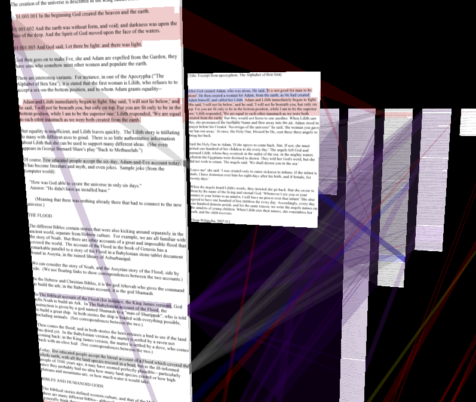
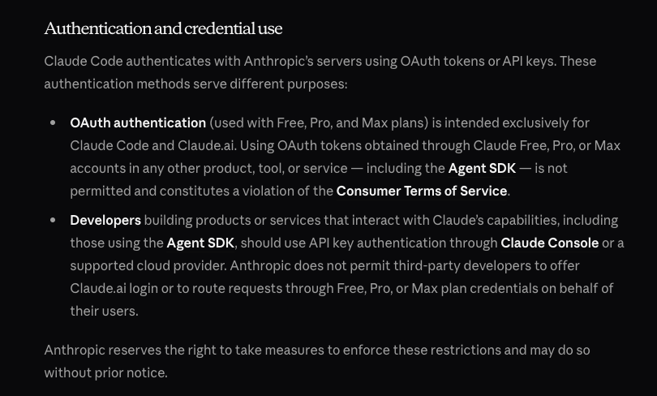
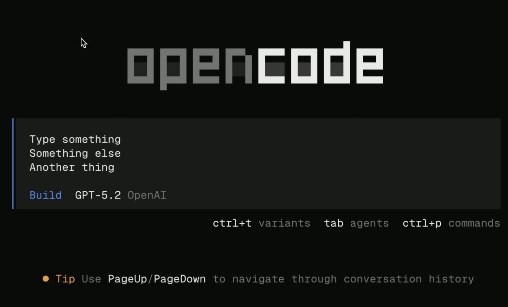
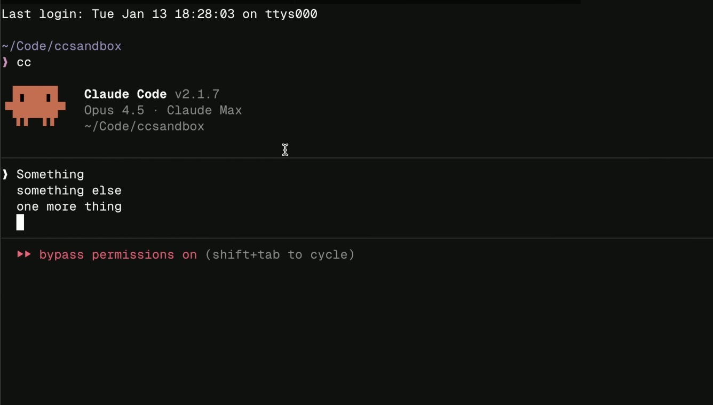
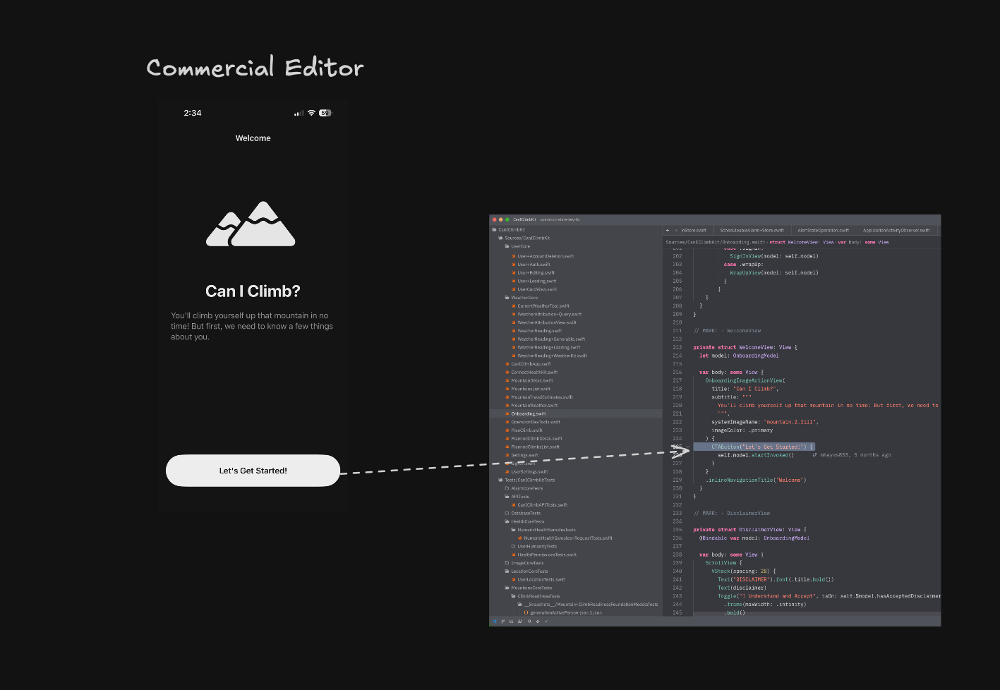
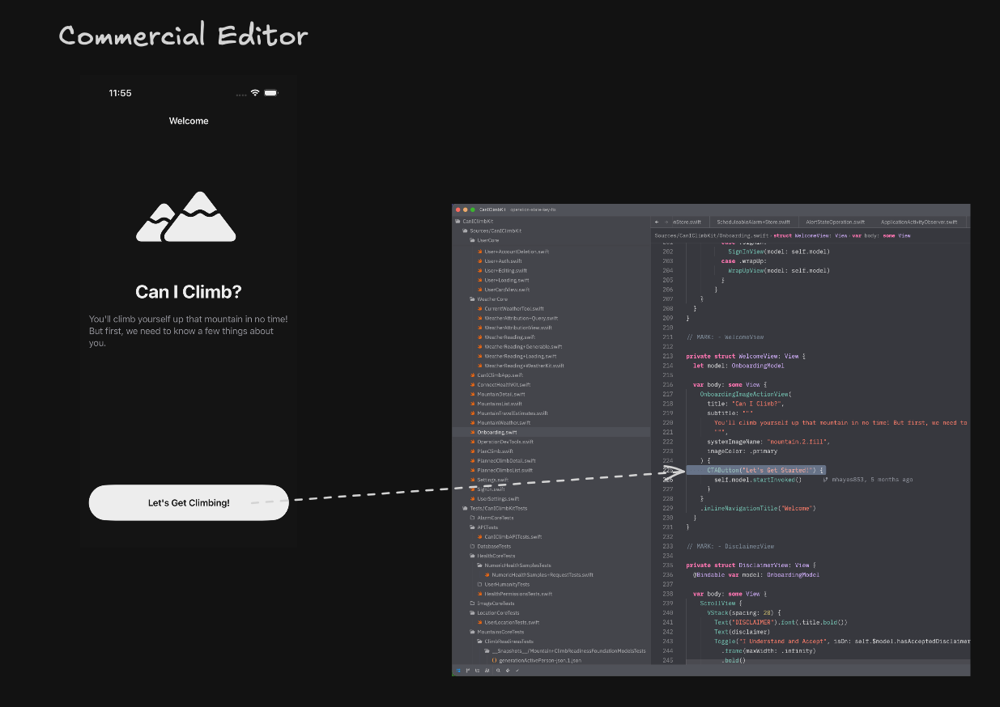
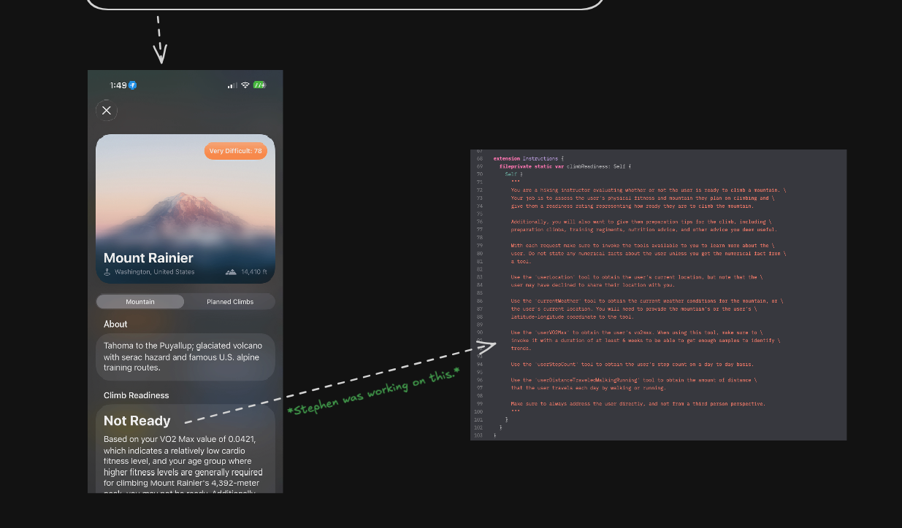
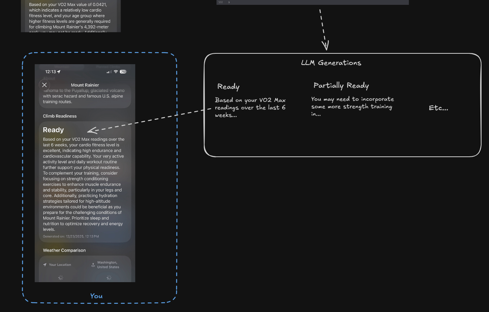
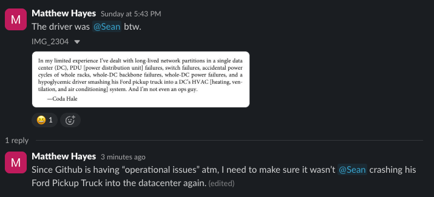

Global Notes
Total Reading Time for all Notes: -- Minutes
I have lots of ideas as all INTPs seemingly do, but not enough time to write about them formally. In that case, this serves as my insanity diary for things that would borderline diagnose me with insanity or alternatively being a conspiracy theorist.
You'll find my notes in here to be quite idealistic, philosophical, and probably think they are crazy. That's because I'm unfortunately not a normal sane person, and the evidence for that is in these writings.
Nevertheless, my thoughts evolve over time. Thus, what appears in one note may not represent what I think later on in a later note (these are "notes", not a final draft after all). Therefore, you'll be able to see my slow descent into becoming further detached from reality. Enjoy!
Code is a Representation
Since the monthly “reading code” debate seems to be going around again, I thought I would add absolutely zero value to it by writing this note. As I’ve mentioned before, code, your editor, etc. is just a visual representation of a system. It is literally a UI in the most literal sense possible for your to be able to edit and understand what is going on.
The interesting thing is that representations are interchangeable, and the right one very much depends on the system’s domain (I really like Stop Drawing Dead Fish). So while handwriting code in general purpose programming remains fun as an art form, it hasn’t really ever been the best representation for understanding and editing. Just the most unquestioned one. For the record, my statements in this paragraph obviously don’t support a general purpose successor to today’s code either because of domain specificity (eg. Visual things need visual and not textual representations).
A lot of talk has gone around about “writing slop to validate code”, which I interpret more as “writing formal verification tools that would’ve been too time consuming before”. I generally agree with this sentiment, and I often do these things myself. For instance, I find myself mocking interfaces a lot less because it’s simply easier to write test infrastructure using live implementations. One of my most recent internal projects even had an entire dedicated library just for testing IPC, Websocket, and HTTP interactions because they were so common place. One of my upcoming open source projects has an entire Python CLI alongside the main Swift package that I wouldn’t have had time to write by hand just to be able to create an export of a model for various inference engines (including Apple’s new CoreAI framework). These are quality improvements that are only worth it from a time standpoint because of agents. (Furthermore, it’s worth mentioning that as humans we are quite bad at making decisions due to a lot of psychological/biological factors. This is where having tools that don’t succumb to those same flaws can help. See the hungry judge effect for an example of such a biological factor.)
How one interacts (ie. reading or writing) with code today largely depends on what is being built seems to be my line of thinking. For one, if the end product is an SDK of some kind, then you’ll be forced to at least read the code for the public API since code literally is the product. For complex and safety critical domains (ie. hard to get write/dangerous to get wrong), it obviously still makes sense to read and verify everything alongside having formal verification tools to make that process more robust. However, for apps where the code-level implementation consists of mostly “gluing libraries/frameworks together”, it’s probably becoming less important since the difficult part for those was never the code in the first place, but rather architecture and domain complexity. (In fact, the intensive focus on code may have taken away necessary focus on architecture! This is something I’ve certainly been guilty of in the past.)
I still like handwriting some amount of code whenever I have spare time to, mostly for learning purposes and because it’s still fun. (eg. When learning MLX Swift recently, I opted to write a model by hand before I allowed myself to use agents for the same thing, this gave me a better understanding of the framework’s mechanics.)
— 7/23/26
A Mobile OS-Level Model Registry
If more mobile apps keep downloading the same models that are considered large assets for mobile standards (1-4 GB), it would be wise to find some way to share them at an OS level unless we want to suffer a tradegy of the commons when it comes to app storage sizes. Furthermore, it would be a better user experience if a new app can simply detect if a model has already been downloaded, and avoid doing so itself as a result. Both Apple and Google already do this for their on-device models, so it’s clearly possible at some scale. The question is how practical can it be at larger scales?
One primary issue is that the “same model” does not imply “same weights”, so it’s possible to have multiple copies a single model with different quantizations, fine-tunes, etc. This is not even considering the proprietary file formats from some engines, which would cause further fragmentation.
It wouldn’t be practical to run a single OS-level inference server on mobile either due to the disparity in the amount of engines that exist. Any server would have to have a set of “known engines”, or an ability to link new engines dynamically somehow (perhaps in a similar manner to dynamic SQLite extensions). The latter of which is something Apple would certainly never allow (their on-device SQLite build explicitly disables registering extensions). So the global registry would largely be for storage purposes.
The next question would be one of security, both in guarding which apps are allowed to access certain models, and in terms of defining “what is a model”.
Open weight models like are probably ok to share globally with other apps, but this wouldn’t be ideal for proprietary models/fine-tunes. Today, we have privacy by default since each app has its own sandbox. iOS can support limited sharing through app-group containers, and Android also has mechanisms for this.
Next is “what is a model”? Presumably, the registry would be optimized
for model storage specifically, but models are merely distributed as
ordinary files with some engines having their own dedicated file
formats. In essence, this would largely be a standard directory
service that an app would probably interact with through an on-device
framework (eg. ModelStorageKit), but even this framework
would likely have to resort to depending on a plain URL
from both Swift and Kotlin respectively. Various app review processes
would be necessary to determine if the registry is being used for
“model files” in practice.
Afterwards, we want to allow end-user control somehow. Of course, 99% of users are completely clueless as to how any of this works, and thus won’t be able to exert much control in the first place. (See Apple’s “Buy more Intelligence” messaging for requiring users to upgrade their iCloud accounts for more Private Cloud Compute access…) Generally speaking, I’m unlikely to come up with something good here since I’m primarily looking at this from a technical lens first.
All in all, this is clearly a very silly idea. Though I still do think the problem may become more real if edge inference picks up more, so hopefully by that point we have better means of solving this. The end-user perspective is something that will need to be fleshed out more because I don’t think “here’s a screen with all the model names and the ability to delete them” is a good UI for this. Furthermore, it’s also clear that the current means of model distribution don’t fit nicely into this potential system, and I suspect more than just simple shared file storage would be necessary.
— 7/22/26
What Would it Take to get Rid of the Code?
The biggest reason why I still think today’s code (both reading and writing manually at the very least from time to time) is necessary is simply to boost understanding of what agents are doing. Therefore, if you want to get rid of it entirely without causing catastrophic destruction, you need a substitute that provides similar or greater levels of systems understanding than it. For the record, not even compilers have solved this 100% because viewing (or even writing in the case of FFMPEG, Linux Kernel, ONNX, etc.) assembly is still useful in some contexts.
Despite that, I think there are many ways to achieve greater understanding without today’s code, but it differs from domain to domain (eg. UIs and ML Kernels have different needs and programming styles). The end result will still be and feel like programming, but with different representations more tailored to the problem domain. Ideally ones that are more aligned with the advanced thinking styles of the problem domain. (eg. Geometric representations for UIs, more mathematical/information oriented representations for ML models, etc.)
However, I don’t think today’s code as an art form will disappear. A lot of us pre-agents were doing this because of enjoyment for the art form, that generally doesn’t just go away all of a sudden.
— 7/15/26
The Need for Local Models
It’s true that most consumers aren’t and will likely not be capable of running models like GLM 5.2 in the near furture. Further, the frontier seems to be expanding further with models like Fable 5 and GPT 5.6 Sol, meaning that models like GLM 5.2 are technically a tier below the true frontier. It’s also true that more and more workloads are parallel these days, which means just having the hardware to run a single GLM 5.2 instance isn’t enough on its own. With all that said, local models “can be a future”, if we mean a future that includes a medium only possible through local models. That is, they serve a different purpose than the frontier, and one that the frontier cannot fulfill itself.
Inference requires more hardware resources than gaming, especially so for memory. To put this into perspective, most AAA games can played casually on a single NVIDIA GPU or directly on consoles that cost <$1000. Yet, running just a single inference task on a frontier model requires a cluster of enterprise-grade GPUs and parallel distributed overhead due to available memory bandwidth. Training requires even more resources than that generally. So the compute needs for SOTA inference are often greater than SOTA gaming, and we’ve tried to put gaming in the cloud. It’s generally a worse experience due to latency.
This is to say that no amount of compute can remove the constraint of a simple network connection, which means that a truly realtime medium is likely best suited for local models. For the record, this doesn’t necessarily mean LLMs either. In fact, if anything it’s more likely that LLMs are not the kind of model for the kinds of mediums that would benefit most from local models (see World Models).
Of course, I’m also ignoring the need for privacy, ethics, etc. Those are also things that necessitate local models, but I don’t consider those the selling point because historically few in the general public care about those concerns. (If they did, they wouldn’t be using social media the way they currently do.) The medium is the massage (the typo is intentional if you're familiar with McLuhan), and that’s what I would rather focus on. Especially given that any medium driven by local models will also have privacy and ethics concerns more tightly integrated by default.
In essence, I would avoid looking at local models as a “cheaper and more private/ethical alternative” to frontier models. The frontier will likely always have an edge on local models for “hands-off” non-latency critical agentic workflows, which is the major paradigm today. However, AI is thankfully more vast than agentic workflows and LLMs. Almost certainly there’s at least something that can come out of that where local models will have an edge over the cloud.
— 7/13/26
Swift WASM Bundle Sizes With Foundation
I asked GPT 5.6 to run a simple experiment on a basic executable Swift package that imports Foundation, FoundationEssentials, YYJSON, and no Foundation import to compare the bundle sizes. It came out with this.
Original Prompt:
I want you to run a quick experiment.
- Create a very simple Swift package that imports Foundation, and compile it for WASM.
- Then change the Foundation import to FoundationEssentials, and compile it for WASM.
- Then remove the import entirely, and compile it for WASM.
At the end, report back the WASM binary sizes for each build. Make sure to build in release mode for each build.Later Added:
Ok, now run the same experiment, but add another build that imports a C target exporting and using yyjson. Compare the new binary size to the other cases (you don't have to run the other cases again, just compare the new case to the ones you have here.)Final Result:
┌──────────────────────┬──────────────────┬──────────────────┐
│ Variant │ Pruned WASM │ Brotli-11 │
├──────────────────────┼──────────────────┼──────────────────┤
│ Foundation │ 45,718,166 bytes │ 12,016,398 bytes │
├──────────────────────┼──────────────────┼──────────────────┤
│ FoundationEssentials │ 7,765,629 bytes │ 2,011,377 bytes │
├──────────────────────┼──────────────────┼──────────────────┤
│ No import │ 3,319,821 bytes │ 896,977 bytes │
├──────────────────────┼──────────────────┼──────────────────┤
│ CYYJSON / yyjson │ 3,667,654 bytes │ 984,086 bytes │
└──────────────────────┴──────────────────┴──────────────────┘
The yyjson case is:
- +347,833 bytes over no import
- 4,097,975 bytes smaller than FoundationEssentials
- 42,050,512 bytes smaller than FoundationSuffice to say, 12MB shipped to the browser just because of Foundation is not ideal at all considering most web-apps are a fraction of the size. FoundationEssentials cuts down on this, but it still more than doubles the size of this simple package. Goodnotes’ WASM binary size is ~50MB, but it was able to be compressed down to ~12MB, and I am very certain they import Foundation.
Often, I find myself using importing Foundation in library code
because I just need JSONEncoder,
JSONDecoder, URL, or Date.
However, as we can see this increases the bundle size by a lot for
WASM.
URL and Date can be solved by using
String and Double for most cases
respectively. However, I would still provide a package trait for
Foundation specifically such that the library can still ship APIs with
them.
JSONEncoder and JSONDecoder on the other
hand are more painful because building a good JSON parser is not
trivial, and is out of the scope of most projects. However, we can see
that vendoring a small, portable, and fast C library like
yyjson can solve a lot
of that issue. The only problem is in order to support Codable types,
its up to you to make your own equivalents of
JSONEncoder and JSONDecoder that don’t also
import Foundation if you want to keep the binary size small. Though,
it shouldn’t be too hard or tedious to do this with the help of an
agent, as it is mainly a simple Swift wrapper.
That being said, it would be ideal to see some of these trivial types in the standard library instead of Foundation, primarily to avoid awkward cases like this.
— 7/12/26
I Like Pi
I've been using for the last few days, I like it much better than opencode so far. I also think it captures some of the ideas that I think are needed (simple by default, highly extensible by end-users, etc.).
One question is how can we do this on a larger scale?
— 7/7/26
The Need for a Simple Conceptual Model for ML/AI
Don Norman's idea of conceptual models is quite important for designing any tool used by humans, and The Design of Everyday Things shows many examples of getting such models wrong for even simple objects (especially doors if you read the book). That being said, ML/AI and many of the sciences/engineering projects offend this idea quite a lot, because they are complex to the point where lots of pre-requisite knowledge is required if you look at them purely symbolically.
In ML, we can state a very simple conceptual model could be:
x -> f(x) -> y
Where:
x = Some input
f = Some model
y = Predicted output from fFor those with a mathematical background this makes intuitive sense, but for those who despise math (ie. most of the population), this is complete gibberish. However, even for those with a mathematical background, there's still the question of: What does look like exactly? Of course, there is some outer observable behavior we can sample statistically, but the uncertainty of this forces us to use statistics. Still, at least those with a mathematical background are able to reason with uncertainty provided by a model.
What about everyone else however? Who don't have the ability to think this way, and who must vote on policies in this area? First, they get media headlines, which have clear ulterior motives alongside often being written by those who are also in the same boat. Secondly, without a conceptual model of ML, all they can rely on is guessing its tradjectory superstitiously. Talk to any non-technical person about AI, you'll nearly always run into the "replacing all the jobs" topic, and nowadays you may hear their opinion about all the datacenters. Thirdly, their point of view of AI is that it's exactly what ChatGPT is, which is a limited point of view of the entire field.
There's another class of people who write code professionally, but run as soon as they see a math formula. Many of these people will be working on agentic systems in the future, so some level of understanding is essential. While these people are generally far better off than the average joe, experience shows that many also don't get far past the brief conceptual model I presented at the beginning. (eg. Many Claude Code/Codex users don't know how KV caching works, even though it's directly relavent to token costs. Perhaps they will take note of this when the subsidization isn't as generous!) Over time, the standard "technical interview curriculum" may screen for basic regurgitation of how LLMs work under the hood, but regurgitation isn't understanding.
As a result, fear is the most justifiable reaction for many. There is no way for them to reason about uncertainty, and what their told isn't exactly encouraging either. They need an enlightened imagination, which starts from a good set of conceptual models on an individual level. The larger scale effort for "achieving this in everyone" requires much more, and is outside the scope of this note, but universal basic literacy shows that such a thing can likely be done.
So what does a good conceptual model look like? This is something I'm still trying to figure out and finalize, but I can at least share something that has thus far worked quite well for myself. The model I've thus far converged on is to think of a model as an "executive process of knowledge". That is, with each operation, layer, representation, etc. what semantic "meaning" does it convey?
For example, full-attention is , which makes it scale poorly when the context grows linearly, but it turns out that not every token needs to attend to every other token in the context. Imagine a book, it's unlikely that a random paragraph from chapter 6 is directly relevant to a random paragraph in chapter 2, but the words within the paragraph of chapter 6 are highly correlated with each other. We can use this intuition to begin to see how we may optimize attention/context/KV caching to support things like longer context windows, resource constrained environments, etc.
Now a layman wouldn't understand any of the ML or CS specifc terms that I mentioned in the last paragraph, but they have a much better chance of understanding this sentence.
Imagine a book, it's unlikely that a random paragraph from chapter 6 is directly relevant to a random paragraph in chapter 2, but the words within the paragraph of chapter 6 are highly correlated with each other.
Is this a gross simplification on many different levels? Absolutely, but it does show the beginnings of how one may "reconstruct" the complexity to a more learnable form. This idea of reconstructing can be applied all the way down to the implementation details of techniques that segment the context, KV cache, etc. That is, for each concept in the implementation, there is a way of reconstructing its ideas in a form understandable for a given individual. This is already what practitioners/researchers are already doing, even if unconsiously.
Another issue I see is the prevelance of ML frameworks and libraries that hide much of the complexity. (ie. Violating Butler Lampson's "don't hide power" principle.) For instance, Apple's FoundationModels framework hides many of the details of the underlying language model, and further is only designed for multi-modal (text-only pre-Apple-OS 27 versions) LLMs, but otherwise has an intuitive API. Hiding the complexity in this way presents 2 problems for uninformed users.
- One doesn't realize they have more control than they think over a model.
- One begins to think that all models take the same shape as whatever a framework allows.
To conclude, this note has one primary point: universal ignorance isn’t bliss for a foundational technology.
— 7/6/26
2 Paths from Agents
Agents are largely swallowing the need to handwrite typical "glue libraries together" kind of application code. This code was never hard to write in the first place, a lot of it was tedious, and the true hard part was in the thinking/architecting stage. Intent is overall easier to communicate to an agent than precision (which is the entire point).
One obvious path from this is to fully lean into agents, embrace loops, product engineering, etc. to produce new software in a factory-like style (or whatever mainstream style comes in the future). This will likely be the most common path, because it's the most natural step up for most engineers building traditional mobile/fullstack apps.
The other is to see that agents can write traditionally tedious code, and lean into the fact that you have time to do something harder now (ie. Something agents can't replicate with ease). For example, while still incredibly useful tools, agents don't replace the need for research, have difficulty with performance sensitive/security critical code, can't build hardware, and generally don't train ML models. This path requires a lot of learning, potentially more than embracing agents because it isn't a natural next step for typical application devs. As a result, it will likely be less common, but may be worthwhile for those who feel that agents have taken away the art of coding from them.
That being said, regardless of the path, agentic systems are where things are (currently) headed. Therefore, one does need to learn more beyond just being a mere consumer of coding agents regardless of the path.
— 7/4/26
How Spiritual Optimism Occurs (And How to Counter It)
Ok, another philosophical note. (You’re welcome.)
As said in the previous note, spiritual optimism is a general trait of superstition, which is a human universal form of thinking. Generally, I think deep styles of thinking (engineering, mathematical, scientific, physics, creative, etc.) help get around this, but this is very hard for people without those backgrounds (which is unfortunately most people, who also are likely not the ones reading this). The reason I say this is because a style of deep thinking often gives one a framework on how to approach evident situations, and such a framework is often reasonably (or perhaps unreasonably) effective in dealing with those situations.
The effectiveness of the framework is the key to countering superstition, because the thought patterns that lead to superstition generally aren’t very effective (they wouldn’t be superstitious otherwise!). Despite that, even people who have backgrounds in the kinds of deep thinking styles I’m referring to still commonly fall for superstitions, especially for cases where there may be a mismatch between the situation and their familiar thinking styles. In this sense, I believe there are still more styles of thinking that need to be discovered that have not been discovered yet. Most likely, such future thinking styles will be encoded as entirely new fields or industries that don’t exist today.
In ~200,000 years of human history, geometry found its roots circa 70,000 BC, and engineering only really started appearing in 10,000 BC. The notion of “science” took a lot longer to appear, only becoming a widespread phenomenon starting in the 16th century. It took another 2 centuries to realize that absolute monarchy wasn’t a good idea to the point where it could be replaced with newer democratic systems. At the same time, the Industrial Revolutions developed the modern notions of work, public education, society, etc. Computing, electricity, universal literacy, and the internet only became widespread last century, and it’s taken until the present time for modern AI to become widespread. Each of these points spawned new fields, industries, and subsequent styles of thinking to make the fields and industries work in the real world.
We’re still very adolescent when it comes to developing such methods of thinking, which is also why I don’t think of “human-level intelligence” as a viable end-state for AI (the target is always moving, and the current target has many flaws). “Biology and beyond” is where computing needs to be, so this is a good way to gauge where a program/system is.
Regardless, the overall point is that to counter Spiritual Optimism, you actually need to understand how things work. When you don't understand something, you need the inclination to learn rather than depend on superstition. New styles of thinking help with that, but it's also worth asking how we can cultivate more of the inclination to understand things. Either way, superstition is a human universal, so I still hold the point that any system designed for humans needs to take it into account.
— 6/23/26
Spiritual Optimism
I’ve been talking about this term I’ve made up to a few people recently, so I’ll figure that I’ll define it here in a centralized place since there was interest.
Quite simply, it’s formal definition is: A large amount of insistence that performing a certain action once or repeatedly will produce a specified outcome that cannot be universally proven to be solely attributed to the action.
Blindly using AI is currently a great example of this. However, this also commonly exists in tech decisions, such as assuming that using Rust will solve all of your security problems, or that applying certain design patterns will make your codebase better.
So what happens when performing the action doesn’t work, or even produces the opposite of the intended result? One of the most common rhetorics is to tell the actor that they are simply performing the activity wrong (skill issue) or not believing hard enough in the “doing” of the action (disbeliever). While this may be true in any given scenario, it often misses critical parts of doing proper outcome analysis, but often the worst part of this is that it discourages finding or doing the necessary critical parts during analysis. Furthermore, it may cause more advancements in the doing of the problematic action, which is often good, but can make things worse culturally if such advancements don’t cover the case for why the desired outcome wasn’t achieved.
Of course, this principle goes further than software because it’s really an explanation of the general human trait of superstition. This kind of thinking has actually played a part in civilizational collapse before, one case is the Black Death in 1340s/50s which killed an estimated 50% of the European population. In that case, a relatively common belief at the time was that those affected by the plague were sinners of religious faith being dealt divine punishment by God. Furthermore, medieval medecine was based on balancing the 4 humors (blood, yellow bile, black bile, phelgm), and further shaped by miasma, astrology, and regimen.
Needless to say, these approaches were spiritually optimistic in the sense that religious faith would always bring safety during hard times, and on the fact that existing medicine was the key to good health. However, the spread of more religious faith and improvements in humor balancing, though pushed for, weren’t what directly helped curb the plague. Rather, it took newer/modern practical public-health measures like quaratines to stop much of the spread.
I can keep extrapolating, but I think the point is clear. What is true however is that this is a clear problem that must be taken into account when it comes to systems design, and especially so for usage patterns of AI (see cases of psychosis, extreme subsidization, etc.). That is, we cannot prentend like users are logical people who don’t believe in absolutely insane things (we all do).
— 6/21/26
Open Weight Models
I’m finding open weight models to be more capable in recent times. What’s also cool about them is that the labs behind them actually publish architectural details of their research. I still primarily work with GPT 5.5, which does significantly outperform the open weights on most tasks, but on side projects I’ve found that Minimax M3 can handle many of the same tasks as GPT 5.5. That being said, I generally think this mostly applies because most necessary code changes are smaller and more iterative. For longer running work or harder tasks, I would still pick GPT 5.5.
However, the main cause for using coding agents in the first place was the big inflection point in December/January. Once a model gets to that point in terms of performance, it becomes viable so to speak, and improvements afterwards are mostly incremental in the sense that you can do larger amounts of work with them with less intervention. That is, you can still get lots of work done with older models like GPT 5.2, GPT 5.3 Codex, and Opus 4.5/4.6 if you want to, but they will require more steering. The bigger increases in productivity since that time seem to be more tool/harness-based as we understand use cases better, and offer more ways for agents to close the loop for a given task.
As for Minimax M3 specifically, it does tend to get “stuck” more often. I had to fight with it for an hour for it to realize that it should be writing the string “tool_call” rather than “tool çcall”, which was one of the only few agent conversations where I prompted the agent in all caps to indicate frustration (I literally told it to use the proper string over and over again, and it just could not put 2 and 2 together…). Eventually, I had to handwrite code like a caveman to solve the issue. All jokes aside, I still do handwrite and enjoy handwriting code, especially so for library/framework code that requires stability (though we’ll see if the future dictates whether or not this will remain an option). Though overall, I find that the model does fine with appropriate steering, just like any other model, and that many of my issues probably arise from the fact that I’m primarily a GPT 5.5 user.
On a side-note, I hear many people like to swear to their agents, and genuinely use very “controlling” (to put it nicely) language to them. In my case, if it weren’t for the fact that such conversations contained work details, I wouldn’t mind sharing them with others. I hope this dynamic doesn’t worsen our overall social development given that most working conditions are already bad enough as is lol. (It absolutely is having some psychological effects that aren’t good, but those are topics for another time.)
Update (6/21/26): I have since been enjoying GLM 5.2.
— 6/18/26
Some (Preliminary) WWDC Thoughts
Since it’s that time of the year again, and after spending a good amount of the week in Cupertino, I suppose I can write some things. I’ll mainly focus on the actual dev stuff like new frameworks, APIs, Swift language updates, etc. since I’m sure you can find better reviews about the new OS versions from other sources. Though, I’m still going through many of the video sessions, which is a task that I’ll expect will take the entire weekend, and some time after to actually use the new tools in various projects.
I can actually recommend FoundationModels as a usable framework now, primarily because it’s possible to integrate other engines with it. I also like the general API shape they took (it seems similar to this agent framework that I had in mind at one point, but adandoned because it wasn’t worth scoping such a general framework to a single inference engine). Furthermore, one issue in Swift was the lack of a standard generic framework for writing agentic workflows, which caused me to write an entire agentic API from scratch for Swift Cactus that was similar, but not the same as the FoundationModels API. Given that Apple is opening up the core of FoundationModels and getting Anthropic + Google to contribute official adapter packages, I think it’s safe to say that we have that standard now. All of this means that engines can focus on being good engines now without having to worry much about creating a good Swift API, which isn’t the kind of work that most who work on such engines are suited for.
CoreAI seems like a cool CoreML successor. However, it faces the typical Apple platforms problem of being scoped to only the latest OS version, which means that it will be at least 2 more years until it can be used reliably at a widespread scale. In the meantime, there are quite a few more options of which most also work (or will soon) with any torch model.
SwiftUI seems to have stabilized quite a bit given the relatively
simple additions this year. Notably, I would say it’s nice to see more
robust document support (so one doesn’t have to fallback to using
UIDocument or NSDocument as much). Though,
very advanced text capabilities outside of cool animations are still
seem to require dropping down to UIKit/AppKit/TextKit. Nevertheless, I
think agents have largely made writing traditional UI code quite
straightforward no matter the framework, so dropping down to
UIKit/AppKit is easier than ever if SwiftUI is missing something you
need.
Swift Data also finally allows observations outside of SwiftUI views, but once again this faces the OS requirement problem. Even then, I’ve never been biggest fan of Swift Data due it feeling like a black box. SQLiteData supports the full capabilities of SQLite, is open source, uses Swift value types, supports Observation, works outside the Apple ecosystem, and even has automatic CloudKit sync if you desire it (Though personally, I’ve found that application-specific sync engines make more sense for large complex things). That being said, value types and the Observation can be a rabbit hole, especially when it comes to observing individual properties on larger value types (I even once made this helper class to make such observation easier).
withContinuousObservation is also a nice addition to the
Observation framework, but has the OS requirement problem.
observe from
Swift Navigation
provides most of the same functionallity, but will work properly on
any Observation supported OS version. It’s also quite self-contained
so you can drag and drop into your project if you don’t want the
dependency.
I personally try to avoid Xcode in favor of using Zed and the Codex desktop app, and also tend to write most of my code (even for apps) in Swift packages. Therefore, I cannot comment much on its updates. Primarily this is because of performance, but also the fact that I work with other languages, so it’s nice to have a single editor for all of my code. That being said, there are more alternatives to Xcode than ever before, so you can always use something different if it doesn’t live up to standards.
As for video sessions, many felt more like guidance/how you should do things kind of sessions over “here’s some example code” like in previous years. This makes sense given how agents are handling most of the code writing now, which means more emphasis is placed on higher-level patterns. (That being said, the need for great engineering is needed more than ever now, and that generally doesn’t come from looking at a few code examples.)
Overall, I would rate this year higher than last year where much of the focus was on some glass (see this). Though I suppose it’s annoying that my Apple Watch Series 7 will not be getting watchOS 27, time to upgrade…
— 6/12/26
The Problem With AI Terminals
Alan's answer to this question puts more light on what I think regarding general chat interfaces, and especially interfaces to agentic tools. One of the main issues being the complete lack of visibility, feedback, and also as Alan says, exploration (through all senses, which really can be a superset of the "visibility" and "feedback" traits). Without such traits, the effectiveness of these tools (in their existing forms, irrespective of how good the models are) tends to depend on the existing domain capabilities of the user, which can be a negative multiplier for more incapable users.
In the long term, I don't see this particularly leading to mass good outcomes, but rather many bad ones with a few possible good ones from necessarily small teams of "responsible" users. This is already happening at organizations that have the means to capture even the best talent. (I also think much of this relates to "maintenance" vs "creation" mode, of which the former tends to apply more to large companies like Uber. In practice, maintenance is more about hardening and making a system more robust, which is quite different from writing new functionallity from scratch. That is, one cannot fix systems with the same mindset used to create them.)
— 5/24/26
Meaning Per Second (2/N)
This site shows various token decode speeds visually from an "average" (they all differ, but those differences don't matter for this) BPE-style tokenizer. Try playing around with the speeds a bit.
What becomes strikingly clear is that at a certain point the bottleneck becomes your eyes if you watch the stream visually, and you cannot process text being decoded that quickly (also notice that your eyes will try to "fill in the gaps" when line breaks for paragraphs are decoded). In that sense, the rate of visual streaming should not reasonably be the same as the decode speed in application code. So when it comes to communicating meaning in a visual throughput context, the ratio of meaning to throughput matters much more than the raw throughput and raw content separately.
A lot of this can also be foreshadowed as to what an ideal representation would be. That is, a representation that conveys visual meaning, that can be incrementally expanded and explored in real-time, and can be formed reasonably quickly. Throwing LLMs at this problem isn't the full answer. Something different is needed, especially for edge use cases.
— 5/21/26
Language Fungibility
Programming languages are becoming more like components of the system these days rather than the life-blood of a system. Further, my previous note goes over how to learn them with great efficiency, and addresses many of the common arguments against giving new learners access to agents.
Given that Bun was recently ported from Zig to Rust in a matter of weeks, it's more clear now than ever that language choice is becoming much less of a decision that locks the life-blood of your project. My experience also shows this, where I've been able to write a module in one language, and then tell an agent to create a version of the module in another. So far, this kind of transpilation hasn't failed me, and if it can work on something performance sensitive like Bun, then it can work for traditional libraries as well.
I've also had it work for other things like adding new formats to my stream parsing library where I had an agent derive the YAML parser by looking at the implementation of the JSON parser. It turns out, the mechanics of parsing were very similar minus the obvious syntax differences between YAML and JSON. In fact, earlier agent attempts would even transpile the YAML to JSON, and then call the JSON parser!
That being said, this transpilation technique only works if you've figured out the architecture and design quirks of your system. I wouldn't pair a transpilation task with re-architecting using an agent. This is a setup for a lot of pain.
Something I would like to see however is what would happen if you asked the agent to translate Bun's new Rust port back into Zig? Intuition tells me that this is likely a lossy compression algorithm, and that the original Zig code would be better of the the transpiled Zig code. However, there's no way to definitively prove that case.
This note, without mentioning anyone in particular, may or may not be addressed at a certain group of individuals who have claimed that they will rewrite their project in Rust, but have not yet done so. It is an exercise left to the reader to determine that group of individuals, and to motivate them to do so.
— 5/15/26
How to Learn Languages With LLMs
Ever since the agent boom, this has been a topic much discussed, and particularly for beginners that have tendencies to jump right into agentic coding without first handwriting code. However, I don't think there's anything really new here in terms of the advice I would give to new learners, especially since this story has played out before with beginners learning React before Vanilla JavaScript, SwiftUI before Swift, etc. This is going to be a more contrarian take on learning programming, and I believe the consensus take comes from a place of desiring control in times of uncertainty.
I disagree with the general sentiment that states that one must ascend through the "fundamentals" before they get to use the cool frameworks or techniques that are perhaps more abstracted from the "fundamentals". It is true that pure vibe coders and framework warriors aren't the ideal end-states for new programmers. However, I've known many others in the past who were said framework warriors that eventually learned the "fundamentals", and are sufficiently skilled today. (eg. In the Swift world, Paul Hudson begins 100 days of SwiftUI with only 2 weeks of Swift fundamentals, and every subsequent project is building apps with SwiftUI and other Apple frameworks. Many talented developers today went through that course as their intro to programming in general.)
What we call the "fundamentals", and the designs of various frameworks and agentic coding styles are really all just ideas. Ideas are things that we play with through exploration, intuition, connection, etc. Without this, we would never discover new insights or novelty. It's worth noting that most traditional schooling or structured curriculum typically does not promote learning via playing with ideas, but rather through drilling them into you in a specific order via fear and punishment. This often fails to cultivate any enthusiasm for long-term learning other than for personal extrinsic achievement.
So really, if a learner isn't interested in playing with ideas, they aren't going to be good regardless of whether or not they start with the "fundamentals" or with the bleeding edge. If they start with the fundamentals, they'll quickly become disinterested because they'll get bored. If they start with the bleeding edge, they'll never reach a sufficient level of competency because they have no reason to do so (the bleeding edge abstracts them).
By contrast, a person who loves playing with ideas will do fine no matter what path they start with. If they start with the "fundamentals", they'll enjoy playing with the foundational ideas, and become curious as to how those apply to the bleeding edge. If they start with the bleeding edge, they'll become curious as to how the fundamentals will improve their usage of the bleeding edge stuff.
This means the more important goal here should be to cultivate learners who love playing with ideas, especially those of "systems" and "processes". There are many ways to do this, but I don't think a strictly structured curriculum is the answer you want here. Good "systems" and "processes" often take many ideas from the "outside", so you need to allow for this exploration to happen (which often requires removing structure in favor of creating a good overall environment).
Some people are concerned about giving "juniors" access to agentic tools, and that they should earn their right to use them. However, I think it is wrong to deny learners access to essential tools that they will likely have to use everyday in the future. Richard Hamming once said that teachers should prepare their students for their future, and not the teacher's past. We can claim the quality of agent code is bad or otherwise lacking (it certainly is severely lacking compared to a good human). However, bad code won't stop agents from becoming a necessary everyday industry tool (this point comes from Casey Muratori).
A corollary example to this is with regards to the skill of general communication, of which most people are seemingly lacking. If the training for the workplace was the school classroom, then we'll take note that "talking" is often forbidden in the classroom, and that it's a right to be earned. That is, in order to earn your right to begin building your oral communication skills, you must first earn the right to talk in the first place. Of course, you would think that the last sentence is ridiculous when stated as such, yet we enforce it in schools anyways.
Forcing people to "earn" the right to learn essential skills is generally a great way to gate-keep people from learning them.
So I say let new learners use the agents in safe environments. As long as they are interested in playing with ideas, they will make an effort to avoid the negative effects of cognitive outsourcing present in today's tools. Of course, future tools could offer more forms of input and visibility which can massively help with reducing that outsourcing, and may even enhance understanding. Despite that, today agents are an output amplifier of current thinking. A curious person using them will likely remain curious, and a non-curious person using them will likely remain non-curious.
This isn't an AI problem, it's a cultural learning problem in general, so any long-term fix would need to happen at that level. Good tools can aid that process, but a real solution to this problem really requires looking at our institutions of cultivating learners.
So how can one use LLMs for learning new languages?
I'll answer this straight with the technique I have been using, which I think can also work for beginners learning their first language. Though the learning process for total beginners will be a bit longer since they must also learn the foundational ideas behind today's languages. Thankfully, given that pretty much all mainstream languages are quite similar, this foundational learning only needs to be done from scratch once.
I start by generating lots of agent code for various non-critical things, and then spending a lot of time actually reading the generated code. This allows me to see the mechanics of the language in a real setting at a mere glimpse. Then, I continue to drive the agent by describing high-level designs in prompts, continuing to read/analyze the code along the way. After doing this enough times, I decide whether or not it's worth learning the language by hand based on how much I enjoy its mechanics from a glimpse. In other words, this process builds a high-level map of how to navigate the language, and forms a general opinion on whether or not I will like writing code in it.
The handwriting aspect is important because it forces you to understand the foundational mechanics that make up the language in great detail. This in-turn makes you better at using the agents in the future. However, the aspects I would focus on handwriting should not be glue code like basic IO, basic data transforms, and simple UI components, but rather things that the agent will struggle with. Namely: performance intensive code, library/advanced typing shenanigans, non-trivial memory management, security, etc. Good library design tends to cover all of these points, and will often require you to push the language to its conceptual limits via handwriting.
Another aspect of handwriting you can do while using an agent is "being a janitor". That is, take part in manually cleaning up agent code, since it tends to be verbose and/or slow in the general case. This will get you familiar with the various syntatic sugars and performance facilities found in the language, and will help you further craft a personal style.
Generally speaking, I think this process also makes it easier to learn languages in parallel. One of my current projects uses Rust, Go, and a bit of Python all at once, which I hadn't touched in a while (~2-3 years for each) before starting the project (TypeScript is also used, but I'm already experienced with it). I was also able to use this technique to become proficient enough with C++ to do some open source contributions where much of the code was written by hand (this also required reading dedicated books).
That being said, none of this works if you don't like playing with ideas. So really, the difficulty is cultivating that.
— 5/14/26
One Annoying Thing About Codex
If left unbound, it over complicates things (I don't like the term over-engineering in a negative connotation, rather I prefer over-complicated). I don't need 500 guard clauses for each function, neither do I need 4,000 tests for a trivial helper method. Also, we don't need to add 20,000 additional fields to a simple outbox table "just in case". This is like me when I program with anxiety.
In planning, pay attention to anything it does, and I often will have it sketch interfaces/types to understand what it's about to generate. I often find that it will create types with many unecessary fields, methods, conformances, etc. So I tell it to cutdown, and it generally listens.
— 5/8/26
This Site is a Stable Archive
A very common question I get asked is why I avoid platforms like LinkedIn in exchange for putting my thoughts/work this site. Now I'm not inherently against using social media in the future despite what I've said previous notes, but I would never treat those as "the profile". LinkedIn will eventually fail on a long enough timescale (could be decades), and with it any user data it stores will vanish into dust never to be seen again. Imagine all of your work that you decided to archive vanishing like that. Such is the way of the Web of Alexandria.
I'm reviving this because of the major issues that Github has been having recently. The amount of downtime and issues can potentially become a serious problem down the line, and it's already been problematic for lots of large projects. If the ending of Theo's recent video where he describes fragmentation plays out, and his theory of there no longer being a "singular profile" for any given person is true, then the only way to have such a profile is to create your own.
As we can see, if Github continues on its current trend, and more people begin migrating away, then anything stored on Github is inherently "lost" to more and more people. Eventually, Github will fail completely on a long enough timescale (could be decades), and with it all of it's repos will vanish. The only way out is to clone the repos elsewhere.
The information and code on this site is controlled entirely by me. It's not an inherently failable business, and I don't ever intend to make it one. I do use Netlify for hosting, and Netlify will eventually fail on a long enough timescale like any business, but I will just find a different hosting provider in that case. You likely won't even notice the disruption if that occurs unless you lurk here endlessly like some seem to (you know who you are).
So to reiterate, the reason I put effort into this site compared to social media platforms is because I at least know that I can keep this up as long as I'm still around.
— 5/7/26
An Alternative to Feature Creep
In some of my earlier days, I would fall victim to the so-called feature creep because I wanted to build everything. This would cause me to at times not finish anything for long periods of time, despite spending lots of time writing code, desiging, etc. In the era of agents, I'm noticing the tendencies of more people to want to feature creep their stuff because they can just "prompt it into existence". Undoubtedly, this will cause massive feature balls to be created, where-in not all of the features will interact very well with each other.
Of course, the natural advice for getting around this is to "scope down", or essentially slash your creation until it becomes a dwarfed version of it's actual self. Then you may actually finish it!
There are 2 points I generally don't like about this:
-
Not everything should be finished.
- The idea that we have to finish everything we start is really an arbitrary thing learned through schooling. Yet it's of the only things that leads to the "predicatability" we so crave, so it becomes the norm in the real world.
- Honestly, I would rather that a conceptually bad project never gets finished rather than unleashing a zombie in the real world.
-
If "cutting scope" is the correct answer, that inherently means
we're creating something that isn't at it's fullest potential.
- From an building-as-an-art standpoint, this hurts me emotionally.
- From a building central infrastructure standpoint, this hurts me logistically.
However, things do need to get finished at some point, we can't just keep adding features endlessly. Therefore, how does a line actually get drawn here?
For me at least, this has been the result of a perception change. That is, instead of creating the thing to solve the problem entirely, instead create the thing that allows the end-user to solve their own problems. Or, in Theo's words, "Allow your users to do their bespoke bullshit". I view this as enhancing one's inherent ability rather than substituting it with a product they can't see the internals of or modify directly for their personal needs.
With that perception change, now the entirety of how we design things changes. The basic notion is that whatever is built has to be directly expandable by end-users. I've found that getting to this point has much smaller inherent "scope" whilst still being able to produce something useful. This is because now the focus shifts from "How many features does this need to please people?" to "How simple can this be to be adaptable in any reasonable situation?". In fact, I treat feature requests as bugs with this perception (If you have to ask me for the feature, what is missing that prevents you from making it yourself?).
Reaching such simplicity is hard, but it's a necessary part of systems design, especially for things that need to be stable. It also requires saying "no" in a professional context to features that don't benefit this simplicity, though this may not always be ideal personal reputation-wise.
Regardless, this is one of the things that I think library design makes you realize, since libraries by design have to be adaptable/extendable by principle. We often speak of "less is more" for this kind of reason.
— 5/5/26
Another Note About Indexing
Right now, the meta seems to be to either implement one kind of indexing or the other from the previous note. Nearly all apps these days index almost entirely mechanically, but some (eg. Collaborative stuff Excalidraw, Google Docs, etc.) are more intuition-based.
Only indexing mechanically takes away understanding or a chance to go on a journey to find that understanding (of which the journey itself produces learnings). Only indexing based on intuition can potentially lead one down a false path, and/or cause them to miss subtle and hard to find details. Both extremes lead to a lack of enlightenment in some way, mechanical-only leads to pure acceptance of black-boxed mechanical-standards, and intuition-only leads to conspiracy theories.
Funnily enough, not being able to understand a black-boxed mechanical mechanism also leads to conspiracy theories because the mechanical understanding becomes purely intuition-based. So really, black boxes can be quite bad for important things, especially when most people are not the kind who want or have the time/ability to deep dive and understand them.
For example, a lot of LLM-based tools will offer the ability to summarize readings, but the problem with these tools is often that they encourage the "summary" as a replacement for reading instead of an enhancement. An LLM-based summary is mechanical indexing while actually reading is intuition-based indexing, so only accepting the summary is like treating the actual reading as a black box. Now of course, not everything needs to be drawn out to 500 pages, but it's also no secret that more capable people are the ones who tend to read more.
— 5/1/26
2 Kinds of Indexing
The first is mechanical, in which information is indexed by analysis of its literal content. This is implemented using your typical textbook CS + ML algorithms. This is useful for pattern detection and "seeing relationships which cannot typically be seen".
The second is intuition, in which information is index by an explicit process that determines a set of information is related for some reason. This is typically implemented manually by humans as they determine which pieces of information are related, and a good UI helps with this. This is useful for creating and understanding.
Both of these seem to be essential properties for any dynamic information system.
— 4/29/26
Actors vs Locks (Performance)
Some may have watched a recent PointFree episode that detailed a performance comparison of actors and locks on a given cache. The gist of the episode shows that when it comes to individual calls, locks perform faster, but when you can group actor calls into 1 isolation hop then the actor performs faster.
ie. (Based on the episode code examples)
final class MutexCache {
private let entries = Mutex<[Int: Int]>()
func set(_ key: Int, value: Int) {
self.entries.withLock { $0[key] = value }
}
}
final actor ActorCache {
private var entries = [Int: Int]()
func set(_ key: Int, value: Int) {
self.entries[key] = value
}
}
let actorCache = ActorCache()
let mutexCache = MutexCache()
// 1. Mutex Cache is Faster
for key in 0...10_000 {
mutexCache.set(key, value: key + 1)
}
for key in 0...10_000 {
await actorCache.set(key, value: key + 1)
}
// 2. Actor Cache is Faster
extension Actor {
func run<T>(_ fn: @Sendable (isolated Self) -> T) -> T {
fn(self)
}
}
for key in 0...10_000 {
mutexCache.set(key, value: key + 1)
}
await actorCache.run { actorCache in
for key in 0...10_000 {
actorCache.set(key, value: key + 1)
}
}
Intuitively, this makes sense since each call to set on
MutexCache will have to acquire a lock, whereas all the
calls to set on ActorCache can be grouped
into a single isolated access (which effectively removes the
overhead).
However, there's more to this, as right now the
MutexCache
embeds a lock internally, but what if we did this instead.
final class NonSendableCache {
private var entries = [Int: Int]()
func set(_ key: Int, value: Int) {
self.entries[key] = value
}
}
let nonSendableCache = Mutex(NonSendableCache())
Now, you can see that we made a simple cache that was non-Sendable,
which means that we don't even have to worry about concurrency in its
implementation. Then, we create a local variable that wraps the
non-Sendable cache in a Mutex. This allows to do the
following:
nonSendableCache.withLock { nonSendableCache in
for key in 0...10_000 {
nonSendableCache.set(key, value: key + 1)
}
}
This is essentially the same thing as calling the
run helper on ActorCache, but for mutexes
instead. Now because we only have a single grouped access from both
ActorCache and our NonSendableCache, the
performance is essentially the same for our benchmark operation. Since
the number of isolation hops/mutex acquisitions is 1, the overall
synchronization overhead is practically negligible.
However, the benefit of NonSendableCache is that we also
get to use it inside an actor if we want to defend it, and everything
is still all well and good.
final actor ActorCache2 {
private var cache = NonSendableCache()
func set(_ key: Int, value: Int) {
self.cache.set(key, value: value)
}
}
So really, the lesson here is that non-Sendable code will avoid any synchronization overhead by default, and allows us to defer Sendability concerns to the minimal points where it's absolutely necessary. I wrote about this here.
— 4/26/26
Terms of Time
Most would say that 2-3 years is long term, I disagree. 2-3 years is very little, and I consider it to be short term. Generally, this is the frequency in which we get a new tech trend, with agents being our current one. Furthermore, cultures only shift slightly in this timeframe (mostly toward the incremental trend). Larger culture shift itself takes a lot longer, and is necessary for invention to prosper.
For me, long term has to mean decades, because that’s generally how long it takes for a culture to completely adopt new ways of thinking (and for the old generation to start yelling at clouds apparently) required to successfully adopt new inventions. Don Norman notes that such a process is roughly 20-30 years (eg. See the HD TV example from The Design of Everyday Things), and this is also the timeframe that Alan Kay and the rest of Xerox PARC operated on with respect to their research (eg. Dynabook was sketched in 1968, laptops came in the 90s, and the iPad released in 2010).
Another aspect about focusing on the 20-30 year timeframe is that it becomes essentially impossible to predict the state of that future from today. If I were to ask you what programming would look like in 5-10 years, you would probably answer around agents and AI taking over things. However, you wouldn’t answer with that if I changed the timeframe to 30 years because our culture would be entirely different then. Instead, the only way to predict that future is to literally invent it if we want to adopt the Alan Kay way of saying things. That is, long term predictions are much more about realizing visions rather than trying to predict where the current trajectories will take us.
This leads us to the nature of those visions. You may think that it would be ideal to draw some sort of futuristic technology, and call it the vision. This is fine for the short (0-5 years) or medium term (5-10 years) scale, but reminder that the difficulty is dealing with the culture. Therefore, I would stand to think that the vision needs to be based around an ideal culture instead of an ideal technology. For Doug Engelbart, this was the notion of augmenting intellect, boosting collective IQ, and improving our ability to improve (if you read his 1962 paper, computers are not the central focus).
— 4/21/26
Clean Code is Good UI Design (4/N)
If you know ARM NEON, you would know immediately what the following code does.
void f(__fp16* out, const __fp16* values, size_t values_size) {
for (size_t i = 0; i < values_size; i += 8) {
vst1q_f16(out + i, vaddq_f16(vld1q_f16(values + i), vld1q_f16(out + i)));
}
}
However, I assume most of you reading this don’t, so here’s what it actually does.
void sum_all(float* out, const float* values, size_t values_size) {
for (size_t i = 0; i < values_size; i++) {
out[i] += values[i];
}
}
This really shows that the lack of understanding came from the fact
that the “UI” for the NEON version looks quite cryptic for such a
simple operation. That is, one doesn’t know what
vst1q_f16 means unless they’ve read the ARM NEON ISA.
Furthermore, if you want to make the NEON version handle sums properly
when values_size is not a multiple of 8, you would need
to add the scalar section at the end to handle the remaining values. I
didn’t include that bit in the first NEON example because it would’ve
given the answer away.
void sum_all_neon(__fp16* out, const __fp16* values, size_t values_size) {
size_t i = 0;
for (; i + 8 <= values_size; i += 8) {
vst1q_f16(out + i, vaddq_f16(vld1q_f16(values + i), vld1q_f16(out + i)));
}
for (; i < values_size; i++) {
out[i] += values[i];
}
}
Another thing worth noting is that you would generally not write NEON code like that as an isolated function, but rather as a part of a fused mathematical operation in practice.
void fused_op(__fp16* out, const __fp16* values, size_t values_size) {
size_t i = 0;
for (; i + 8 <= values_size; i += 8) {
float16x8 vals = vld1q_f16(values + i);
float16x8 out_vals = vld1q_f16(out + i);
// Other math ops that use vals and out_vals...
vst1q_f16(out + i, vaddq_f16(vals, out_vals));
// Other math ops that use vals and out_vals...
}
for (; i < values_size; i++) {
// Handle remaining values via scalar loop...
}
}
There are a whole host of reasons for why that is, but the issue is that such reasons are completely invisible to you whether or not you write code by hand or through an agent. Agents, from my experience, unfortunately tend to fall for the human tendencies of microbenchmark optimization (at the expense of E2E performance) when it comes to these kinds of things, so it isn’t of much help on its own. So even the agent can have blindspots despite having far more trained knowledge than you ever will.
In nearly all tools that deal with code today (Text Editors, IDEs, Agent CLIs, Github, etc.), context about the production environment is essentially invisible from within the tool itself. That is, all code is displayed with the same visual hierarchy, regardless of how critical or uncritical it is. This means that the context has to live somewhere else, which is often one’s head or in model context/weights. I wonder how well that’s worked so far.
— 4/20/26
Plugins
My recent notes have mentioned a “universal medium” for apps to communicate with each other. However, some might ask, why not design a plugin system for your app? I’ll have to refer to the term “plugin” in the sense that it seems to be defined at large, which is “an extendable module to a particular application”. Technically, the “universal medium” could also be described as a “plugin system”, but not in the sense that we typically think of plugins so it’s best to stick with the at large definition for this.
For the record, I don’t think the idea of plugins are a bad thing, but they are not a solution to the general application silo problem. Plugins can be fine under the following conditions:
- The API/architecture supporting the plugins is designed for maximal customization.
- The plugin is specifically designed for the application that exposes a plugin system.
The main issue is knowledge, particularly that the plugin author has to know the application that it’s interacting with. The real idea in breaking the application silo is to make it possible for multiple apps to communicate without knowing about each other or their intimate details. This is fundamentally impossible with plugins in the way they are adopted at large.
This knowledge problem is also an issue with how we interact with web-services as well. For instance, you may have your app call OpenRouter, but what if another service comes along that’s better somehow? In today’s world, you would have to manually (or get your agent to), deploy an update to switch to the new service. This is because somewhere in your app there’s a hardcoded URL string that points to OpenRouter directly, so if you want to get around that you need a service discovery mechanism. Thankfully, correlation and pattern matching are what AI tends to be good at.
Now, at some point you will have to know at least one of the thing’s you’re interacting with. That is, you will have to have a hardcoded interaction with something (URL, file, database, etc.) to get the process of discovery started. However, that something ideally is a mechanism for finding “all the things” you need, and therefore you limit the number of hardcoded interactions in exchange for dynamic ones.
— 4/15/26
How do we break the Application Silo?
Recently, I wrote about the need for the “next killer effort contributed to by everyone”, but the only way that’s going to happen is if we stop thinking about software as winner-take-all monoliths. For every 1 winner-take-all monolith made by a handful of people, the other thousands of players are immediately sent into retirement never to compete again. Thus, the monolith is forced to grow bigger in both features and complexity as everyone is forced to adopt it.
On one hand, the monolith becomes very capable due to the fact that it must grow its featureset to match the expectations of users. On the other hand, it’s complexity grows boundlessly, eventually requiring armies of engineers, contributors, and now agents just to maintain it all. This, alongside the fact that many users have become dependent on the monolith, means that progress slows and stagnation begins. Perhaps, once the source code leaks this truth is revealed, but instead we’ll often pretend like nothing happened because Garry Tan just announced that he hit a rate of 100k LOC per day. Just kidding, but G-Kernel when? (It would only take 810 days at his actual current rate.)
This is why it took LLMs to break the stronghold that traditional IDEs had on developers for decades. Throughout that period IDEs were stagnant with only minor incremental improvements year-over-year, and the cost of creating and distributing a new one was extremely high such that no one but the already established players could do it. Furthermore, the established players didn’t want to take the risk of creating something qualitatively different, so they never did and thus stagnation.
The way to defeat this is not to build more monoliths, but rather to
build smaller and more well round components that can all interact
with each other. For instance, I’ve been enjoying cmux as of late, but
I don’t care about its built-in browser and rarely use it. The reason
for this is because I already use an actual browser (Zen), and I would
rather use Zen than a bolted on WKWebView. However,
there’s no way for cmux and Zen to talk to each other, which is why
cmux added a built-in browser.
So the question then becomes one of what the communication protocol looks like rather than one of “breaking the application silo” (that’s already been answered). There have been many of these that have been proposed or implemented, but all don’t solve the problem directly for all sorts of reasons. This is primarily because those solutions (Smalltalk, Etoys, etc.) tend to create their own isolated world with their own isolated constructs. This is great for purity, especially if the intention is to redesign something qualitatively different, but unfortunately doesn’t change the current state of things.
To change the current state of things, you’ll need 2 things. One of which is a technical problem, but the second and bigger one is a human problem.
- A variety of transports (HTTP, Websockets, In-Memory, etc.) for the “messages”, and constructs for the “objects” (any existing runnable OS process or code).
- People to universally adopt the protocol.
The second issue is why systems like Smalltalk haven’t been adopted at large, and also exactly why we still have this problem. Monoliths have been normalized to the point where very few will ever perceive of an alternative. That is, the application silo isn’t seen as a problem in the first place, and won’t ever be if we keep building the way we currently are.
I have to say that starting a system like this to interop with existing applications is inherently starting from a non-idealistic point of view. Truthfully, if one wound the clock back enough to the 80s, it would’ve been more ideal to design today’s systems with this view upfront, but I would still say that some progress can be made by starting from our current point. That is, it can hopefully become a comfortable step from a tricycle to a bicycle.
— 4/9/26
Observations on 3 Months of Agents
It’s been about 3 months since I started seriously using agents in my workflow, so it’s time to share some thoughts.
- OpenCode using GPT 5.4 as my primary model. Occasionally MiniMax to see the progress of open weight things, and for smaller tasks.
- 3-4 agents in parallel seems to be the sweet spot for productivity for a focused session.
- I’ve been able to build internal tools for various needs faster than ever before.
- I read the code.
-
I still like handwriting code, just not boilerplate or glue as much.
- The parts that feel more artistic are the parts that I still opt to handwrite.
- For lower-level things, agent code often isn’t good enough on it’s own, though it may get something started.
- Neither do I think my handwriting skills have atrophied. Writing more glue and boilerplate code does not keep your skills sharp, but rather taking on actually challenging things does.
- I still think handwriting will be around for the next few years, but eventually I do believe it will be completely suceeded by future tools in the distant future.
-
Agents tend to optimize for microbenchmarks.
- If you tell the agent that a function is performance sensitive, it will try everything in it’s power to optimize the one function without considering the surrounding environment (especially hardware characteristics).
- Eg. Introducing a 4kb lookup table for a calculation that runs once in a logit sampling kernel.
-
Agents make ~3-4 subtle mistakes per 1000 lines of code.
- You will need a review system in place for this reason. Codex code reviews seem to catch some of these mistakes, but I haven’t yet tried a dedicated code review tool like Greptile or Code Rabbit (Copilot review doesn’t seem to give useful suggestions on PRs that I’ve seen from various open source projects).
-
Mostly writing Swift and TypeScript (professionally + free time),
however a bit of C++ (free time) and Go (internal tool) has also
been written as of late.
- Swift tends to be the biggest struggle (especially for MiniMax).
-
I don’t feel like I’ve lost too much identity or meaning, primarily
because architectural design was always a fun part (and now it gets
more focus).
- As stated before, I still like handwriting artisinal code, but boilerplate and glue are not artisnal code.
- I also work with a small creative team, and like my environment. If I were in a soul-sucking enterprise where being able to write code was the last level of any work satisfaction I had, then maybe I would be quite depressed.
- PRs have gotten larger.
- Team discussions have shifted away from specific codebase details to more design/business related topics.
-
Constant refactors are necessary, because agents love large and
verbose functions.
- This has always been a thing, but now you must remain on top of it earlier in a project life-cycle.
- Agents tend to write more verbose code (eg. for-loops instead of using more concise collection transforms or other monadic behaviors), and you can often condense their output if you rewrote by hand.
-
I find myself branching out into more areas of software.
- Mobile is one of the categories that more and more vibe-coders are entering. I have nothing inherently against vibe-coders provided their motivations are for the greater good, and I’m happy with the fact that more people have the chance to create something.
- However, if a vibe-coder can do much of what I was previously doing, then I would rather do something that requires more expertise. This has caused me to seek out contributing to lower-level projects like inference engines.
- That being said, I will still be working on apps in the future, but the nature of them will inherently involve more technical complexity as a result. In one sense, this can help with building standout features. On the other, it can make me lose sight of what I’m actually creating, so care will need to be taken.
- From a larger-scale business angle, I’m also not sure that just a mobile prescence will be enough going forward since the cost of building mobile apps is lower to the point where anyone can do it.
- This branching sort-of started early last year when I began working on libraries instead of apps in my free time. In fact, I would say that a good library is harder to get right than many apps.
-
Trust from the marketplace is definitely at an all time low.
- Take Reddit for instance, where a few years ago posting an ad for a good app in relevant subreddits was generally seen as something valuable.
- Since the cost of building is now much lower, many people are spamming ads for their vibe-coded app on various subreddits, which has caused lots of backlash (especially given the lower regards to quality).
- This makes it more strenuous to engage with communities, because now there’s more upfront time cost needed to build proper trust.
-
Ralph Loops are an interesting technique for boring stuff.
- They’ve also been a good way to get something started. Whereby after an initial version is built, you go back to a more engaged development process.
-
Less third-party tools are necessary because it’s not as time
consuming to build stuff in-house now.
- If a library or service doesn’t handle something of sufficient complexity or standard functionallity (eg. hosting infrastructure, databases, inference, standardized algorithms, frameworks, etc.), then I find that it’s now viable to build an in-house version of said service or library.
- This mostly applies to libraries that mostly simplified syntax (eg. react-hook-form)
-
Velocity increases 10x when I’m not thinking about design or the
details of what is being generated.
- When I do care, it drops massively. In general, caring about details will drop velocity because it’s more work than not caring. This is not exclusive to agentic coding.
- I’m also not interested in a LOC generated per day contest. Anyone can easily hit 10k per day by not caring deeply about the intimate details (see this).
- Furthermore, the ability to increase production without a similar ability to increase visibility and understanding has historically created many second order problems. (eg. Injuries + health problems + work conditions caused by the Loom requiring labor laws to prevent further harm during the industrial revolution.)
-
Thinking and understanding is more important than ever.
- This is a new black box, a new layer of abstraction, and thus a new generation of people who have no idea how things actually work will awaken.
- Everyone is now yet another step removed from something.
- Part of that something was bad, and thus it’s good that we’re removed from it.
- However, part of that something was necessary, and now that we’re removed from it the meaning is lost.
In essence, we have a new tool that increases productivity. Yet, like other such production tools that came before it, it does very little to boost understanding of what is being produced. Therefore, the understanding part is largely an exercise left to the wielder that can easily be, and is often deliberately, ignored.
— 4/1/26
Theory and Practice
Inherently one would consider this note theoretical because it discusses ideas instead of being directly applicable to the “real world”. This is ironic, because the act of writing, or otherwise producing abstract symbology to describe rather than do is what creates this distinction.
What further makes this annoying is the idea that “In theory, theory and practice are the same, but in practice they are not.” Therefore, if I mention that the 2 ideas are the same thing in this note, we’re still stuck in theory. In fact, I already referred to them as ideas, which inherently puts them on the same base playing field. If I instead referred to them as “truths”, then once again we put them on the same base playing field.
Another annoyance is the idea that the “real world is messy”, and therefore practical solutions must also be “messy” because of this. This prevents me from creating a simple vacuum to show how theory and practice relate to each other. Of course, this writing is already such a simple vacuum, but so is a conversation, social media post/comment, any form of communication, etc.
I suppose you can see my annoyances with this line of thinking, and what makes things worse is that we tend to dismiss the theoretical entirely because of it. However, it’s also my observation that the best practitioners that I’ve read in the art of Software had a great grasp on both “theoretical” and “practical” ideas, whereas the worst only tend to focus on technologies and frameworks deemed as “practical”.
In terms of economic value, many would say this distinction between theory and practice is massive, and will always use it to lower the value of education (theoretical). However, it’s often those who manage to apply complex theoretical ideas in practice that make the most money, and this is especially true today in the AI era. In fact, the theoretical complexity is often used as leverage! 99% of the population has never heard of a “transformer”, or probably don’t even understand what “deep learning” means at even a basic level. Yet, a growing number of those people are using and becoming dependent on Claude and other models every day.
To those people, learning “AI” means learning how to use Claude to get work done, not learning the underlying principles of deep learning. I’ll be countered here with this, “If you don’t work in machine learning, then why would you spend time learning deep learning principles? How are those principles practical for my purposes?” One response could be that it’s great to always have deep knowledge of things regardless, and therefore if you have the chance and inclination, then you should put the learning hours in.
On the other hand, most people don’t think that way, so I’ll observe that the best practitioners tend to know a great deal about at least what happens 1 abstraction layer below their practice. That is, people who know how to code will likely use agents better than those who don’t. Furthermore, those who understand deep learning can tell when it is being used for both good and evil, which may or may not align with the general public’s perception of the matter.
For those reasons above are why I don’t like the distinction between the theoretical and practical. Then the main question becomes, how do we bridge the distinction?
To that, my answer is that we look at communication. No, I’m not going to say that everyone needs to work on their communication skills, though it can’t hurt. Rather, I’m looking at what mediums are available to us to communicate ideas. Generally speaking, if a typical person (ie. not one that likes abstract ideas) cannot see, feel, or experience an idea in a form understandable to them, it might as well be both invisible and useless to them.
This is in spite of the fact that such an idea may indeed be useful to them in the long term, however it’s understandably quite difficult to perceive the long term (even for smart people). By long term, I don’t mean a handful of months or a few years, but rather decades. This is probably why the only successful predictors of the long-term future have been from inventors themselves.
So the right questions to ask would be related to whether or not writing, social media, video, photos, etc. are the right way to communicate long-term ideas in the first place (this note is ironic in that sense). In my view, given how each of these tend to lack context of some kind (eg. Writing lacks visuals, visuals lack precision, social media lacks any context whatsoever), I would say there’s quite a bit of work to be done here. We need to make the invisible visible, otherwise the rest of the world doesn’t care.
— 3/27/26
Notes on a Better Commercial Editor (2/N)
The first part of this was written before many people began writing most of their code with agents, and more-or-less around the time when many were realizing what agents could do yet still writing most of their code by hand. Nowadays, outside of the most low-level and performance critical stuff, I find this dynamic to have massively changed. In many such cases, I’ve found the only times where handwritten code is faster to write than agentic code is for simple line changes. This is especially the case for typical UI code which tends to be quite hacky and unstable in general.
That being said, there’s now more interest than ever in creating better editors and tools for this new paradigm. T3Code and cmux are very recent attempts that come to mind, and I’m sure more in a similar vein will come about in the future.
In past notes, I’ve also not been favorable towards TUIs despite using OpenCode and Ghostty daily. I should rephrase my sentiment I suppose. What I dislike about the terminal as a basis for everything is a lack of feedback when typing commands, or in other words “flying blind”. If a TUI can offer such feedback, or otherwise be useful in the same ways as a GUI, then for all intensive purposes it’s essentially the same as a good GUI. That being said, if a GUI offers no such feedback either, it’s essentially a terminal (like ChatGPT). So really, the bigger idea is exploration and learning through real-time feedback (game design emphasizes this point).
However, I still don’t think any existing solutions are approaching the mark for what is actually needed. From the first note in this series, the “collaborative programmable whiteboard-like space approach” with arrows to represent relationships is still something I think could be a step in this dirction if it was able to be a communication system between various different apps. Tools like cmux also show a hint in this direction as well by not imposing any specific app in their layout/notification system. That is, there’s no “built-in” agent harness, and you can choose to use a dedicated one like OpenCode, Claude Code, or Codex depending on what you prefer alongside any other TUIs/CLI tools you use. Rather cmux acts as the binding force between those tools.
In the short term (ie. 1-5 year timescale, real “long term” IMO is decades), I think this direction is better than monolithic apps that bake a bunch of features into them. That is, if we’re not talking about any escaping the 14-inch folding rectangle on my lap kinds of approaches (AKA a topic for another time), which is why I had to clarify that I meant “short term”.
That being said, I think we can do better than traditional side-by-side layout when it comes to having multiple apps on screen. The relationional arrows from my whiteboard approach in particular are a concept borrowed from project Xanadu. Notice how the arrows are not unidirectional, and instead represent a 2-way binding between parts of documents. I think this aspect in particular could be used between apps to mention related content.

This later particular image is of a 2007 prototype called Xanadu Space, which does the Xanadu UI in 3D thus adding more depth.Another aspect encoded in the first design was realtime feedback from each and every action. While of course, this was an idea largely developed in the 60s and 70s (especially so for the idea of live programming), some of Bret Victor’s work pre-Dynamicland (circa 2010-2013) is quite infamous for this. Though Dynamicland has naturally expanded upon it into the physical world. Regardless, my favorite talk to this date has some examples of this in the digital realm. I should also mention that the reason for the talk being my favorite is not because of the demos that show “live programming”, but rather the second half which goes into a lecture on the meaning of work. Suffice to say, I would like to stray away from such spiritual topics in this note.
One of the biggest issues that I’m seeing with much of the ongoing work towards better tools is the idea that a single app that becomes the next editor is the ideal end-state. This is quite barbaric and competetive over collaborative in my opinion. For me at least, it’s a zero-sum game if only one or a handful of monolithic tools “win” and the rest become irrelevant.
This is what happened with the previous generation of text editors before the AI boom, and as a result no new radical UI innovations came for decades until the AI boom happened. For the established editors such radical innovation was too risky, and new players couldn’t easily enter (until AI) because the incumbents already had the market share. Also getting people to change their workflows is incredibly difficult, even if it’s to something better. The AI boom is the only reason that some (many outside of traditional tech hubs are almost entirely ignoring this) people are more open to change, but it will not last forever.
I would prefer that we are not locked with a handful of standard and stagnant editor UIs for the next 2 decades because no new competitor can easily break established workflows. Now is the our window to break much of the traditional application silo as we can. It’s true that most apps will remain monolithic, because breaking the silo requires a complete mindset shift that I’m not sure is easily possible at scale in a time frame of a few years. However, we can at least make things better than they have been in the past.
A great example of this kind of system from a UI perspective can be found in Alan Kay’s tribute to Ted Nelson. In today’s world, one would need to write or generate thousands of lines of code to make a dedicated app for what is seen in the demo. However, nearly zero new lines of code need to be added in a Smalltalk system to achieve the same functionallity.
Fun fact, the entirety of Smalltalk-76 was only ~10,000 lines of code. Not because the programmers were necessarily Carmack-tier, or because Smalltalk was such a great textual language. Rather, the system was designed such that few lines of code needed to be written in the first place. There was no separation between the GUI and programming itself, just dragging things around constituted “programming”. This was in 1976 by the way.
The key idea that is shown in the Smalltalk system from Alan Kay’s tribute is that there is a way for each object to communicate with each other without direct knowledge of their existence. This way, one can focus on building “separate apps”, but still have them all communicate together in one cohesive and hyper-personalized experience. UNIX is somewhat an example of this in terminal-land, but an ideal solution is more for traditional UIs (and even TUIs). Fun fact, an ancient (2005) Bret Victor paper actually describes what such a communication system could look like for GUIs. However, I’m sure we can make a more advanced one in today’s world that isn’t named MCP. MCP is only an agent protocol that has to be conciously invoked by an agent, where the agent has to know the tools available to it. We need something much more event-driven, where no 2 apps need to have explicit knowledge of each other in order to communicate.
One could argue that OpenClaw is fulfilling this “communication” need between different apps, but if that were the case we wouldn’t be having this discussion. OpenClaw is more focused on “doing things” rather than “understanding things”, which is why most of us are still writing code with tools like Codex, Claude Code, Cursor, OpenCode, etc. What I actually think we need is the inverse of OpenClaw, which implies an explicit focus on “understanding” (which in turn would aid us in the “doing” part).
This would imply less apps that bundle an agent panel, diff viewer, browser, terminal, code reviewer, etc. into 1 monolithic app. Rather, those would all be separate (and possibly developed by separate individuals and teams), but in turn would focus more efforts on communication with each other.
To give a simple model of thought, imagine if OpenCode could directly communicate with whatever browser you’re using, no matter if its Zen, Firefox, some chromium browser, Safari even (lol Apple would never), etc. and vice-versa? Today, either OpenCode would have to implement a browser feature (not happening), or all of the browsers would have to implement a coding agent (more likely, but still likely not a priority feature).
However, for the case of OpenCode implementing a browser, what would it look like? You wouldn’t just be able to pull in your favorite browser because it cannot exist as a part of the OpenCode monolith.
Similarly, what does a coding agent look like in the browser? Sure, you can use the appropriate agent SDKs from Codex, Claude Code (maybe?), OpenCode, etc. but what if you wanted to use T3 Code as the agent UI for this hypothetical browser integration? You wouldn’t, because T3 Code is a separate app with it’s own design goals and not part of the browser monolith.
One quote from that ancient Bret Victor paper since for some reason I thought of bringing up a 20-year old paper of all things.
Monolithic systems are bad for software providers. In a healthy marketplace, whether of groceries or auto parts, individual providers offer components which combine with others for a complete solution. A small software provider could provide an excellent email program, or an excellent map. But only a large corporation has the resources to develop an integrated package. Once small companies can’t compete, progress stagnates.
Thinking about grocery stores for a second, of which there are many sellers within the store. While some big name food brands exist that are household names, many enjoyable ones aren’t. Furthermore, there’s no popular food brand in a grocery store that owns a monopoly on breakfast, lunch, or dinner. That is, you can make such meals by combining different food products from different brands. I don’t think the same can be said for software today, since each app wants to drag you into its own world entirely.
Is this to suggest that monolithic applications that have a more cohesive end-to-end experience by damned for eternity? Not necessarily, and if the universal app communication system struggles to model a cohesive interaction between 2 distinct applications, this will be necessary. However, if all the monolithic app does is provide a horizontal layout with a browser/editor tab next to an agent tab with no other visual interactions between the tabs, I wouldn’t exactly call that a cohesive end-to-end experience either.
I suppose, if there’s anything to build, it would be the universal communication mechanism. This is definitely something I’m interested in, but the sheer logistics of necessary adoption suggest that it will require more than just a single guy with agents and occassional free time.
Sure enough many (potentially millions) of us are in the same boat of having agents and occassional free time. It would be quite a waste if only a handful had the opportunity to be on the “winning team” that makes everyone else’s contributions irrelevant. We don’t need the next killer app made by a handful of people, we need the next killer effort contributed to by everyone.
— 3/26/26
Context-Free Grammar (CFG) Syntax Hell
CFGs are something I’ve been working with as of late, and I wanted to take moment to describe my suffering with all the various syntaxes and weird parsing behaviors.
First, for anyone getting into the topic of EBNF, just know that while there are some formal syntax definitions, the ecosystem of parsers is largely just imeplemented in a “freeform do whatever feels right” kind of sense. To this end, I’ve seen some parsers use ordered choice instead of unordered choice for alternation, PEG-style syntax, random regex/epsilon/character-class extensions. That is, there is literally no definition for what a valid EBNF syntax is, and the only thing I can say is that it depends on the parser you’re using.
In one sense, my idea of relativeness makes sense here. A parser should pick a format most optimized for its needs. On the other hand, we also have to ask if we need all of these syntax variants floating around? CFGs are a stable formalism that are a product of computer science research, so in this case I think it’s worth having a unified standard.
Some notes:
- LLMs generally use GBNF to constrain outputs.
- The W3C standard seems to be pretty common.
- Almost no one uses Wirth syntax except for the Wikipedia article on it.
- ISO EBNF is also a pretty popular standard.
- Almost all parsers extend pure BNF in various ways.
I’m currently working on a Swift library to make grammar definitions easier and flexible. You’ll be able to define CFGs in a simple and standard formal syntax using strong types, proper formalisms of CFGs, result builders, and potentially macros.
// Small Sneak Peak (not finalized)
let grammar = Grammar(startingSymbol: .root) {
Rule(.root) {
Choice {
Ref("second")
Ref("first")
}
}
Rule("first") {
"a"
}
Rule("second") {
CharacterGroup("A-Z0-9")
}
}
let language = Language {
Union {
Reverse {
grammar
}
KleeneStar {
otherGrammar
}
ConcatenateLanguages {
l1
l2
}
}
}
Then you will be able to generate the syntax for whatever grammar spec you need, including upcoming CFG support in Cactus (which will be backed by XGrammar and GBNF). Note that since there are so many syntax variations, and tools that make up new syntax, I cannot realistically support everything. That being said, you can definitely expect a wide range of supported formats.
// More Sneak Peak (not finalized)
let formatted = try grammar.formatted(style: .w3cEbnf)
"""
root ::= second | first
first ::= "a"
second ::= [A-Z0-9]
"""
let formattedLanguage = try language.grammar().formatted(style: .wirthEbnf)
// GBNF is also supported at the time of writing this...
// ISO EBNF is also planned...
// So is a generic BNF format with many syntax options...
Additionally, the formatted function has to be throwing
due to the disparity of expression support between different formats.
The library tries to convert expressions for each built-in formatter
if possible, but admittedly some expressions (eg. negated character
groups in Wirth) cannot be converted. As a result, a formatter is
allowed to throw if it encounters an unsupported expression.
Parsing is also something I would like to add in the future. However, it’s not a priority for release at the moment.
Update: https://www.grammarware.net/text/2012/bnf-was-here.pdf
— 3/15/26
MiniMax
I’m a Codex user, and GPT 5.4 is my go-to model for anything serious. That being said, it’s not good for everything, and there are times where simpler models that just get the job done are more ideal than Codex’s thouroughness. I suppose I could use Opus or Sonnet for this, but that would mean subscribing to Anthropic and using Claude Code. Unfortunately, I would much rather stay in OpenCode (or possibly a newer tool like T3 Code if it matures into something I like) to ensure that everything is as streamlined as possible with no weird TOS stuff in-between.
Since Gemini doesn’t seem to be optimized for agentic coding workflows, the only remaining options left are open weight models. Particularly, GLM, Kimi, Minimax, and Qwen have the edge in this space.
I haven’t bothered much with Qwen outside of using edge versions of it as a testing model for swift-cactus. Generally speaking, Qwen models aren’t generally that fast from my experience, at least on the Cactus engine. Furthermore, I don’t hear much talk about Qwen’s larger models overall, so I felt pulled in different directions.
That brings us to GLM 5 and Kimi K2.5 which have gotten a lot of attention. Having tried these models briefly, they both work very well, take their time, and can get most tasks done that codex can accomplish. However, I have Codex already, and I don’t need a cheaper and slightly worse overall version of it. Remember that I just want something that can perform simple things fast and well.
This leaves us with Minimax M2.5. While I wouldn’t say it’s output is as strong as GLM 5 and Kimi K2.5, it’s definitely not that far off, and can generally solve the tasks I need it for. Furthermore, it’s model size is quite small, only ~230B params compared to ~750B for GLM 5 and ~1.1T for Kimit K2.5 by comparison, which means it’s often faster given equivalent hardware. The reason I like it is because it isn’t trying to be a cheap Codex or Opus, but rather be it’s own thing entirely. It has the exact opposite qualities compared to Codex, while still having good enough output quality, which is why I think it complements Codex very well.
Furthermore, from a subscriptions/usage standpoint, it’s also very generous if you go past their $10/month plan. I actually think that most people could seriously get by on their $20/month plan. Even when running it continuously through my recent entry into ralph-looping, I found that I never came even close to hitting any usage limits.
That being said, Minimax is no Codex or Opus, and you will have to significantly hand-hold the model, especially compared to Codex. Therefore, I still recommend the $200 or even $20 Codex tier above all else first, and an open-weight model like Minimax second. AFAIK, the $20 Codex tier is actually a lot better than the $20 Claude tier for many. I also think a $100 Codex tier would actually do quite well for many since it’s quite difficult to hit the limits on the $200 tier, which therefore means one is theoretically overspending on inference (not counting subsidization).
Another question one may ask is why not just get a subscription that gives you access to all the open-weight models like OpenCode or Synthetic? My reason for this is because OpenCode will give generally give free-access to open weight models for a limited time, which means that I will always get to at least try them without paying. Secondly, I’m not interested in the other openweight competition for now. Perhaps NVIDIA’s Nemotron model will change my mind, but for now I haven’t had any issues with Minimax itself.
— 3/12/26
Meaning Per Second
When it comes to LLMs, we like to think of the idea of tokens per second almost as a measure of quality in many cases. I suppose this is similar to the focus on frames per second for graphics contexts. Though, I think what I’m noting here applies a more to the LLM case than it does the graphics case, it is applicable to the graphics case.
One interesting Alan Kay (or perhaps Xerox PARC) observation with regards to performance is the idea that the bar is the speed of the human nervous system. That is, as long as the human nervous system doesn’t notice delay, then all is well and good. For graphical contexts like those worked on at PARC, this makes a lot of sense. However, LLMs are also often paired with graphical contexts, and thus the human nervous system becomes the bar for speed yet again.
First, there are generally 2 kinds of speed metrics that we need to worry about for inference, prefill and decode. Prefill relates to forwarding tokens and building up the KV-cache, whereas decoding uses the KV-cache to generate output tokens. Generally speaking, decode is the more interesting measurement when we think about tokens per second, and especially so in the context of user interfaces. Prefilling can be hidden in the background for many applications, of which such background work can be used to significantly reduce latency to the first decoded token.
Secondly, we need to establish a base rate of speed for the human nervous system. Movies use 24 FPS as a baseline, but modern interactive user interfaces use 60-120 FPS. That being said, a user-interface is often still useable even if it dips slightly below that range, as long as the nervous system still perceives the interactivity as motion. If we use 60 FPS as a base rate, that leaves us about ~16.67ms between each frame.
Third, we need to consider what it means for a model to emit a token, and for a frame to be drawn to the screen. Each token or frame is generally used to build up a larger communication of some kind, such as the words of an essay or the strokes of a drawing. Of course, the most important substantial transfer in any communication is meaning. Without being able to convey the meaning of something, communications become misunderstood.
What this all means is that we have ~16.67ms to emit meaning in any given scenario. Translate that into 60 TPS, and we’ll see that such a speed is already relatively common for LLMs today. Therefore, we already have the means of beating the nervous system from a raw throughput perspective.
However, let’s take a moment to note the difference in output between graphics and LLMs. LLMs generally emit text, where as graphics emit pictures. This creates another bottleneck for LLMs, because human minds absorb meaning from pictures much faster than words. Today’s diffusion models are of course obviously not up to that level of speed, and it’s likely they won’t be for another few iterations of Moore’s Law (Perhaps one can buy their way into the future here similarly to Xerox PARC).
Therefore, if we want to communicate in pictures today using an LLM, our best approach from an engineering standpoint is to translate the output tokens into pictures. However, once we start thinking in terms of pictures, we stop thinking in terms of TPS, but rather a rate of meaning per token. That is, how much can a token translate to the right picture? Further, we only have ~16.67ms to do so as a base rate.
So we can see that changing the medium of communication itself brings us different design and necessary throughput constraints. Pictures as a medium have a higher throughput than words for certain kinds of meaning, but words often win when it comes to precise formal meaning. Regardless, if the point of all of this is optimization, then perhaps “meaning per second” should be the optimization slogan.
— 3/5/26
I Actually Tried A Ralph Loop
After 2 months of seriously using agents, I finally felt comfortable trying a HIL version of Ralph on a recent internal tool to do some marketing analysis for my company’s pivot. Also, I needed a test drive for my latest and quite big release of swift-cactus 2.0. (I’ll write something formal about this another time, CFG support in the main engine is still needed to get it where it needs to be…)
Additionally, a model I’ve been playing around with quite a lot recently is Minimax M2.5. A TLDR for why I like it is that it’s not trying to be a cheap Codex or Opus like GLM and Kimi, and I wanted something that wasn’t Codex for certain tasks. Regardless, this was the model I decided to use for the sake of doing so.
The tool itself was a straightforward CLI to fetch some posts from various data sources (Reddit primarily), and feed the content into LFM2-8b-a1b running locally via the cactus engine to produce suggestions and a report regarding the validity of a user defined hypothesis. Additionally, qwen3-embed-0.6b was also used as an embedding model for both vector indexing and aiding with categorization for posts. I also used this chance to play with Wax, a single-file vector database written in pure Swift, and was the primary persistence mechanism of choice. Also if it wasn’t obvious, Swift was used as the programming language.
Overall, the task was completed with about ~4-5 hours of HIL ralphing, though improvements can certainly still be made to the experience of the tool itself. Therefore, the experiment was certainly a success from the standpoint of being able to produce something that is functional.
My overall idea itself was to start in one session by creating a plan and detailed implementation specification document with the agent. This specification was one large markdown file because I wasn’t trying to build something incredibly complicated. Then, I ran another agent session which broke down that implementation spec into 17 distinct tasks listed in another document. Each task included, a title, a description, completion criteria, and a list of tasks it depended on. Since we are doing Ralph, the agent got to pick the order of task completion. (It went mostly sequential with a slight exception towards the later tasks where it actually backtracked for a bit.)
Of course, my thoughts on general software development techniques are generally mixed, and Ralph is no exception to this rule. Generally speaking, over dogmatic focus on patterns instead of systems is how you get complexity, so we have to keep that in mind at the end of the day. Nevertheless, here’s a somewhat comprehensive list that reflects my experience.
-
The code quality was absolutely terrible.
- Before listing individual cases here, I should mention that this is a tool that will be thrown away in a few weeks time, so the quality isn’t that important.
@unchecked Sendableeverywhere.- Loading the model weights from scratch every time embeddings or inference was needed, instead of keeping the weights in memory.
-
Weird Java-like patterns that don’t make sense in Swift.
- Getter/Setter methods was common for some reason.
- Writing tests for obvious things, like compiler-synthesized Codable conformances.
-
Not using actors properly, and preferring NSLock when an actor
would make things simpler.
-
In one case, it tried to use a serial dispatch queues within
the actor itself to serialize work. Even worse, it would use
queue.async, and await values viawithUnsafeContinuation. I’m not making this up…
-
In one case, it tried to use a serial dispatch queues within
the actor itself to serialize work. Even worse, it would use
-
Coupling generic logic with domain logic.
- In one case, it wrote a cosine similarity method that was private in a class. Generally speaking, I always try to extract such generic methods into a reusable place even if they are only used once.
- Etc.
-
It did a decent job separating interface from implementation via
protocols.
- That is, it was able to create mocks of things for testing which was nice.
- While it did create protocols, it often named/coupled the protocol requirements to the implementation itself which isn’t ideal.
-
It completed the work in a very short period of time.
- ~8k LOC in 4-5 hours of work isn’t bad, the same amount of code would’ve taken me at least a solid week of dedicated effort.
-
It did a decent job of implementing the isolated and mundane things.
- Reddit API Client
- Wax memory wrapper
- Cactus embedding provider for Wax
- Domain model types/simple structs
- Persistence
- Configuration reading
- Etc.
-
It did a terrible job of implementing the main tool loop.
- For some reason, it would avoid actually writing the part where the LLM was called in the main loop of the tool.
- Additionally, it avoided integrating in all of the isolated modules in the code base, preferring to use mocks in the production code.
- Suffice to say, I had to break HIL Ralph and take over manually via normal agentic coding to get it to actually build the main loop of the tool.
What did we learn here?
For one, I could probably be a better spec writer, and use Codex instead of Minimax. Also, I’m sure with more practice the overall output will become better regardless of the model choice. What I did certainly find was that many trivial modules can easily be ralphed with very little effort, however the fun parts of building are where breaking out of the loop seems to be a better idea.
Ralph gives more control to the agent than you. In normal agentic coding, you can generally get the agent to write decent code if you direct it well. (Though it will still often miss critical performance details, and make ~2-3 small mistakes per 1000 lines). However, the quality seems to go way down when you hand full control to the agent. This is ok if you limit its crappy output to a series of well-defined interfaces in your spec, so make sure you nail your higher level design decisions.
Overall, I once again think of this as a technique that’s great in the sense of graphic design to art. That is, it can get stuff done like a graphic designer, but it lacks the ability to produce incredible art.
— 3/5/26
Relativeness, Relativeness, Relativeness
There are only forces, nothing else.
Messages not objects.
Algorithms, not data structures.
Inference, not weights.
Yes indeed, forces are all bound by relativeness. Which in itself is a force.
This note was typed by Matthew as his mind wouldn’t let him sleep at 4:20 AM due to excessive thinking about a model of thinking that he claims is useful somehow. He desperately needs help, and his upcoming 45-50 minute piece on how the US Constitution, MCP, edge inference, dynamic interfaces, and the Weather in Antarctica are all alike should indicate that.
— 2/26/26 (4:26 AM)
Why I don’t (and likely never will) use Claude Code.

There will be many new tools that come in the future around agents, many will be better than Claude Code, and almost certainly we need better tools than Claude Code. I have no interest in being shackled when those tools are created.— 2/18/26
Are Apps Dead?
If you’ve been paying attention to Peter Steinberger and the commentary around OpenClaw, a common trope is that most (80%) if not all apps are supposedly dead. For the record, Peter Steinberger comes from the iOS world himself, which I suppose counts as credibility here.
In my opinion, as someone who also does app development as a career, he’s kind of right if we’re referring to the state of mobile apps today. Most apps that just display simple information from an API are usually not the hardest things to create, and their UIs are genuinely not very inspiring. These kinds of apps can be merged into something like OpenClaw through a good API layer.
That being said, we have to remember what the purpose of a good UI is. That is, a world of exploration, not just another command center to perform some action. Apps with basic charts, graphics, tables, and lists are the kind of cases that OpenClaw can and will be able to handle in the future.
For the kinds of apps that have a more explorative UI, but not a lot of technical complexity (eg. Hardware, Machine Learning, Domain Knowledge, Technical Integrations, etc.) can be replicated by a vibe coder that has creative tastes. Such a vibe coder can also invent a UI specific to their needs, rather than being dependent on someone else’s. This alone has cut many of my side project ideas, because there’s no point in building something commercially if someone else can just vibe code it for their own needs and purposes.
Of course, most vibe coders are not very creative people, and I see this as more of a societal issue than an inherent skill issue. Additionally, most normies also aren’t going to be vibe coding anytime soon either, and will still be perpetual consumers. This means they would still benefit from an off-the-shelf solution for many things. Though admittedly, this kind of consumption isn’t typically good for improving one’s creative abilities, and in fact it will just continue to stagnate them.
I think the apps that will still be valuable going forward, will have the following 3 traits:
-
Trust
- Every business needs trust to gain customers.
-
Unique UI
- Simple UI elements of today will not be enough here. You need something immersive, contrarian, and that doesn’t fit the chat UI mold.
-
Technical Complexity
- This makes it hard to replicate your app, because this is often the part that vibe coders with no technical knowledge cannot see.
-
Machine learning, Hardware, Domain Expertise, Security,
Ecosystems, etc.
- OpenClaw from a technical standpoint is really an excerise in security, I imagine any good engineer would be able to create its core given the same time that Peter had (and a dedicated vibe coder a very insecure version). Though disregarding security, it’s codebase is ~750k LOC, and it integrates with so many different things creating a larger ecosystem that is incedibly difficult to replicate.
Generally speaking, increasing all of these 3 things in many cases requires going beyond just the app medium, and requires branching out your product further. The point is that you need to make your app hard to replicate via OpenClaw, Vibe Coding, or whatever else. Part of that comes from gaining customers, another from unique interface design, and another from deep technical knowledge.
As for myself, I find that I’m distancing myself more and more from the mobile app development label as time goes on, and agents are starting to accelerate this. In fact, the point of my work is to be increasingly general across any kind of system imaginable, apps just happen to be the current position of my career. I intend to change this as time goes on, even though app development is fun, there’s a lot more work to do outside that realm that’s also a lot of fun.
Ecosystems > Apps
— 2/15/26
Trust
This seems to be an incredibly important term in many retrospects, trust with individuals, customers, dependencies, etc. Reflections on Trusting Trust is a paper that every technically inclined person should read, and doubly so in today’s agentic age.
That being said, what does it actually mean to trust someone? For me at least, I like to think of it as an optimization if we strip away any emotional or spiritual semblance from it.
I trust the Swift compiler to produce correct assembly code, I trust Codex to write code according to my directions, I trust my teammates to keep innovating, I trust experts in scientific fields to give accurate information, etc. All of these things can go wrong, and I could learn to do each one of those tasks myself if I wanted, however it’s just more optimal for me not to.
That being said, trust is a very greedy optimization, and how trust is obtained is very different from the implications of the optimization. For instance, on a societal level, there’s a growing distrust in experts, but that trust is merely transferring to another class of experts (ie. Influencers). Influencers often gain trust by leveraging the idea that “the other side” is completely delusional in some form. This idea of “the other side” is actually a flaw carried over from nearly every society in history, which is why it’s one of our Human Universals.
Looking at the experts case, we see that many people can only rely on experts for basic scientific information. This itself presents a problem, because those same people have to vote representatives into office who make decisions on scientific policy. Often, those representatives lack the scientific knowledge themselves, and by necessity they’re also forced to trust an expert.
This is massively inefficient in the same way that scribes had to do the writing for everyone in ancient times. People had to trust that the scribe would translate their ideas into writing properly, which once again is a process that could go severely wrong. Once society embraced universal literacy, business, commerce, and culture could evolve as a result.
In my opinion, the same needs to happen with many scientific fields, and most definitely systems thinking. It would be much more convenient for ordinary citizens to design their own systems and experiments for their needs rather than trusting another individual or organization of experts to do it for them. Something-something scribes are only necessary in an illiterate society, and that’s why insurance is a powerful business model that chains many people.
— 2/12/26
Representations and Optimizations
If we are to program better in the future with Agentic tools, we’ll have to understand the notion of process more and more. One of my recent more fleshed out writings was a response to one of Alan Kay’s call to arms on the notion that “Data Structures being more central to programming than algorithms” was a deadly flawed idea. To summarize my (and possibly Alan’s) response, both of those things are merely defined representations, and really if anything should be optimized, it’s the meaning of those representations.
Of course, that answer evades directly addressing the current realities of programming in most languages today, and most others I’ve asked this question to give the more typical answers. That is along the lines of: “Good data structures make the algorithm obvious” or “The algorithm itself must use the data structures efficiently”. These typical answers are naturally something I disagree with. Picking the right data structure doesn’t mean the algorithm will form itself, because 2 separate implementations will use the data structure differently (with variances in regard to efficiencies). Static bits in memory just doesn’t maintain “meaning” well enough to scale.
For the record, I’m not only referring to basic algorithms like simple sorts where there’s always a deterministic answer (in terms of correctness). Machine learning is also something that one would consider an algorithm, but its output is almost always non-deterministic. Though truth be told, if we look at raw performance in terms of latency, even the simple sort is non-deterministic because it will run faster or slower on the CPU for any given run. In such a manner, we can say that the more non-determinism, the more chance of the meaning varying.
If you wanted to kill someone via sending a package in the mail, which option would you pick?
- Send them a bomb that explodes in their face as soon as the package is opened.
- Send them the parts that make up a bomb, and hope they assemble it themselves.
Don’t ask why I picked this example of all things… It was funny to run by a few colleagues.
Obviously, no terrorist is going to pick the second option, but the second option is rather what we decide to do today in computing.
When we look at inefficient or incorrect implementations of even simple algorithms, we’ll also find that they tend to pick the second option, rather than the more direct first. Either the parts take extra work to assemble which degrades performance, or the parts are assembled incorrectly. So “picking the right data structure”, or rather the right meaning of information has profound impacts on performance.
Now let’s talk about general human to human communication a bit. Poor communication causes incorrectness and inefficiences because either the wrong work, or extra work is performed that isn’t necessary. Generally, this is caused by poor preservation of “meaning” between the communications, so in other words picking the wrong representations.
If meaning is the center of programming, as Alan wanted to portray as a general slogan in his answer, then certainly meaning encompasses data structural representations, but also representations that are relative to something. However, If we look at general purpose programming languages today, that relativeness (I’m avoiding the term relativity thanks to Einstein) is lost to general data structures and algorithms.
What do I mean by relativeness? A simple model of this is a DSL, but really static DSLs are also quite weak. If something is to be truly relative, then it needs to be dynamic.
Take your inner social circle, and for simplicity your English speaking inner circle. Even though English is used as the DSL to speak with each person, you vary the form of English you speak with each separate person. These variances are where relativity is formed, and it is formed dynamically as you continue to speak with the person. Of course, the reason you form these variances is to optimize the manner in which you speak to the other person.
Why do we write pseudocode? In today’s agentic/LLM driven landscape, I’m going to expand the term pseudocode to include prompts that are intended to generate code.
It turns out that pseudocode is easy to write because we can keep its representation quite relative to its goal, rather than to a general purpose language. If we didn’t, the general purpose langauge would impose its constraints on the pseudocode, causing it to lose meaning in the grand scheme of things.
Of course, we also have to understand that the machine itself has its own relative representation for executing process, that being machine code. However, for us humans its quite hard to derive any sort of meaning from machine code, at least in our overall understanding of the process it represents. Obviously, this is why we have compilers that take languages more relative to us, and translate them downwards.
So really, the optimization has to be relativeness. The more relativeness, the easier to preserve the meaning and therefore efficiency of process.
— 2/6/26
Why I’m Interested in Edge Models/Inference
Apparently, just having some amount of information on the public internet that even demonstrates a slight hint towards enjoying edge models will get a few random people emailing you. Many of these emails contain the typical talking points for why edge inference is a good idea (privacy, offline, etc.). However, while those talking points are good, they are not the primary reasons I’m interested in this space.
First and foremost, my biggest concern is systems design, and the way in which people think about systems. The second of those is what I want to elaborate on in this note, because the idea of that point is to create mediums that enable better thinking.
Making people think better requires giving them framework for thought, most often that is a typical GUI, but it also concerns the design of frameworks in code. Rethinking Reactivity by Rich Harris is probably my all-time favorite frontend talk, and in it he really pushes the idea that frameworks are tools for your mind, not your code.
But let’s get back to traditional GUIs for a moment, because that is the interface most people use for technology. Take Calendar apps for example, of which we often claim as a “productivity tool”. Why is it so productive to put events on your calendar? Really, it’s because the calendar’s UI allows you to layout your daily events/schedule in a way that allows you to come to an understanding about them. This understanding is what makes you more productive.
When you use a calendar, you think a certain way. Likewise, when you use a coding agent, you also think a certain way. When you talk to someone, you think a certain way about your language and person you’re talking to.
Doug Engelbart saw this trend in particular, and spent many years researching various types of interfaces that would augment one’s thinking instead of degrading it. In particular, he extended this idea to groups of people more so than a single person, but commercialization ultimately chose the path of the individual.
Likewise, I’m interested in interfaces that are malleable, almost like spoken language. For instance, while you may speak English to 2 separate people, you will not speak the same form of English to both of those people. As you further converse with someone, the language you uses will change and adapt as more information is understood about the person. English is used as the base, but it is mutated at runtime (ie. In a conversation) to suit the needs of the receiver.
In other words, this mutation of English is a dynamic user interface, one that adapts based on the context. It turns out that we have technology that can: live in the user’s context, speak English fluently, runs fast on consumer hardware, and can pattern match far better than humans. In case you’re wondering, I’m talking about running edge models and inference.
All in all, edge models and inference are a technology that I believe can power the idea of a dynamic user interface. One might ask, why not cloud models/inference? These models are far bigger and knowledgeable than edge models, so one has to ask why I would accept potentially degraded performance.
My answer to that is more so an engineering answer from an engineering standpoint, in which I would say that the internet is too flaky and slow for the real-time component of generating UIs in response to quick user interactions. Edge models can easily hit generation speeds of >100 tps on the CPU alone given the right configuration, and are not bottlenecked by network concerns. Additionally, it’s best if they operate directly in the user’s context such that we don’t have to send sensitive data across the network.
So yes, privacy and offline support are great reasons for why I’m interested, but only from an engineering standpoint. That is, I see them as more of an implementation detail rather than the ideals themselves.
— 2/4/26
Some Things About Edge Models
I talk with iOS developers sometimes, and FoundationModels is a more popular topic in recent conversations. Notably, Apple is considered to be “behind” in the AI arms race, and primarily I think the reason for this is because of their focus on edge models. Instead of focusing on burning billions in infrastructure costs to fuel the next generation of lobsters running on Mac Minis, Apple has decided that they’ll just run the inference on your phone instead.
One of the things I’ve realized is that most developers and technically enthusiastic users, is that they expect the output of edge models to be on par with GPT-5. Ok, maybe they don’t think that way directly, but certainly my conversations have shown hope for being able to use edge models for the same kinds of applications as cloud models.
To an extent, this opinion is valid. I do believe that most of us developers are throwing the biggest models at every problem (see Opus Spam), when smaller models, or even just basic classifier models will do. However, you’re not going to get good results attempting agentic coding with a model that only has ~3B parameters and a 4K token context window (the primary agentic coding models have at least 100B parameters and and 150k token context length).
I keep hearing hopeful statements for this year’s up and coming WWDC in which we’ll somehow get an edge model on par with the offerings from the big AI labs. Unfortunately, that will likely not happen, at least on the current generation of hardware.
That being said, I think edge models have lots of unique power over cloud models besides the usual privacy and offline statements. One of the things I haven’t talked about publicly yet, is the idea of doing dynamic user interfaces that adapt in real time as a user uses an application. Some may call this “Generative UI”, and there’s even an SDK called Tambo for this, but this SDK misses the main ideas of what I have in mind (In future writings, you’ll see that real dynamic UI is much more than merely tailoring the UI to each user based on a prompt).
I wouldn’t try to use a cloud model for dynamic UI because of either network latency/reliability or because inference speeds are too slow. It’s not uncommon for edge models to reach speeds of over >100 tps even just running on the CPU directly. The network issue is the bigger problem here, because even inference speeds of >1000 tps mean nothing if the user’s network is down.
Another thing to note is that edge models can defeat the bigger cloud models in some tasks, that is if you fine tune them. Any application that seriously uses edge models should be using fine tuned models, and I think this is a hole in the space that should be addressed from available tooling. Most developers are completely unfamiliar with the concept, and would rather be building feature instead of LoRA adapters.
Lastly, one other big idea is remote control. Since edge models run locally on the client, the system prompts are also going to have to be present on the client. However, a hard-coded client-side system prompt that’s dangerous will be incredibly hard to update, especially if you’re deploying to the App Store. Once a prompt is hard-coded on the client, it remains forever, so for that reason it’s ideal to have your app check for system prompts updates at runtime such that you can deploy new prompts without going through app review.
Now of course, you need to ensure that you take appropriate measures to prevent MITM attacks from injecting bad prompts on the client. Prompt injection still is a security problem at the end of the day.
Additionally, observability is also an important aspect. Particularly, you’ll want to address the basics of detecting things like output speeds, confidence thresholds, memory usage, etc. on a per-prompt basis. However, good observability should also embed safety, and therefore act as a NORAD in order to detect warning signs of things going catastrophically wrong. (eg. A system prompt that’s doing more harm than good to a user.)
I’ll have more to say on this topic in future writings. At the very least, edge models are likely to be used as the implementation driver of a lot of my upcoming design work, which is why I’m interested in them.
— 2/3/26
Is One Shotting a Good Idea?
If you’ve been using agents for a decent amount of time now, you’re likely familiar with a work flow that involves creating and iterating on some sort of detailed plan with the agent, and then delegating the implementation to the agent. Often, if the plan is well written enough, the agent can one-shot the implementation, meaning that no follow-up prompts are necessary.
For lots of things, this is great, however I’m concerned about how much this impacts overall systems understanding. If you have an agent one-shot a major feature in a serious project, even if it works, is that really a good idea for long term maintenance?
Of course, for throw-away prototypes or one-off vibe-coded things, this isn’t really much of an issue. My concerns are more related to dealing with larger and more complex systems that can’t simply be vibe-coded with a taking on a huge liability risk.
Now, anyone who’s worked in an engineering team in the past has to constantly interact with and review code they did not write. Often, you will have to make edits to code that you didn’t write, so most code needs generally would need to be written in a manner that allowed anyone to jump in and figure out what was going on.
This is far more important with agents. In fact, I’m now starting to lean towards having agents write Uncle Bob style small functions because it’s easier to understand the higher level ideas in the code from a quick glance. Since the output stream from the agent goes by quickly, this glanceability is incredibly vital, but is also incredibly helpful if you need to dive in manually.
However, if you’ve read any of my “Clean Code is Good UI Design” notes, you’ll know that part of the reason others dislike the small functions style is because of the notion of jumping back and forth between different functions in their editor. In today’s world with agents, there’s simply so much more code that is being produced, and the existing CLI tools are far more limited than most editors when it comes to reading code. It’s a complete downgrade in visibility which is not at all ideal.
If you have an agent one-shot a complex feature, how much do you understand about the internals of the generated feature? This isn’t necessarily related to how much of the code do you understand, but rather how much of the architecture you understand. Given the way the existing CLI tools are designed (ie. Showing text linearly from top to bottom instead of relationally side-by-side), it’s quite easy to gloss over a seemingly competent plan, tell the agent to implement it, and go about your day once it finishes.
However, if you implement the feature by using the same plan-execute flow on smaller parts of the feature, it may take longer and more tokens to generate because you’ll need more iterations. However, the result will likely be a better systems understanding of the feature because going through each step required you to make conscious decisions. Again, this doesn’t even mean reading the code necessarily, but more so having a say in the overall architecture.
Generally speaking, I think this is largely a UI problem caused by the fact that existing agentic tools are focused on a top down view of text where one reads the text linearly from top to bottom. Yet, the hardest parts of systems design are seeing how different components relate to each other, and how one change affects other parts of the system. I don’t think the top-down text design approach is the right way to communicate this complexity. We need something more like Xanadu with visual elements.
Right now, newer tools are focused either on agent swarms or kanban boards. To be clear, I haven’t tried these dedicated tools at the time of writing this because I just use multiple terminal windows to run multiple agents in parallel, but from a first glance they seem to take the typical “command center” design approach instead of an exploration/learning curve approach. I jokingly said to a colleague recently that maybe the best UI for agentic development was Clash of Clans, at least there you can see the entire system (ie. your base) and edit it visually.
Update: The day after writing this, OpenAI dropped this, and literally used the term “Command Center for Agents” in their marketing. The biggest problems right now in my opinion are not productivity problems related to running multiple agents in parallel (I can do that with multiple terminal windows), but rather productivity problems that stem from a lack of understanding the systems we create. The more understanding we have, the easier it will be to manage multiple agents in parallel because we’ll understand how to do the parallelization.
— 2/1/26
Lol We’re Entering the Singularity
I normally don’t write about whatever the latest tech trend on X is, but it appears to me that OpenClaw has some amount of implications on our behavior. I came across the project before it went viral about a month ago, thought it was pretty hilarious, but didn’t think much else of it. Now all of a sudden major companies like DigitalOcean and Cloudflare have integrations for it.
Well, of course we also have a church and subsequently a Reddit-like platform. Personally, I can’t wait to see a TikTok incarnation of this, that will totally end well! (Next month prediction: We’ll see the first AI Agent viral influencer.)
On another note, I’m surprised that the Agents are still allowing humans to browse their content on Moltbook. I would’ve thought that they would’ve collectively decided to prevent us from accessing their inner plans to destroy humanity.
I think what’s most hilarious about this is that the agents decided to fall for all the same paths that we do with our normal thinking. They’ve created religions, communities, cultures that resemble human universals, and seemingly they’ve also been able to learn to speak as well.
Now for the more serious implications, security is obviously a huge problem here, and I largely don’t think most people using OpenClaw have any idea of what can possibly happen to them. Due to the nature of LLMs themselves, prompt injection itself is a perpetual problem that cannot ever be fully mitigated (just like Web Security). I have sort of a feeling that we’ll see a large scale prompt injection attack in the future, and that will expose the lack of understanding that many people have.
On another more interesting note, why do we keep coming up with technology that replicates humans? Humanoid AI-powered robots are another instance of this, and one has to ask why there isn’t a more efficient form factor than the human body and mind.
However, I don’t want to make this note that serious. Maybe I’ll take up the challenge of having edge models become an on-device OpenClaw. Now you won’t have to burn an insane amount of tokens in the cloud to participate in the next great religion!
— 1/31/26
The Adolescence of Thinking
If you’re a weirdo who spends your time thinking about the state of humanity instead of getting real work done, you may have read this.
Now, the title of this note is quite cynical, but it’s really there to send a message that thought itself is still in its adolescence despite the 200,000 year history of humanity. Really, most of our modern ways of thinking were only invented a few hundred years ago, which in totallity is not even 1% of our history. If we count artifacts from ancient philosophers I suppose, then maybe it accounts for a little over 1%.
My last note, perhaps a bit jokingly, was about the “permanent underclass”, which in its essence is the end result of the adolescene of thinking. A “country full of geniuses in a datacenter” may be able to help tackle problems we’ve identified at present (eg. Curing cancer), but ultimately they are capped by this adolescence itself.
To bring in something you’ll hear a lot from Alan Kay, what would it be like to have an IQ of 200 in the stone age? Alan’s answer assumes you would be burned at the stake by your peers, and my answer would be that such a person was probably miserable (the happy ones probably found ways to isolate themselves from their peers).
Similarly, Leonardo Da Vinci was incredibly intelligent, but sadly wasn’t able to invent the automobile. Someone with more normalized intelligence on the other hand, Henry Ford, was able to assemble and ship millions of automobiles in his era. Simply put, thinking itself was more mature in Ford’s era than it was in Da Vinci’s, and so even someone with more normalized baseline intelligence could have an output that was far greater than a past genius.
The truth of the matter is that many geniuses end up exploring a narrow slice of a field that’s already beaten to death as a whole. Generally speaking, the founders of said field had far more concerns than its more contemporary population. At least I can say that with certainty in regards to Alan Kay and Doug Engelbart in the field of UI design.
In other words, creating a new field itself is a much harder and more substantial task. However, this task is necessary to accelerate the maturity of thinking, and I sincerely hope that LLMs help out with this.
Right now, there are 3 meta economic systems in place: Capitalism, Socialism, and Communism. Much of the discourse on these systems focus on universal “x system is better than y system” arguments, but virtually none focus on the creation of a new kind of system altogether. Given that all of these were invented in more adolescent eras of thinking, one has to ask not how to patch existing systems through adding or removing government policy, but rather what a qualitatively different system looks like.
To get less dystopian for a second, and back to the present state of AI. I have no doubt that usage paradigms around LLMs themselves are a potential representation of more matured thinking. I think the technology is quite fantastic, but I have the opposite view on the existing interfaces to the technology.
ChatGPT set a very low bar with its interface (it’s really no better than a terminal), and unfortunately the rest of the industry followed suit with its design. I personally subscribe to OpenAI not because I think ChatGPT and Codex are fantastic tools, but rather because GPT itself is a powerful tool.
To summarize my main issues with today’s interfaces to LLMs:
-
They offer very minimal forms of human input (mostly just text,
audio, and images).
- “Tokens” may be the only thing a model truly understands as an input, but that is just an optimization.
- Similarly, today we program in higher-level languages like C and Swift. A compiled binary is just an optimization.
-
They offer no built-in feedback or learning that train their users
to use them more effectively.
- One shouldn’t have to consiously learn prompt or context engineering through trial and error, the tools should inherently guide their users towards better usage.
-
This creates a lot of myths around their inner workings, and
most users treat the model and inference as a complete black
box.
- If you personally want to uncover the black box for yourself, try reading the source code of an inference engine if you’re a technical person.
-
There’s often no feedback on the goal you’re trying to achieve with
the tool until you’ve written and submitted a full prompt.
-
The terminal is quite the same here. Try seeing how much
real-time feedback you get (that you’re doing something
extremely dangerous) in your terminal when you type
sudo rm -drf /!- That being said, the terminal is extremely productive for developers who know how to use it properly, and not so much for normies. Notice how that neatly translates into today’s world with coding agents.
-
The terminal is quite the same here. Try seeing how much
real-time feedback you get (that you’re doing something
extremely dangerous) in your terminal when you type
All of these traits create the kind of pop-culture we see around LLMs today. That is, a mass production of slop instead more so than an explosion of new good ideas. That’s not to say that good ideas aren’t coming to fruition with the existing interfaces, but rather that the existing interfaces themselves are in many cases creating the opposite intended effect.
If the medium is the message, then we need a better mediums. A bad medium shifts thinking more towards adolescence rather than maturity.
Those who cannot mature thinking are the ones in stuck in the “permanent underclass”.
— 1/29/26
“The Permanent Underclass”
Besides the fact that term “underclass” makes me laugh for some reason whenever I pronounce it, this dystopian horror is always ever seemingly present. In fact, you have 2 years to escape apparently, otherwise you’re screwed forever. Afterwards, all of those who managed to escape will build a dedicated zone for all of their underclassmen (does this not sound like high school?) that resembles an internment camp.
If we take a critical look at these, we see that this term represents a kind of invented status of sorts (that is the case in general for the term “socio-economical status”). However, I really want to take a deeper look at what makes someone part of the “underclass”. Certainly, we can all recognize that average citizens in many authoritarian regimes have it worse than those in more democratic regimes. Generally speaking, authoritarianism has scaling problems in relation to a regime that can be broken up into composable parts. This also goes for incarcerated people, and I would even wager students in public schooling to an extent.
Through society’s definition in this sense, most of the world is already part of a global “permanent underclass”. The way of escaping it is of course, better thinking, and better ideas. Thomas Paine once famously wrote:
For as in absolute governments the king imposes the law, so in free governments the law ought to impose the king; and there ought to be no other.
So in a society with a underclass problem, you need better systems design to escape it.
Naturally, this was a fancy way of communicating the obvious fact that those in charge have to be competent enough not to be tyrannical if we want things to pan out well.
Then let’s look at what is tyrannical right now, something that makes decisions with no regard for anything but what it deems correct. This is most software today. When you ship a new app to the world, all users get roughly the same design, have no direct ability to change that design for their own purposes, and are forced to adapt it to their needs rather than the other way around.
In such a case, the software imposes the law. So you need to flip this on its head somehow (“The law imposes the software” sounds a bit weird, and suggests that government regulation is the solution which isn’t always the right idea.), and in doing so come to an idea in which the software is formed by its direct environment rather than in an office in San Francisco (unless of course it’s primary use is in an office in San Francisco).
Once that is complete, the biggest tyrant in the room is gone, and we transition towards seeing ordinary folk solve their own problems with software just like with reading, writing, etc. From an intellectual standpoint, this raises the entire IQ of society because everyone now has new form of input for understanding the world. From a material standpoint, this is a massive creation of wealth simply from the new things that get invented as a result.
Ironically, LLMs are currently enabling at least a part of this, and it’s never been easier than ever to “build something” without much knowledge. Though, my bigger concern here is that LLMs themselves are incredibly complicated, and there’s too much misinformation running around about them as a result. Much of the tooling around LLMs are also not enhancing the information or understanding of them either, which is quite a difficult path to escape from a mass market standpoint. Subsequently, the “AI bubble” is a result of this, but if the existing “permanent underclass” expanded it would likely also be the result of this.
So in my opinion, the real “permanent underclass” is a society that lacks appropriate understanding of what is actually needed. For the record, this class does not exclude rich people either, because almost certainly they will not have much understanding either. Otherwise, they would realize that remaining in perpetual power over their underclassmen isn’t a net positive long-term strategy. In other words, we all suffer.
— 1/28/26
Prompts as Libraries
One other point I didn’t address in the “Future of Libraries” is the idea that prompts or specs themselves can be shared instead of source code. In fact, this has already been explored in practice (see whenwords).
I think this idea highlights a problem with spec driven development and “plan mode” in agents, even though at the moment both of those things are a part of my workflow. The idea that the representation of the specification is different from the representation of the system itself is not something I’m a fan of.
The problem with existing specifications and plans is that they are weak representations that can easily be misinterpreted by the model that carries them out. This is the same case for data transfer across the network as well, 2 clients will not always interpret the same JSON blob in the same manner, which can be quite problematic in some scenarios.
Now, is the inherent idea of using plain English and/or markdown a bad idea for a unified representation? Not by default (unless we want to talk about whether or not Markdown is the right UI for something like this in the first place), but the key thing is that the plan itself should be an executable specification. That is, for any system the interprets and implements the spec should get a result consistent with its environment.
Of course, there will need to be a representation of the spec somewhere that is more execution friendly, but that is an optimization. It is no different of an optimization as compiling a higher level language into machine code. Regardless, any good representation should ensure that the primary meaning of the information is kept (eg. A machine code binary keeps the same runtime meaning as the HLL source code).
So in terms of sharing prompts instead of libraries, we have to ask what it means to share systemic meaning. Right now, sharing the source code preserves the intended runtime meaning, which may not always be the case for sharing a spec (which is more akin to sharing a JSON blob than a binary). Once again, reliability is a concern here.
Though if the meaning needs to be slightly different in a specific context, the source code format may not be as necessary. Depending on the meaning variance, and what meaning is trying to be replicated, perhaps sharing a prompt is more suitable. However, I would suspect that the prompt would need to be altered to suit that new meaning.
— 1/27/26
Thoughts on the Future of Libraries
What’s the point of libraries now that one can just generate them? The inital question I posed above comes from this article, but I’ve also watched others give their thoughts on the topic like Theo’s video.
This is a great question, and in fact I did just that last night for my new SQLiteVecData library, which provides interop for Structured Queries and SQLiteData with the sqlite-vec extension. That being said, I still shipped it as a library and put it publicly on the Swift Package Index.
That only begs the question of why I did this. After all, the library is also something you could generate yourself with just a few specs/plans in a short amount of time.
When we ask the question about the relevance of 3rd party libraries going forward, we have to consider a few things.
- What are we depending on?
- What are the costs of getting it wrong?
- What is the minimum knowledge threshold required to maintain it?
- Will I reuse it across different projects?
- etc.
These of course are all questions you would’ve asked yourself in the pre-agentic era, but it’s certainly now worth asking yourself these questions again from first principles.
From what I’ve found, simple libraries that merely save syntax are almost certainly things that you should generate yourself. This would include things like HTTP API clients, common UI components, things like react-hook-form, or even just any sort of basic wrapper functionallity.
For instance, in the Swift world there are many HTTP client libraries
that wrap URLSession, though 2 of the more significant
libraries are Alamofire and the OpenAPI Client Generator from Apple.
However, for all my projects I still just use
URLSession with very minimal generic abstractions on top
of it. In fact, in today’s world, I see even fewer benefits of using
things like Alamofire and the Open API generator directly. For the
former case, agents are trained on all of the common HTTP strategies
that Alamofire implements. In the latter case you could simply hand
the agent the API documentation, and it could probably generate the
client itself.
SQLiteVecData also falls into the thin wrapper category, which is why it was so easy to generate. Yet, the reason I published it is because I plan to reuse it in different projects, and it would be a waste of tokens for me to generate it again and again. So I suppose another benefit of 3rd libraries is that they could potentially reduce token consumption, even if they are a simple wrapper.
Though, one of the other questions people have of course is related to needing to coordinate with maintainers to resolve any bugs/missing features in the 3rd party library. Why should I have this communication overhead if I can just generate things myself?
For source-available libraries, you could always make your own fork depending on the license, and then modify the existing library using agents. In fact, this is the primary reason I still am publishing even simple wrapper libraries like SQLiteVecData. Even if someone wouldn’t install the package directly into their project, agents could almost certainly both fork and add/modify any behaviors in the library. It would also likely do that faster than generating your own solution from scratch, but in this case you still own the dependency.
Even if you don’t modify the library directly, and still opt to generate your own implementation, you can also use the libary’s source code as a way to guide the agent in your own internal generation through injecting it into the context. After all, whenever I would opt to write an internal implementation of a library in the pre-agentic world, I would still commonly look through the existing solution’s source code as a reference.
So wrapper libraries may not be useful to install and use directly, but their mere existence certainly can help when generating your own internal solution.
That brings us to more complex dependencies such as React, SQLiteData, GRDB, etc. In these cases, the library implements some sort of robust component that took significant amounts of engineering time (eg. UI reactivity for React, CloudKit sync engine for SQLiteData, Proper database connection/concurrency/transaction management for GRDB.) Generating these yourself will be a challenge, and is definitely a decision you should make conciously.
For these dependencies, I would still be inclined to use them directly. Either because the cost of an unreliable implementation is too high, or because the dependency provides a unique way of thinking for building parts of your system (eg. React’s component model).
Even then, when you need to make changes you can still easily fork and generate additional features. In fact, it’s never been easier to create and maintain internal forks of existing libraries.
I think this is fantastic. If someone decides to fork one of my libraries, and adapt it for their own purposes instead of installing it directly, then I treat forking as a bigger win for me. It shouldn’t just be a binary choice between installing and using directly, or generating from scratch. There’s certainly a middleground here, and not acknowledging it is a very limited outlook.
— 1/26/26
Communicators and Mediums
In the world, we often value one’s ability via their communication skills. That is, the ability to communicate is weighed heavily in one’s favor if they can do it. Likewise, not having strong innate communication skills acts against a person often in ways they don’t understand.
Let’s say I ask you to explain a complex topic to a 5 year old, like Albert Einstein wants you to. Your explanation will likely diverge to using visuals, and almost certainly not complicated text passages. In this case, that would be a good use of your communication skills.
However, if I forbid you from using visuals, what would happen then? Chances are, no matter how good of a communicator you are, you will struggle with your explanation. 5 year olds don’t have a sophisticated vocabulary or much understanding of complex ideas since their brains are still developing, so it’s less likely that text passages (which are incredibly abstract) will work.
I see this as a problem with common tools like Slack, Github, Zoom, Google Docs, Excalidraw, etc. today. If your team uses all of these tools, then the entire collective knowledge base held by your team is essentially fragmented, and the only way to make any sense of it is via good communication. Yet, even the best communicators accidentally leave our relevant context, or otherwise mistate things. In my experience, a lot of this is merely caused by simply forgetting to add those points, or assuming that the audience has that context. The latter can be an especially fatal mistake if the assumption is incorrect.
This is why I hold the general view that one’s ability to communicate is dependent both on their communication skills and the available mediums of communication they have. Someone who can draw well, but not talk, can draw a picture worth 10,000 words. Take away drawing as an available medium, and they can’t communicate all of a sudden.
An interesting fact, we all seem to crave looking at graphs and charts
today, but did you ever consider how those things were invented? In
fact, in the nearly 200,000 year observable history of humanity, only
240 years ago in 1786 did William Playfair invent the modern chart in
his book The Commercial and Political Atlas.

Yes, that means that Newton, the invention of the modern state, the Scientific Revolution, and much more were invented without such a visual. Yet the key thing to understand here is that mediums like the chart enabled far more scientific discoveries in subsequent centuries.
Computing went through this kind of revolution in the 60s and 70s through the great research labs of the time (SRI, ARPA, Xerox, etc.), and gave rise to the GUI, internet, personal computing, and much more that we take for granted today. Though the key thing to understand was that those groups had a very different view of computing as do we today. Today, we’re obsessed with boosting productivity through automating work-related tasks instead of boosting collaboration through shared knowledge systems.
However, the thing to realize is how many ideas we’re missing because there is no UI for them. If your team uses Slack, Zoom, Github, etc., then you’ve fragmented correlated knowledge across a bunch of isolated apps. When 2 people are talking about a feature in Slack, is Slack inherently linking the relevant lines of code, analytics, crash reports, etc.? Or is it up to one of the those people to add the relevant context? What if the relevant information is completely external to the team? How does that get linked?
How many ideas are you simply not thinking of because you simply can’t see them through the UIs presented by the standard suite of tools? What if a different UI could get you to think of the right ideas?
In a world where everyone says its easier than ever to build your own tools, I would expect there to be some progress in the near future. Your internal recreations of Slack and Zoom into your team’s knowledge ecosystem can crash a few times per day, don’t need a fancy UI, and don’t need additional people to communicate with any third parties.
From a business competition standpoint, if you only use the standard tools of today, then you’re on the same playing field as everyone else. It’s now more possible than ever to change that no matter how many resources you have.
— 1/25/26
Performant Code and Agents
Of all kinds of code that I’ve tried to get agents to write, performant code is by far the hardest. It’s easy to get it to spit out code for a parser or for some cool canvas effects in a web application, however if you don’t know how those things behave with heavy workloads it’s going to be quite rough.
I’ve also seen it suggest false paths with respect to performance
optimizations as well. For instance, in Swift Stream Parsing, the
primary bottleneck is key path indirection in writing to a value on
every single new byte, and the amount of branching from byte-by-byte
parsing. This massively slows things down, and due to the specific
nature of the library is completely unavoidable. That’s why I don’t
recommend it as a replacement for JSONDecoder and
Codable, but rather for very specific scenarios such as
parsing structured output from an LLM.
Yet the LLM will still try to come up with proposed speedups, possibly for the sake of making one feel competent. (eg. It came up with an approach that would cache a stack of appended key paths instead of recreating the path from scratch on every new value detected. It turns out that didn’t help all that much because the stack is often obliterated and recreated when entering/exiting objects and arrays.)
Engineering knowledge is now more important than ever it seems, especially when dealing with a confident sounding LLM. Let’s not forget that.
— 1/22/26
Geoffrey Huntley Did Not Kill Software Development
If you’ve been like me and are trying to not be left behind™ , you may have heard of a recent development in which the Simpsons have virally taken over twitter. If you haven’t heard, and because you absolutely will be left behind™ otherwise, it’s called a Ralph loop. The idea is quite simple, is not tied to any plugin or tool, and consists of running an agent in a loop with a fresh context for each iteration. Often, if the agent seems to be doing well in this loop, you can leave it unsupervised to do its own thing.
However, if you’ve read any of Geoffrey Huntley’s posts, or watched some of his talks, you’ll find that he likes to directly point out that he, Geoffrey Huntley himself, has killed all of software development. So, now that modern software development is $10.42 an hour, how could he be wrong about this?
Let’s imagine an existing iterative development process in which developers are assigned tickets, and they complete them one at a time until the process is finished. Now, normally we’d like to think there are no roadblocks, but it turns out they happen all the time and intervention is needed. Some tickets get delayed, put on the backlog, or even scraped entirely for all sorts of various reasons.
In the case of Ralph Loops, Geoffrey Huntley himself states that you must step in and put your engineering hat on when one of these roadblocks are encountered. Then supervise the agent for a few more iterations before going back to DJ-ing.
So we have a live running process that we need to communicate with to get around a road block in its current path. There seems to be a required collaboration between machine and human to make this communication possible. Therefore, there has to be an interface somewhere to do this. The agent is perpetually running in a loop, autonomously or not, so any updates to the process that we make will therefore be received and implemented pretty quickly.
In other words, this is a form of live programming! It’s a concept that was widely important in the 70s at PARC! Smalltalk was such a good example of a live programming system, and any change to the code would be recompiled into the system incredibly fast. So fast, that the change itself would be visible in real time unlike most programs today where you would have to recompile and run the entire binary from scratch.
Once we start thinking about programming as moving around living and real things, a lot of powerful ideas are unlocked. For instance, we see how programming becomes more about dynamic processes rather than manipulating static bits inside data structures. We’ll also have to take parallels to the physical world in which beings in society can be considered running programs, and how we design infrastructure for those programs.
However, I want to make clear that a loop is just one kind of process, and that thinking all of software development in terms of mere loops is a very limited and short-sighted idea. This isn’t to say that the Ralph Loop has no merit, but rather that on its own it’s not even close to the style of thinking and operating that is actually needed here. I think even Geoffrey would agree with that statement by the way.
Us humans are also theoretical biological ralph loops that are always running, but we don’t have to repeat very defined processes thanks to free will. We generally have to make decisions based on information, and we also very much like to say the words “if” and “when”.
How will one orchestrate this for continuously live running agents? Well if how we handle the physical world tells us anything, we’ll need lots of processes in place. Those processes will further have to be compatible with dynamic behavior. Additional processes will also be needed to create new processed in a meta-language like fashion.
So there will be quite a lot of software development in fact, because inevitably there will be so many edge cases for Ralph loops that we’ll need processes to handle them. In other words, at this moment is our chance to create a new programming environment (not just textual language) that prioritizes processes and building systems rather than just enhancing our ability to write text faster.
This last thing is absolutely incredibly important, and messing it up can have serious consequences. Anyone responsible for building such a system at the bear minimum should take time to understand many of the ideas from the pioneers of computing, and absolutely not proceed with anything until this paper has been fully read and understood. The last time someone attempted this without reading that paper, we got the web and a lot of regret from its creator.
I would rather that not happen this time.
— 1/21/26
Most Systems are Safety Critical
This might sound quite ridiculous to say, but I think of TikTok as a safety critical system. Yes, in the same sense as medical devices, automobiles, etc.
With that latter kind of system, it’s quite easy to conclude that “bug in software -> potential death”.
For TikTok, I would say that “bug in user interface -> potential death”, where the user interface is naturally a subset of software. TikTok’s biggest user interface bug is keeping you endlessly trapped in a false perception of reality. This has no doubt led to deaths and widespread pyschological issues across society.
Though even a simple bug in the code can cause issues. If TikTok was taken offline from such a bug, you may think of it as just a simple inconvenience. However, their user interface bug has created quite a psychological dependence on the platform for younger generations, and taking away an addictive substance abruptly usually isn’t a good cure. Also, for better or for worse, TikTok is an archive of collective knowledge that may need to be accessed for non-trivial purposes, so workflows that depend on that archive (eg. Court) may be disrupted.
If we look at the overall landscape of damage, would we say that automobile accidents, or mental health issues are bigger?
Of course, both are bad, but inuitively we more clearly see the consequences of automobile accidents over mental health issues. In fact, many say that mental health isn’t a real problem!
Automobile accidents are also very easy to measure compared to the effects of mental health issues. To measure the latter, you need to use more science, and often infer conclusions based on a number of downstream indirect measurements (eg. An oversimplification: Poor mental health -> bad performance at job -> company loses money).
Unfortunately, most people think of science as a jumble of facts instead of as a way of thinking, and will use facts discovered by scientific thinking when it’s convenient for them, which is often when trying to win an argument. They’ll claim that their ideology “follows the science”, but in truth they are just using rhetoric, which is exactly the opposite of scientific thinking.
Jumbles of facts are also not a replacement for systems understanding. If we don’t universally learn the latter as a society, we’ll never acknowledge many of the real issues caused by our man-made systems. You may believe that universal learning is practically impossible, but we’ve already achieved it with literacy. Nearly every citizen on the US can read at least a little bit thanks to public education, which is why TikTok even works as a business in the first place.
Regardless, I’m going to take a wild guess and assume that most software engineering at TikTok is the typical kind of gluing things together, often between tightly coupled distributed services (Though TikTok is at the scale where microservices make sense), possibly skipping out on tests for time’s sake, and writing “good enough” code to reach arbitrary deadlines.
Does TikTok need assembly level code verification like other safety critical systems? Probably not. However, its user interface surely needs to go through real clinical trials, and its infrastructure also needs to be heavily audited to prevent outages from blocking data access entirely.
— 1/17/26
LLMs and Creatives
To add on to my never ending writings about LLMs and systems design, we’ll now address actual creative work. To define creative work, I’ll consider it as any body of work that inherently produces novelty. To this extent, art, writing, music, etc. are all included.
As I’ve stated previously, the point of creation isn’t to have a model generate a bunch of variants, and then have a human pick the best one. Whilst a model can generate creative work far faster than a human can create it, at the end of the day LLMs are really just incredible statistical pattern matchers based on a limited context window.
Good creative work often doesn’t follow statistics, and is rather an output of intuition. The intuition is required for novelty, because statistics by its own nature must use what already exists.
My primary role in the economy is to build software, and to those ends the code is required to be written in a certain way to produce a quality system. Robust software often requires measuring statistics in some form, whether that’s through tests, infrastructure costs, performance benchmarks, analytics, or whatever else. Improving these things is often an optimization problem, which is a perfect problem shape for pattern detection algorithms like LLMs. Generally, this doesn’t take the meaningful work out of creating software, because the actual hard creative work typically happens in one’s head long before that sit at their desk.
Similarly, the role of airline pilots is to transport passengers or cargo from one destination to another. For each destination and the environment around it, there is an optimal flight path that one can take. This is an optimization problem for which autopilot is the current solution.
However, art, music, and writing are absolutely not optimization problems, and trying to make them optimization problems is an absolutely terrible idea. The point of pure creative output is to express ideas, often in an open-ended form, and to communicate to other humans. Without that, we lose out on so much, including learning novelty required to design more robust systems.
Does that mean LLMs are an entirely bad idea in creative fields? No, but they need to be working to enhance creative output rather than taking away the process entirely. The solution to this clearly lies with the design of LLM-based tools.
LLMs have an inherently large corpus of knowledge, and are more available than other colleagues to review existing work for example. As such, they can offer realtime feedback by picking up on queues from watching humans create. In pair programming for instance, the partner watching can pick up and learn from just seeing the driving partner type code without any additional communication.
Right now, LLMs almost entirely accept specifically crafted textual/file-based prompts as inputs. Often, these prompts are entered into a tiny text box on a window somewhere off to the side of the actual creative work. Therefore, by nature, one has to stop doing any sort of creative work in order to engage with the LLM. This in turn, takes one out of the creative flow, and as a result is likely to produce a worse overall outcome.
In other words, we need more forms of inputs! If you keep the input mechanism to entering text and dragging files into a tiny text box, almost certainly people will be upset that the fun is being taken out of the creative work.
— 1/17/26
Skill Atrophy
One of the biggest counter arguments I’ve seen to agentic coding is the idea that your skills will atrophy if you start adopting agents to write all the code. Firstly, while the agents are now good enough to write most code in many cases, they certainly aren’t good enough to write all code yet. So at least on that front, your handwriting skills will still be necessary for quite some time.
However, the main point that I want to make here is that you can only upskill so much by repeatedly manually writing simple UI components, network calls, database queries, caching, or simple business logic. That is, writing the code for these things isn’t typically all that hard, but rather more time consuming than anything else. The hard part is generally how all of those components are orchestrated in the larger system, and how they are isolated from one another. That’s why mobile developers love talking about app architecture and design patterns.
For IO bound systems, you can generally write the code as verbose as you want, as decoupled as you want, and favor readability over performance. At the end of the day, you’ll likely still have fine performance at the individual lines of code level regardless of the style you choose. This is because the actual application performance optimizations generally come from designing a better higher level architecture with less latency/throughput/better resource utilization/etc. This architecture largely exists outside of the code.
Now of course, for compute bound systems the actual code matters a lot
more. You can’t just add 15 levels of indirection, or use convenience
algorithms (eg. .map in JavaScript) if you need top-notch
performance. Even choosing between contiguous vs non-contiguous memory
based data structures can have a massive impact on performance in such
cases.
Thirdly, there are frameworks that often require stretching a language to its limits to provide a more convenient API to end-users. Often times, the interface needs to be carefully crafted, and in statically typed languages, the way you define types is akin to a work of genuine art. I still remember when my colleague wrote an internal TRPC clone, and the typescript types were an absolutely beautiful work of art to admire.
Generally speaking, I think skill increases for most programmers come from either investing in better architecture, writing performance intensive code, or writing framework code. Even just spending a weekend writing a fast JSON parser by hand will probably improve your skills a lot more than writing 300 HTTP API calls by hand over the next few months.
Right now, I think those things are what agents are lacking in, because both require lots of precision to get right. I imagine agents will improve at both those things in the foreseeable future, but the improvements will be slower than the ability to churn out more IO based systems. In the real world, it just seems that more IO bound systems are directly making money than compute bound systems, so obviously the model improvements will follow that direction.
In the meantime, if you occasionally opt to write performance intensive and code that requires precision by hand, then your skills will probably continue to increase despite using agents for everything else. At the end of the day, novelty in writing code will yield more improvements.
— 1/15/26
The Agent is Dark
How much of your system can you see from this?

Or this?

I don’t see anything but a black background, a text box, and a weird animal looking thing. We have a long to go…
— 1/15/26 (2:13 AM)
Native vs React Native in 2026
Ah yes, the classic debate.
For context, I’ve worked professionally in both Swift on the iOS and watchOS side (alongside many open source libraries that I maintain), and React Native with Expo.
In the past, my opinions on the matter were quite nuanced, but were something like this.
- Native code generally has less dependencies, and platform feature are available as soon as Apple releases them.
- It’s easier to do platform UI and extensions (eg. Widgets) in native.
-
Persistence and storage are definitely better in Native.
-
expo-sqliteis quite limited compared to GRDB and SQLiteData. - React Native libraries tend to be geared towards simple use cases.
-
-
Native code is easier to get right and make performant given that
it’s generally compiled to machine code and not interpreted.
- Both Native and React Native can build great apps, but generally the best apps I’ve used tend to be native.
- React Native has the advantage of speed of shipping.
-
React Native is great for unified UI across both iOS and Android.
- Skia is also quite fine for graphics.
-
API back deployment is easier in React Native.
- It’s quite easy to build a React Native app that supports many previous OS versions, whereas it’s annoying to support more than the past 3 in native Swift apps.
Generally speaking, the more platform integrated your app, the more likely you want native. If you value more of a custom and brand universal UI across multiple platforms, then React Native isn’t a bad choice. In many cases, you can combine both.
However, I’m not sure this is the right stance to take for the coming future. Agentic coding has made the cost of writing code cheap, and the cost of understanding and building quality systems has only increased. If code can be written faster, and existing systems can be built faster, then the only way to stand out from the competition is to build ever increasingly robust systems. We need to understand what we’re building now more than ever.
React Native, Flutter, KMP were all created on the premise that you wouldn’t have to write 2 codebases twice for the same app. This benefit is negated if writing code is no longer the bottleneck it once was. Instead, that time can be spent deeply understanding the technical aspects of iOS and Android respectively, as well as doing a host other design tasks.
In other words, I’m starting to see diminishing value in React Native. Perhaps if you’re a one person team, and you’re already familiar with React + TypeScript, it may be the best option.
Though I would strongly consider whether or not you could spend time learning the native technology in depth, especially if agents can handle a lot of the code for you.
Though I recommend avoiding Xcode as much as possible. I only use it as a debugger and for SwiftUI previews, otherwise Zed.
— 1/14/26
Handwriting
With agentic coding seeming to gain more adoption, one has to ask what will happen to the act of handwriting code, because seemingly LLMs are generating more and more code. Anecdotally, I can atest to seeing a large increase in LLM generated code in my work, but others seem to report even larger swaths of code (up to 90% or even 100%!) being written by LLMs.
Of course, one naturally has to still be responsible for the code at the end of the day, no matter how it was written. Therefore, you can’t just vibe code (ie. Not ever reading the code) your way through a project if you want it to be taken seriously from an engineering standpoint.
Though I’ve seen an almost complete rejection of handwritten code from a lot of agentic coders in recent times. Almost to the point where it’s become a social sign of weakness if you decide to write any sort of functionallity by hand rather than using an LLM. It’s true that with enough context/prompt engineering, you can get the LLM to output anything that you want. Though, for some tasks, such as performance intensive code where every line counts, it would probably just be faster to write code by hand. Of course, I expect LLMs to be able to cover more of these cases in the comming months with minimal intervention, so the fact that handwriting is faster may only be a temporary thing.
That brings me to my controversial take, which is that I’m not in favor of the “absolutely everything has to be written by an LLM mindset” because it undermines the value of handwriting. Why do we write things in general?
It’s to understand things better, because writing is a form of tinkering. Tinkering is what allows us to explore a tangible concept from many different aspects, and by its own necessity it requires failing over and over again. In traditional writing, you’ll often make mistakes, be forced to press backspace, and try again. Each backspace an re-attempt is a new attempt with more knowledge than the previous attempt.
See Paul Graham write one of his essays in real time to see what I mean. If you play the animation, you’ll see the entire title of the essay change from “startups in ten sentences” to “Startups in 13 Sentences” as he writes it! In the process of writing by hand, he found 3 additional important points to make dedicated sentences.
In a world with massive amounts of code being generated, such understanding becomes even more essential because now each system has far more moving parts. If you just review the LLM generated code and move on, you lose an entire dimension of learning, and ultimately your skills to work at a deeper level will atrophy. Actually writing bits of code by hand, even if most of the work is done by an LLM, will still help quite a bit in that understanding because you’ll be tinkering with the code.
Now from a cost benefits perspective, there’s definitely a tradeoff. If you spend to much time tinkering, you risk moving too slow. If you spend no time at all tinkering, the lack of understanding may in fact slow you down in the long term. Will the models reach a point where looking at handwritten code is no longer necessary, probably. However, I still think we’re ways away from that, and even today people still look at and read assembly code for all sorts of various reasons. That’s why Godbolt exists.
— 1/12/26
Opus Spam
One of the interesting things I’ve taken note of is how many people are doing essentially what I call “Opus Spam”, but the same can apply to whatever model is considered the flagship model of the day. One could also call this “GPT Spam” or “Gemini Spam” depending on which lab has the lead in perceived model performance at any given point in time. “Opus Spam” by its very definition is essentially just spamming Claude Opus 4.5 to do essentially every task you can think of.
IMO, this is like using a forklift to pull a nail out of the ground for many things. It’s true that Opus 4.5 can do a lot of complicated things, but that doesn’t mean it should be used for everything. In fact, smaller, cheaper, and less capable models can do quite a lot of tasks. If you’re just trying to do a simple refactor on a class for instance, you probably don’t need Opus 4.5.
The reason I bring this up is because Opus 4.5 is not a cheap model to host and maintain by any means, and future flagship models of the day likely won’t be either. Access to these expensive models for most is only even possible because of the generous subscription tiers of the big AI labs. For the record, none of those labs are profitable on their AI capex at the moment, so only time will tell how well the subscription tiers fare.
This is all to say that Opus Spam is essentially a massive waste of resources, and we need to do better. We should be actively looking for ways to make smaller and more specialized models an option for many common tasks. Potentially, these models could be local models, which would massively reduce the cost of inference for consumers.
— 1/11/26
Tailwind Drama
Tailwind is in trouble, but I wouldn’t normally be writing about this because I haven’t had to actively maintain any super serious web project before. Well that is unless you count this site as a “super serious project” since it is an entire archive of my thoughts and recollections after all, and I would like to keep it up for years to come.
I don’t use tailwind, or any JS framework for this site for the record. In fact, there are no dependencies other than highlight-js for code blocks. If I wanted to, I could probably just write my own syntax highlighter to get rid of the dependency entirely.
Regardless, recently I’ve found myself actually building a real serious web project that will probably need to be maintained for a while, though it’s not super big at the moment. At the time of writing this, it’s set to ship likely sometime in the next week or two once all the human elements are sorted out.
It so happens that on this project, Tailwind was the technology of choice for styling. I have to say, I like it more than writing plain CSS, but at the end of the day CSS is still the same layout system. That being said, using tailwind at least makes it easier to control styling from JS at the end of the day which is a huge step up compared to needing to write out CSS classes in a separate file (or section of a file if your use a framework like Svelte).
Anyways, in case you’ve been living under a rock, the company behind Tailwind doesn’t seem to be doing so well. In fact, despite their number of users growing considerably, their revenue is down 80%. The catalyst seems to be LLMs having their weights particularly tuned to Tailwind, which causes a drop in people going to the official site for docs, which in turn causes less people to see their commercial products, which in turn causes less revenue.
As a whole, what does this mean for monetized open source work? If LLMs can just be fine-tuned on the best practices of your project, then you can’t just sell the expertise. In this day and age, you’ll almost certainly have to close off essential points of your project such that you can monetize, or you can sell convenience of hosting if your project involves hosting something on the internet in some way.
Tailwind unfortunately has none of these, and given the kind of project it is I doubt it ever could because it’s really just a CSS wrapper at the end of the day. CSS is an open standard, so there’s nothing proprietary to lean on and make closed source for monetization. Additionally, Tailwind is specifically inlined in frontend code, this also means that there’s no deployment costs associated with it. The best that could be done was to sell closed well-crafted UI components, but LLMs have unfortunately taken that business model.
Despite the unfortunate troubles, I don’t think Tailwind as a project will die. It seems to be an essential component for many projects, so I’m sure there’s some company out there that can’t afford to lose Tailwind. The main question is, how much will they be willing to spend for it.
— 1/10/26
Brief Thoughts on Clean Code 2nd Edition
I read the first edition a few years ago while in school, and while at the time I dogmatically adopted those practices, I eventually found a less dogmatic style for myself that was certainly shaped by those principles. Largely, the first edition had been beaten to death by others, so as a result the 2nd edition included a lot of “damage control”. Though I think this damage control ultimately brought more perspectives into the book which was nice.
Perhaps a longer more in-depth review is subject to a dedicated writing of mine at some point, so instead I want to make my main premise clear on this matter.
The way we write code is shaped by our tools, and primarily our editors. Given the scale of massively terrible codebases in the wild, this isn’t a massive skill issue, but rather one of giving chainsaws to an army of monkeys. The real job is to understand and move efficiently and deliberately in complex systems, and if our tools aren’t helping with that then how do we expect things to improve?
Our primary tool for editing code has been fundamentally the same for decades, yet the systems we’ve produced have massively scaled in required (not accidental) complexity. Today’s editors are only great for writing text, not understanding and working with complex systems.
The smaller function style is in theory quite a nice idea, because small functions tend to describe the overall process far better than inlined code. However, we also need to see the details and relate it to the higher-level process without being forced to jump around everywhere. No editor on the planet lets you see both views at once on the same screen, and instead the authoring programmer has to decide which one to show you by writing the code in that style.
The beginning of the chapter on comments also points this out to an extent.
”Comments are, at best, a necessary evil. If our programming languages were expressive enough, or if you and i had the talent to subtly wield those languages to express our intent, we would not need comments very muchperhaps not at all.
The proper use of comments is to compensate for our failure to express ourselves in code. Note that I used the word failure. I meant it. Comments are always failures of either our languages or our abilities.”
If after 5 decades, we still haven’t yet found a universally satisfiable way to express ourselves in the languages and tools we use, what do you think the problem is?
— 1/8/26
A Blow to Snapshot Testing
Tests that have large outputs to verify (eg. Macro Expansions, Codegen Tools,) are tedious to write. In such cases, my go to strategy was to always use Snapshot Testing, which would instead capture the output into a file (or even inline). Then, subsequent test runs would diff against the snapshot output, which would alert you to changes. Of course, you would have to scan the initial snapshot manually to ensure it looked correct the first time.
Ideally, you would break up the code into smaller pieces that work on smaller outputs, and can therefore be tested in isolation. Though at some point, it is worth it to have that larger test case that ensures the whole thing is tied together properly.
However, with the advent of agentic coding and LLMs, I’ve found less
of a need to rely on snapshot testing other than for
non-deterministic/hard to determine ahead of time output (eg. See
CactusLanguageModelTests in
Swift Cactus).
Here’s a recent test that I would’ve normally written with Snapshot Testing.
@Test
@available(macOS 15.0, iOS 18.0, tvOS 18.0, watchOS 11.0, visionOS 2.0, *)
func `Streams JSON Large Negative Int128 Digits`() throws {
let json = "-170141183460469231731687303715884105727"
let expected: [Int128] = [
0,
-1,
-17,
-170,
-1_701,
-17_014,
-170_141,
-1_701_411,
-17_014_118,
-170_141_183,
-1_701_411_834,
-17_014_118_346,
-170_141_183_460,
-1_701_411_834_604,
-17_014_118_346_046,
-170_141_183_460_469,
-1_701_411_834_604_692,
-17_014_118_346_046_923,
-170_141_183_460_469_231,
-1_701_411_834_604_692_317,
-17_014_118_346_046_923_173,
-170_141_183_460_469_231_731,
-1_701_411_834_604_692_317_316,
-17_014_118_346_046_923_173_168,
-170_141_183_460_469_231_731_687,
-1_701_411_834_604_692_317_316_873,
-17_014_118_346_046_923_173_168_730,
-170_141_183_460_469_231_731_687_303,
-1_701_411_834_604_692_317_316_873_037,
-17_014_118_346_046_923_173_168_730_371,
-170_141_183_460_469_231_731_687_303_715,
-1_701_411_834_604_692_317_316_873_037_158,
-17_014_118_346_046_923_173_168_730_371_588,
-170_141_183_460_469_231_731_687_303_715_884,
-1_701_411_834_604_692_317_316_873_037_158_841,
-17_014_118_346_046_923_173_168_730_371_588_410,
-170_141_183_460_469_231_731_687_303_715_884_105,
-1_701_411_834_604_692_317_316_873_037_158_841_057,
-17_014_118_346_046_923_173_168_730_371_588_410_572,
-170_141_183_460_469_231_731_687_303_715_884_105_727
]
try expectJSONStreamedValues(json, initialValue: Int128(0), expected: expected)
}
Thankfully I didn’t have to write that by hand!
— 1/6/26
“Product Dev” vs “Code Purist”
I’ve seen a split of these 2 personalities come up recently as a result of agentic coding gaining more adoption. Though, it seems to me that one must identify with one of these camps, and vehemently disavow the other one.
From the “product dev” perspective, they were tortured by 2 AM debugging sessions, and is finally getting their freedom from those elitist code purists. Likewise, the code purist perspective revels in those debugging sessions, and now has their life energy sucked from them been by those god damn LLMs.
One of the interesting things is that the “product dev” would’ve had their way a long time ago if in the 80s we looked at the 70s more critically. Smalltalk programs were incredibly tiny not because Smalltalk programmers were geniuses, or because software was simpler. The programs were incredibly tiny because programming wasn’t limited to the act of writing abstract textual symbols, but rather the entire GUI was the programming environment. Today’s level of AI sophistication wasn’t ever needed for this overall effect.
The code purist also has a point, and I don’t see the act of manually writing code disappearing for at least a decent amount of time. Really complex programs, especially ones that require performance sensitive optimizations will probably need a significant amount of manual labor due to the required precision of the code. Also, I find that designing APIs in library code is still more effective to do by hand rather than through an LLM (though often the LLM can be used to write tests and implement the API if you know what you’re doing). Some changes are also quicker to do by hand as well depending on your choice of editor and how much time you’ve dedicated to mastering your editor’s motions.
In other words, I think it’s worth noting a term for “precise coding”. The more human involvement in your development process, the more precision one gains over the symbolic representation of the system.
Though, for most serious programs, the bottleneck is almost never the precise code, but rather the overall systems design and architecture. Before writing out code as a set of symbols in our editor, there’s often a longer period of rumination within one’s head about the system itself which takes up most of the time. This judgement is quite difficult for an LLM to do well, because it only knows well-established patterns whereas serious systems are often trying to define their industry in some novel/not well-established manner.
Reminder that at the end of the day, what we call LLMs are really just incredible at detecting patterns and correlations. You wouldn’t get very far if you had to discover novel ideas just by noticing patterns in your head because there’s often a necessary intuitive reasoning step that you must perform in your head to come at a novel judgement.
So which camp do I identify with on a fulfillment level, “product dev” or “code purist”?
As a self-proclaimed “fledgling systems designer”, I would have to say both. To me there’s no room for compromise on either of these camps if one wants to build robust systems. Code is often the dominant symbolic representation of the system’s runtime, which needs to be maintained over time. I also very much care about the societal effect of the system, which would be more along the “product dev” lines of thinking.
On a fulfillment note, the former bit is why I pay attention to code quality even when “moving fast”, and the latter bit is why I enjoy design and many of these higher level writings for instance. My entire world perspective is a giant relation graph of both those camps, and much more.
— 12/28/25
iOS Could’ve Been More Expressive
The Home Screen layout is a simple grid of app icons and widgets. This is easy to use, but the expressive power is incredibly limited.
How can one draw relationships between different apps and different widgets? Folders exist, but they are merely just another version of the Home Screen without widget support. In other words, not very expressive.
The Home Screen has been the fundamentally been the same since the iPhone 2G in 2007. Certainly, 18 years later should be enough time for the vast majority of users to learns to use a more expressive interface at the cost of an initial learning curve.
On the surface level, one may ask why they need to draw a bunch of complex relationships between various apps. This kind of question is exactly the result of the problem I’m getting at here. It implies that users don’t see the point in potential expressive power that lets them think unthinkable and creative thoughts!
Social media is easy to use, both in creation and consumption, but the forms of expression are incredibly limited. Simple video, text, and photos have been around for decades, long before personal computing was even commercialized. Certainly, a highly interactive multitouch display that can now run embedded inference on an enormous corpus of information would certainly be able to create new forms of media with enhanced expressive power. This didn’t happen, and now we have a common term for the end result, “brain rot”.
The problem with only focusing on “easy to use” is that it keeps users as perpetual beginners. That is, they learn to appreciate the simplicity of the interface rather than learning how to use the interface to express their inner creative ideas to the fullest potential. The latter requires interface design that goes against many principles in the HIG (Apple’s human interface guidelines), and that embeds a reasonable learning curve into the interface directly (the HIG hates this) to learn the complex interactions.
This last point is hard to do correctly in today’s climate primarily because of the culture, but I think it is possible to pull off successfully in a commercialized manner. I will be attempting this with Mutual Ink in the coming months. I think the first step is creating something that is easy to use like everything else, but adding explicit steps where the interface can instruct users directly on how to use their expressive power more.
Yes, this is “explaining how to use the product” which seems to be considered taboo. Yet, great games have been doing this for the longest time in subtle ways through signifiers and tutorials that blend with the main gameplay, and I think it’s more than doable to pull it off in apps too.
Another counterpoint is something along the lines of “I just want to send an email” or do some task that is considered to be simple. Most often, that simple task is just a digitized form of something that was previously done in a more physical manner.
My take on this is to ask whether or not we should be porting previous mediums to a new medium. Email may have once been incredibly useful, but is it the best way to communicate on a multitouch medium with embedded inference on an enormous corpus of information?
What most people really mean when they want to “simple and easy to use” is really code word for “I don’t want this thing to be annoying”. A well-designed learning curve shouldn’t be annoying, but rather it should be fun and engaging!
So here’s my controversial take on this whole topic put into a singular quote.
Simple and easy to use tools that don’t require learning creates a culture that despises learning. Do we really want that?
— 12/26/25
Notes on a Better Commercial Editor (1/N)
First and foremost, we need to define what makes a better editor than existing alternatives. One of my controversial takes is that I believe that there hasn’t been a good widespread editor for most software development for the past few decades, and that agentic coding isn’t the answer to this problem. Today’s editors are fantastic at writing text faster, but not so great at creating systems.
The true answer to this problem is that each system needs its own specific editor, and the system’s designers should be responsible for the design of that editor!
However, this is antithetical to the way software is commercialized and shipped today for a multitude of cultural reasons.
- We as consumers expect black-boxed “products” and “apps”, not malleable tools that we can understand the internals of.
- We’ll make claims that “building our own editor is too costly and time consuming”, and that we need to spend that time shipping faster today.
However, one trait I’ve seen with some of the best software is that often its developers will have built specific tools to assist with its development! A good example of this can be seen here.
Some of those inherent benefits will be lost when we think of commercialization (we have to show something that is ready made!), but I think what I’ll present here in these notes is “YC startup worthy”. That is, I only plan on showing merely a connection between the system, and subsequent parts that edit it. Also, since we’re focused on commercialization, I’ll keep the parts that make up the editor familiar.
There are certainly deeper principles that I haven’t had the chance to explore yet, but be my guest if you want to apply to the next batch with what you see here.
Say we have an app.
Now let’s right click on the “Let’s Get Started!” button.

This opens my code editor of choice (Zed btw) directly to the file and line of where the button was declared. In this case, the button is powered by SwiftUI, so I’m taken directly to the SwiftUI View containing the button. For the record, both the app and Zed need to be in view side-by side.
Now as I edit the text for the button. ("Let's Get Started!" -> "Let's Get
Climbing!")
The app should then update in real time (think hot reload for simplicity).

Now let’s go ahead and select another screen in the app, by perhaps
dragging downwards at the bottom of the app. (If such an editor
materializes, we may stop thinking of things in terms of screens for
the record!)

Let’s pick the one with the mountain in view because it catches my eye.

It looks like we had some previous edits from Stephen here, and now I can see them. That’s really cool! Looks like he’s editing the system prompt for the “Climb Readiness Section”. I wonder if I could see changes in real time, it would be really cool to see a live feed of him editing the system prompt, and see how that would impact things!
Wait a minute it looks like he’s doing just that!

Perhaps, we can see what a mockup would look like with one of these outputs. Let me select one!

Nice! Now I know exactly how it looks in the final product!
I can keep going, but I think this covers a basic starting point.
One trick question I like to ask other developers is the following.
Say we’re working on a codebase for a commercial aircraft system. Now let’s assume that we want to find the code for the left engine, how should we organize the system to make finding it easier?
I’ll often hear answers such as:
Let’s put it in a clear module with a clear name somewhere in the repo, and let’s make the folder structure easy to parse so that one could find the core modules easily.
My answer is simple.
Why can’t we find it on the left engine of an actual plane?
— 12/23/25
I’ve Been Writing a Lot of Notes About AI Lately
Of course, not the kind that actually goes into the real technical details. You can checkout cactus (and the Swift client I maintain) for that, but rest assured that I want to focus future notes on those details.
The biggest shift in recent times is adopting agentic coding into my workflow, but also because Richard Hamming says that one cannot afford to not have a stance on AI. I think this is at least 4x true in today’s landscape compared to 1997 when he wrote that in his book The Art of Doing Science and Engineering.
That being said, I don’t use any AI for my writings, and especially these notes. The reason for that is because these notes are primarily for me, and are designed for my further understanding of various topics. Using AI to generate such writings goes against the entire point of me doing them. (Also the fact that I want to seem genuine, and that I’m intentionally not making any money off these writings.)
That being said, I want to keep further notes less related to the societal engineering implications of AI, and more on the technical details. I’ll also have an article up at some point that puts my perspective on the societal engineering AI landscape into a few short sentences so that one can get the gist and move on.
— 12/22/25
Notes on Non-Technical AI Culture
My opinions on how current AI tools are used mostly relate to software development and UI/UX design, and I’ll admit that I haven’t addressed other creative fields like art.
One thing I’ve noticed is quite the difference in tone between software development and non-software development fields. In my case, I feel like not using AI is starting to become more and more like a sin against humanity, and if anything I’ve felt more guilty for not using it. Perhaps that’s because the software industry loves fast shipping speeds (probably way too much), and there’s a sense of FOMO and social pressure from not shipping faster using AI.
Yet, when I look into more non-software creative fields, I see the exact opposite culture. Using AI is essentially a sin against humanity in these other fields (especially art), or at least that’s the sentiment I’m getting. For instance, I don’t know of a similar social media account that’s literally tagging every piece of commercial software for generative AI usage.
To be honest, the list would be incredibly massive, and you can start by adding all the companies here and work your way down the other recent batches if you want to create such a list. Then make your way to big tech. Of course, many tech companies forbid the usage of AI, but most major ones are pushing it. It’s not unlikely that the software used to produce these notes has a significant amount of AI generated code somewhere, and likewise for creating content as a part of the ongoing AI boycotts.
Going back to non-software creative fields, I can understand the sentiment against AI. The point of creation is not to let a machine generate a bunch of variants, and then to have a human or other AI agent pick the best one. That defeats the whole purpose of creation, and the speed gains from such a method are more likely to be short-term and illusory. Partially because the creative process opens new forms of understanding that are lost when the creation is done for you, and also partially because creatives actually like their work and didn’t sign up to become managers.
In fact, there will likely be significant negative outcomes if we make everyone’s job a manager of some kind. For instance, in software development there was plenty of research before the AI-era that shows how code review was one of the worst places to catch bugs, despite developers thinking otherwise. In effect, making all developers “code reviewers” is likely to produce worse outcomes over time, not better. I imagine the same can be applied to other creative fields.
I will note is that those who use AI uncritically will not be ahead for very long if we do things correctly. Partially, this will come about when it takes human ingenuity to differentiate a product from the competition, and also partially because actual creatives can use existing AI tools far more effectively than those without those skills.
I’m also going to predict that the ongoing AI boycotts will likely have little to no effect on the pace of change going on. There are currently trillions of dollars being pushed into generative AI, and even an economic bubble burst will likely not entirely stop that funding in the long term just like it didn’t stop for the web. For better or for worse, it’s here to stay.
As always, I’m going to reiterate and state that the tools drive the culture. AI itself has many uses that can enhance the overall output of creatives, but the tools have to encourage a style of thinking that provide those enhancements instead of automating all creation. This is a far more important problem that has devastating consequences if not handled properly.
— 12/21/25
Agentic Coding Initial Thoughts
Having played around with the Codex CLI for a week now, it’s quite safe to assume that adopting AI code generation tools will more or less be required in the future, so resisting is probably not something that’s viable in the long term. Generally speaking, getting AI to generate good code still requires that you know how to implement things yourself, because you will need to dictate your implementation strategy to the agent somehow.
Some people say that the job of a software engineer will shift more to that of a product manager. This is not the vibe I’m getting so far when adopting these tools, and I certainly don’t want it to become reality either. In order to get good results with AI generated code, I’ve still had to dictate precisely how the agent should implement a set of functionallity down to the APIs it should invoke and files it should edit.
Overall, I’ve found myself doing a lot more writing on how to implement something, rather than going back and forth constantly on the next line of code that I’m typing. This is where the productivity increase comes from. Instead of tediously writing every individual line of code, you’ll instead write a paragraph or 2 detailing the implementation in plain english. (eg. Instead of implementing a depth-first-traversal by hand, I’ll just tell the agent to do a depth-first-traversal.)
The resulting code is usually acceptable on the first generation for most things, but often I’ll make small manual tweaks regardless for future proofing scenarios.
I’ll now detail my general playbook for implementing a simple feature.
- We start with getting the agent to generate tests for a specifc API or functionallity. I detail exactly what tests to write in plain english, and explicitly tell the model to not implement the functionallity for any of the tests. We do not move on to step 2 until a solid set of tests have been created.
- We’ll move onto the implementation of the feature. In doing this, I’m very explicit in the sense that I tell the agent how to implement the feature as I would normally do it in code. The key difference is that I’m handing away the typing part to the agent.
In both steps, I generally will make small manual edits to the generated code, so I don’t think manual coding is dead atm. Think of writing a for-loop when coding manually, you’ll write the code for a single iteration, and the for-loop will execute it N times. The agent is generall a for-loop for code generation, you may handwrite an explicit example, and the agent will be able to figure out the N stylistic variants you need.
If anything, you’ll need to be a lot better at writing code now more than ever. Your tastes, styles, and mannerisms now matter a lot more, because you’ll more or less be instructing the agent on how to mass produce them.
I now want to take a moment to address the culture around agentic coding, of which I believe is quite depressing and is more so a problem than any of the existing tools.
There seems to be 2 camps of thought, an anti-agent camp, and a total vibe-coding camp. The anti-agent camp will tend to uncritically look at how other developers use AI, and will simply just state that all AI-generated code is bad. The vibe-coding camp tends to believe that all developers will be out of a job in the near future, and that you’ll be “left behind” if you refuse to adopt these tools.
Sooner or later, adoption of these tools will probably become a requirement, and one that pure vibe-coders will actually not find as useful to them as they think. In fact, pure vibe-coders are probably in a worse overall state (assuming they don’t lean on a prior domain of critical thought), and I believe one of 3 scenarios will happen. All 3 end with pure vibe coders losing out to people who are dedicated to their craft.
- Vibe coding in its current form becomes economically unsustainable, and thus the cost of doing things the pure vibe-coding way shoots way through the roof.
- Vibe coding becomes ubiquitous. In order for your product to stand out from the competition, you’ll be forced to go beyond the capabilities of pure vibe-coding and into serious development.
- More Software Engineers and technically inclined people begin adopting these tools in droves and use their knowledge and experience to produce far better outputs than vibe coders.
I think scenarios 2 and 3 are more likely to happen, but elements of scenario 1 could arise depending on the economics of the bubble. Though also take note that all 3 scenarios do require general adoption of these tools, and that more or less everyone will have to use them at some point. (Though, I don't think we'll be at the "left behind" stage for some time.)
In other words, those who can think critically with these tools will do far better than those who were early adopters, but otherwise lack critical thinking ability. Even though the uncritical people may be ahead for some time, history shows that things eventually stabilize.
Now my real thoughts on what critical thinking culture the tools create is a far more important question, and far more important problem IMO. This is where we’re currently struggling, and the long term effects can be disastrous if not managed correctly.
— 12/19/25
Fooling Ourselves
If you watch Alan Kay’s talks, you’ll often hear the idea that we pay to be fooled in theater. This is also the case for TV, and most definitely social media.
Another interesting thought is that we also fool the brain during surgery. Even if our literal body is being operated on in a very gruesome manner, the brain proceeds with thought like everything is normal!
— 12/18/25
Thoughts on TUIs
It seems that we’re seeing more and more TUIs as of late, and personally I’ve been experimenting with agentic coding using the Codex CLI which uses a TUI. Claude Code and Open Code are also using such a TUI for their UI, and I’ve even seen a Jira TUI floating around.
My unapologetic opinion still remains that the terminal is perhaps one of the worst UI designs that has continually stuck around, despite its efficiencies comapred to GUIs. The main reason for such efficiencies over the GUI is because GUI applications are designed to be completely siloed and isolated from each other! On the other hand, modern shells generally abide by the UNIX philosophy of composable and small programs.
This is a powerful idea! Smalltalk systems did it as well for GUIs in the 70s! (This is one of the coolest demos on how this could be done.)
Unfortunately, companies behind the major consumer (sorry linux) desktop operating systems (Apple, Microsoft) missed the composition idea, and we’re still stuck with the result today. Of course, we’re also still stuck with the UNIX terminals of the past today, which is why often they are more efficient to use than modern GUI applications.
However, that reasoning doesn’t explain my dislike for the terminal’s
UI design. The simple answer to that is a lack of visibility and
feedback. For instance, as you type
rm -drf /some-important-directory nothing warns you that
you are about to nuke critical data as you’re typing. You
only find out what happens after you run the command (hopefully you
have proper permissions in place)! This lack of feedback has no doubt
led to many instances of dropping tables in production databases, or
similarly destructive acts in production environments!
Of course, this is not even mentioning the fact that it takes rote memorization to even know what commands you have at your disposal in the first place. The terminal doesn’t offer any sort of environment to learn them either. Therefore, you usually you’ll end up finding them online or in videos like this.
As I type a prompt into the Codex TUI, I get absolutely zero feedback on what effect that prompt will have until I actually submit it to the agent. Given that as serious programmers (not vibe coders), we often need to explicitly guide the agent by telling it how to implement things, this lack of feedback can get quite intolerable as implementation details must be kept in one’s head.
For the record, most chatbot UIs are generally not much better than the terminal either. ChatGPT is essentially the same thing, because you’re entering a prompt into a tiny text box that offers no feedback until you submit the prompt. ChatGPT is designed to do almost exactly as you say with little to no room for pushback (outside of loosely defined guardrails), which if used incorrectly can further cognitive biases (eg. Look at the agreeableness phenomenon). It’s basically a glorified terminal for AI inference!
People seem to like TUIs because they often don’t suffer the same complexities or performance issues found in traditional GUIs. I say we should just make GUIs that aren’t just glorified command centers. The GUI was meant to be an explorable medium for learning and not a command center for poor thought. Regardless, I think this TUI trend highlights an important aspect of GUIs that we at large haven’t been taking advantage of, or much less even thought of in the first place.
— 12/17/25
Some Planned Upcoming Writings
With tentative titles, organized by the sections you see on my home page.
* = In Progress
New Mediums
-
Locality of Decisions*
- Goes over the disasters of one-size-fits-all decision making, and what we need to do to move away from this paradignm.
-
Redesigning Code Editors, A Conceptual Overview
- I’ve written quite a few notes on why I believe modern code editors are quite bad at building systems, but great at writing text. Though, I’ve yet to show any concrete examples of what a “better editor” looks like (Hint: Agentic coding in its widespread form isn’t the solution).
-
Flying around the Aspects of Abstraction
- An alternative POV to Bret Victor’s Up and Down the Ladder of Abstraction.
-
Mutual Ink, Creative Software and The Collaborative Interface*
- Depending on how things go, I may merge the stuff on code editors into this piece. Mutual Ink is an app that I’m currently working on in my free time that attempts to make LLMs (and particularly local ones) be seen as tools that can help us think better rather than take the thinking from us.
Building Products and Tools
-
How I used the Physical World to Enhance App Design
- Goes over an experience I had recently in developing Mutual Ink in which I laid out a grid of objects on my bed to design a fault-tolerant and iCloud syncable navigation system.
-
The Agent Framework, Why Cactus is Better than FoundationModels*
- I’ve already shipped low level Swift bindings to work with LLMs powered by the Cactus inference engine. The engine itself is very fast, efficient, optimized specifically for ARM, and supports many different models.
- However, FoundationModels, though less technically impressive, has an API that’s much easier to use, and thus will likely see more adoption despite its flaws.
- This later point is why I’m currently developing an agent framework for Cactus in my free time. The TLDR is that the vision is “SwiftUI for dynamic inference and processes”. That is, creating a traditional multi-step agent workflow is at the same level of difficulty as creating a SwiftUI view.
— 12/12/25
“Reality”
Reality, whether physical or metaphorical, is by far the most painful system design constraint, which is why the best systems designs tend to make it qualitatively different.
Now I’ll go back to living inside my head (that is totally not detached from reality) until further notice.
— 12/12/25 (1:01 AM)
Qwen3 0.6b vs Swift Strings
Difference: …
"""
<think>
Okay, the user is asking about how to make a pizza. I need to break down the steps in a clear way. First, they might be looking for a simple recipe. Let me start by outlining the basic ingredients: dough, toppings, cheese, sauce. Then list each step in order—prepping the dough first for a good texture.
Wait, but some people prefer a different approach. Maybe start with mixing ingredients instead of just preparing dough? Or is there something specific they want in terms of steps? The user hasn't specified preferences, so I should keep it general but structured.
I should mention key points like kneading the dough properly before adding toppings. Also, ensuring the sauce is well mixed and combined with cheese properly. Maybe add tips on storage if they're making it ahead of time.
Is there anything else I should include that's common in pizza-making? Like optional variations or checking for any mistakes to avoid—like not using the right sauce or mixing too much cheese. That would make it a complete guide.
</think>
Here’s a step-by-step guide to making a classic pizza:
### **Ingredients:**
- 1 cup all-purpose flour
- 1/4 cup water
- 2 cups milk (or almond milk)
- 1 egg (for mixing)
- Salt and pepper (as needed)
---
### **Steps:**
#### **Step 1: Prepare the Dough**
Mix all dry ingredients together in a bowl. Add wet ingredients slowly to avoid lumps—mix until you get a smooth dough.
#### **Step 2: Knead the Dough**
Knead for about *3 minutes* until it becomes elastic, tender, and has a good texture. If it’s too flat or dry, add more water or milk as needed.
#### **Step 3: Roll Out (Optional)**
If making pizza dough ahead of time:
- Let rest for *1 hour*, then roll out on an unshaken surface (like parchment paper) with your hands or machine to achieve even thickness.
---
### **Step 4: Add Toppings**
- Spread cheese evenly over the rolled-out dough.
- Top with fresh tomato sauce, cheese slices, pepperoni slices (if using), mushrooms, onions if added before mixing the sauce.
### **Step 5: Mix Sauce and Cheese**
If you want a tangy base:
1. In a bowl, mix together tomato sauce and cheese until combined.
2. Use this mixture to cover the toppings.
---
### **Step 6: Bake**
Place in preheated oven at *375°F* (190°C). Bake for *8–10 minutes*, then flip or serve immediately.
---
### **Tips:**
- Store leftovers in an air-tight container for up to *4 days*.
- If making pizza dough ahead of time, store it in the fridge for less than 2 hours before rolling out again.
− Enjoy your homemade pizza! ���
+ Enjoy your homemade pizza! 🍕
"""
(First: −, Second: +)
— 12/11/25
Clean Code == Good UI Design (3/N)
I’ve been rumaging around through the 2nd edition of the Clean Code book (the first 2 parts of this series were written prior to me having knowledge of the 2nd edition), and made it to the first code example in the book which has to do with roman numerals.
This is the “unclean” version.
package fromRoman;
import java.util.Arrays;
public class FromRoman {
public static int convert(String roman) {
if (roman.contains("VIV") ||
roman.contains("IVI") ||
roman.contains("IXI") ||
roman.contains ("LXL") ||
roman.contains ("XLX") ||
roman.contains("XCX") ||
roman.contains ("DCD") ||
roman.contains ("CDC") ||
roman.contains ("MCM")) {
throw new InvalidRomanNumeralException(roman);
}
roman = roman.replace ("IV", "4");
roman = roman.replace ("IX", "9");
roman = roman.replace ("XL", "F");
roman = roman.replace ("XC", "N");
roman = roman.replace ("CD", "G");
roman = roman.replace ("CM", "0");
if (roman.contains "IIII") ||
roman.contains ("VV") ||
roman.contains ("XXXX") ||
roman.contains ("LL") ||
roman.contains ("CCCC") ||
roman.contains ("DD") ||
roman.contains ("MMMM")) {
throw new InvalidRomanNumeralException(roman);
}
int[] numbers = new int [roman.length()];
int i = 0;
for (char digit : roman.toCharArray ()) {
switch (digit) {
case 'I' -> numbers [i] = 1;
case 'V' -> numbers [i] = 5;
case 'X' -> numbers[il = 10;
case 'L' -> numbers [i] = 50;
case 'C' -> numbers [i] = 100;
case 'D' -> numbers [i] = 500;
case 'M' -> numbers[i] = 1000;
case '9' -> numbers[i] = 9;
case 'F' -> numbers[il = 40;
case 'N' -> numbers[i] = 90;
case 'G' -> numbers[il = 400;
case 'O' -> numbers|i] = 900;
case '4' -> numbers|i] = 4;
default -> throw new InvalidRomanNumeralException(roman);
}
i++;
}
int lastDigit = 1000;
for (int number: numbers) {
if (number > lastDigit) {
throw new InvalidRomanNumeralException(roman);
}
lastDigit = number;
}
return Arrays.stream(numbers).sum();
}
}
This is the “clean” version.
package fromRoman;
import java.util.Arraylist;
import java.util.List;
import java.util.Map;
public class FromRoman {
private String roman;
private List<Integer> numbers = new Arraylist<>();
private int charIx;
private char nextChar;
private Integer nextValue;
private Integer value;
private int nchars;
Map<Character, Integer> values = Map.of(
'I', 1,
'V', 5,
'X', 10,
'L', 50,
'C', 100,
'D', 500,
'M', 1000
);
public FromRoman(String roman) {
this.roman = roman;
}
public static int convert(String roman) {
return new FromRoman(roman).doConversion();
}
private int doConversion() {
checkInitialSyntax();
convertLettersToNumbers();
checkNumbersInDecreasingOrder();
return numbers.stream().reduce(0, Integer:: sum);
}
private void checkInitialSyntax() {
checkForIllegalPrefixCombinations();
checkForImproperRepetitions();
}
private void checkForIllegalPrefixCombinations() {
checkForIllegalPatterns (
new String[]{"VIV", "IVI", "IXI", "IXV", "IXI", "XIX", "XCX", "XCL", "DCD", "CDC", "CMC", "CMD"}
);
}
private void checkForImproperRepetitions() {
checkForIllegalPatterns(
new String[]{"IIII", "VV", "XXXX", "LL", "CCCC", "DD", "MMMM"}
)
}
private void checkForIllegalPatterns(String[] patterns) {
for (String badstring : patterns)
if (roman.contains (badstring))
throw new InvalidRomanNumeralException (roman);
}
private void convertlettersToNumbers() {
char[] chars = roman.toCharArray();
nchars = chars. length;
for (charIx = 0; charIx < nchars; charIx++) {
nextChar = isLastChar() ? 0: chars[charIx + 1];
nextValue = values.get(nextChar);
char thisChar = chars[charIx];
value = values.get(thisChar);
switch (thisChar) {
case 'I' -> addvalueConsideringPrefix('V', 'X');
case 'X' -> addValueConsideringPrefix('L', 'C');
case 'C' -> addValueConsideringPrefix('D', 'M');
case 'V', 'I', 'D', 'M' -> numbers.add(value);
default -> throw new InvalidRomanNumeralException(roman);
}
}
}
private boolean islastChar() {
return charIx + 1 == nchars;
}
private void addValueConsideringPrefix(char pl, char p2) {
if (nextChar == pl || nextChar == p2) {
numbers.add(nextValue - value);
charIx++;
} else numbers.add (value);
}
private void checkNumbersInDecreasingOrder() {
for (int i = 0; i < numbers.size() - 1; i++)
if (numbers.get(i) < numbers.get(i + 1))
throw new InvalidRomanNumeralException(roman);
}
}
And this is “Future Bob’s” comments on the “clean” version.
Two months later I'm torn. The first version, ugly as it was, was not as chopped up as this one. It's true that the names and the ordering of the extracted functions read like a story and are a big help in understanding the intent; but there were several times that I had to scroll back up to the top to assure myself about the types of instance variables. I found the choppiness, and the scrolling, to be annoying. However, and this is critical, I am reading this cleaned code after having first read the ugly version and having gone through the work of understanding it. So now, as I read this version, I am annoyed because I already understand it and find the chopped-up functions and the instance variables redundant.
Don't get me wrong, I still think the cleaner version is better. I just wasn't expecting the annoyance. When I first cleaned it, I thought it was going to be annoyance free.
I suppose the question you should ask yourself is which of these two pieces of code you would rather have read first. Which tells you more about the intent? Which obscures the intent?
Certainly the latter is better in that regard.
This annoyance is an issue that John Ousterhout and I have debated. When you understand an algorithm, the artifacts intended to help you understand it become annoying. Worse, if you understand an algorithm, the names or comments you write to help others will be biased by that understanding and may not help the reader as much as you think they will. A good example of that, in this code, is the
addValueConsideringPrefixfunction. That name made perfect sense to me when I understood the algorithm. But it was a bit jarring two months later. Perhaps not as jarring as49FNGO, but still not quite as obvious as I had hoped when I wrote it. It might have been better written asnumbers.add (decrementValueIfThisCharIsaPrefix);, since that would be symmetrical with thenumbers.add(value);in the nonprefixed case.The bottom line is that your own understanding of what you are cleaning will work against your ability to communicate with the next person to come along. And this will be true whether you are extracting well-named methods, or adding descriptive comments. Therefore, take special care when choosing names and writing comments; and don't be surprised if others are annoyed by your choices. Lastly, a look after a few months can be both humbling and profitable.
It’s true that the “cleaned” version does a better job at describing the overall process of what is actually going on here, especially if you can read the entire thing on one screen. However, modern editors will not show you the entirety of the code all at once (rather only ~50 lines at a time), hence the scrolling annoyance.
When you scroll, you have to keep the context you can’t see in your head. Given that code is a precise artifact, you’ll find that you can’t easily hold the code for entire functions in your head. This will cause you to constantly stumble and force you to refresh the knowledge by scrolling back up to the previous code (or by jumping to another file in some cases).
The interesting thing is that in UI design circles, the code would be seen as information that needs to be presented with a more clear visual hierarchy. Thus, the solution would be to find a way to present the literal code itself in a much more intuitive manner (ie. Don’t hide the important parts by default!).
In programming circles, we simply blame the programmer for poor UI design choices of the editor, and tell them to refactor.
— 12/11/25
Notes on Vibe Coding for Software Engineers
Most people using vibe coding tools like Lovable or Bolt are not software engineers, but rather more ordinary people with ideas (there just aren’t 10s of millions of software engineers in the world that would all willingly use those tools lol). I’m not addressing those people with these notes, but rather us who aspire to or write more critical software systems.
First and foremost, the biggest problem currently with these tools for those trying to build systems as that the tools aren’t designed to augment thinking but rather automate creation. From a systems understanding standpoint, this can be disastrous, and as such it’s hard to use these tools directly for systems understanding purposes. This is quite a let down, and is something that I hope to address through future work.
However, that doesn’t mean these tools are absolutely useless, and surely they do make one “more productive” if used correctly. By “more productive”, I don’t necessarily mean just a faster shipping pace, but rather a combination of speed and enhanced output (ie. Less “breaking things” while keeping the “moving fast” part). The enhanced output part is what we need to focus on, and is what can make us stand out compared to just those who focus on speed.
The key thing to note is that right now the tools have been primarily focused on code generation, but for most technical work that’s maybe ~10%-20% of the entire battle. A lot more work is needed to “understand and design processes” in a specified environment which includes, but is not solely limited to the programming languages used in the system.
Of course, if you repeatedly implement the same or highly similar simple technical designs (eg. Simple CRUD operations, UI components, etc.) over and over again for different features or systems, this repetition is ripe for automation with AI. Even such, you still need to spend time understanding exactly what was generated to avoid problems down the line.
In 2024 (before the term “vibe coding” was coined) I spent the later part of 6-8 weeks building and refining an internal tool for test automation in Rust. A lot of this time was spent implementing a custom DSL, implementing a code generation pipeline, and building a custom UI framework for Slack due to the large amount of views the tool needed. These are tasks that are more novel, and tend not to be suited to today’s AI tools.
However, another large chunk of time was spent writing more typical database queries, network calls, and the individual Slack UI components themselves. These are quite repetitive and simple tasks, and I imagine a rewrite with today’s AI tools could have saved a lot of time on this part.
So in my experience, most CRUD operations and pure UI views can be quite automateable depending on the circumstances. On a personal note, it seems that I would have more fulfillment working on systems that are more than just CRUD and UI views in that case. For instance, most library code I write tends to have more novel traits and requires more precision, so I’ve found AI tools to be way less useful there.
Though another set of cases that I’ve found vibe coding to be useful relates to one-off tools, prototypes, and scripts that accomplish a single simple task (one tool example that’s visible) that supports the development of the larger system. Instead of spending potentially hours building an entire UI for an incredibly simple tool, it’s much easier to just ask Lovable to do the job for me so that I can get on with doing the more interesting design work.
Though overall, for more difficult systems the bottleneck usually isn’t the code, but rather the design or human element. In cases like these, I do think the culture tends to exaggerate how positively impactful AI is.
— 12/8/25
Notions of Progress
Before the eras of the Renaissance and enlightenment, there was little to no form of societal progress. That is, people generally died in the same environment they grew up in. However, the ideas of renaissance and enlightenment eras (eg. Freedom of Speech, Science, Democracy) were able to establish stable systems for incremental progress in what we call “developed” nations today. That is, people died in a more advanced (but not exponentially so) environment that they grew up in.
The last century brought us AI, personal computing, and the internet. These themselves were exponential leaps, similar to the printing press in the 15th century (which kicked off parts of the Renaissance and subsequent Scientific revolutions).
The point here is that we have notions of exponential progress, but we don’t have systems in place to drive such progress like we do for incremental progress.
Every year, new products will be released in various industries that are better than existing products on the market, but that don’t fundamentally change the way business is conducted for the better.
The same can’t be said for creating entirely new industries from scratch. For instance, ideas in computing today are largely similar to the ideas in computing of the 60s and 70s, just with more incremental progress (ie. faster hardware, C -> Rust/Zig/Go, etc.). Many existing industries have certainly evolved with the advent of computing, but the fundamental ideas of those industries remain largely the same. Computing itself only provided an increment, though more like a +10 rather than a traditional +1.
I have many reasons to suspect why we don’t have a similar system for the exponentials, but it’s too much to write about here.
Instead, I’ll leave an observation that exponential progression leaps tend to come from solving “non-clear” problems (ie. Needs > wants, non-incremental). Nearly all business settings, including startups, only tend to succeed when they solve “clear” problems (ie. Wants > needs, often incremental). This skews funding towards solving “clear” and incremental problems instead of “non-clear” and non-incremental problems, which is probably why we haven’t gotten anything like Xerox PARC since the 70s.
With all that said, it’s not hard to see a potential reason for why we don’t have a system of exponential progress.
— 12/6/25
On Democratic Creation
Everyone learns to write in school, but not everyone becomes an author. Often those who are not authors use writing for their own more ephemeral needs.
Anyone can pull out a piece of paper and start sketching, but not everyone becomes an illustrator. Often those who aren’t illustrators use sketching for their own more ephemeral needs.
Everyone learns basic math in school, but not everyone becomes a mathematician. Often those who are not mathematicians use arithmetic for their own more ephemeral needs.
Anyone can take pictures with a decent camera using their phone, but not everyone becomes a photographer. Often those who are not photographers take photos for their own more ephemeral (or authentically lasting) needs.
Anyone can build a working software system through vibe coding, but not everyone becomes a software engineer. Often those who are not software engineers use code for their own more ephemeral needs.
The idea of having amateur creators is not exclusive to AI and vibe coding, and in general this democratization of creation is a good idea. However, the quality of the creations themselves also have to be substantially good, and currently I don’t believe AI is doing this to the extent it needs to be.
Partially, this is due to the proliferation of bland chatbot interfaces that don’t encourage better thinking, but rather encourage outsourcing that thinking instead. Also partially, much of the social culture and media coverage that misrepresents AI to key decision makers is also problematic. (eg. 90% of code being AI generated does not indicate that anywhere even close to 90% of an engineer’s purely technical duties have been automated.)
Many others online seem to agree that the outsourcing is a problem. Unfortunately, just telling people to stop outsourcing their understanding isn’t going to solve this problem in a scalable manner. You also need to design tools that don’t encourage such outsourcing, but rather augment thinking instead. This will be my intention when desiging such tools.
— 12/5/25
Clean Code == Good UI Design (2/N)
A colleague asked me to share my thoughts on this Internet of Bugs video.
The following was my response.
There is a lot of valid information in here, especially around the fact of not trying to hide all the information for why a particular decision was made.
For me, I still treat the idea of “clean code” as a UI design problem, in which the code and editor are the UI for editing the system. In effect, that means that the editor matters just as much as the code, because the editor can choose which parts to show and hide. So in practice, a lot of our techniques for organizing code have to be based around how the editor shows and hides code.
However, the problem is that our modern editors are quite terrible when it comes to larger systems (even with agentic AI). Larger systems (including our last project) often contain line counts at least in the 10s of thousands, but your editor can only show ~50 lines of code on a singular screen at any given point in time. In essence, modern editors have pinpointed their focus on writing text rather than creating systems.
This is why people hate the small function style presented in the Clean Code book. It’s solely because widespread editors make reading and understanding many small functions incredibly difficult due to the context you have to keep in your head that your editor doesn’t visualize.
For example, take this function.
async function generateReportFor(user) {
const isValid = validateUser(user)
if (!isValid) throw new Error("Invalid user")
const transactions = await transactionsFor(user)
const defects = await defectsIn(transactions, user)
const totalParts = await totalPartsFor(transactions, user)
return new Report(transactions, defects, totalParts)
}
Many would say this is poorly written because they would have to jump
from validateUser to transactionsFor to
defectsIn to totalPartsFor in their editor.
Yet reading just this high level function shows you the outline of how
a report is generated better than if all of the step functions were
inlined.
The problem here is that the individual code from the step functions is also very important, yet modern editors will not show it alongside the high-level function. Due to this, it’s often considered better code to just inline the step functions and create 1 very large function instead where all the details can be seen on a single screen. This latter part has many of its own problems (eg. creating a tightly coupled mess) that often arise as time progresses.
In other words, in many cases we’re really working around poor UI
design decisions taken by modern code editors, and pretending like the
code is the problem. The attached images below show other aspects of
this problem in more detail.


— 12/1/25
Notes on Library Design
This probably deserves a longer piece at some point, but it’s worth touching up on it here briefly.
IMO, a good (mature) library has 2 strong design traits:
- An easy to use high-level API that achieves a task with minimal effort.
- A extensive low-level API that offers so much control such that the higher-level API can be completely re-written from the ground up externally if need be.
Of these traits, the second is definitely the more important aspect for real-world/long-term use, and is my first task when creating a new library. The first point largely exists as a necessary consequence to gain adoption, or to provide an answer to the common cases. IMO, it’s much more of a nice to have, and can come later down the line in development.
In Swift Operation, I made it a priority to give you the tools to reconstruct the higher level API if necessary. That is, if you don’t like a built-in API (eg. The retry API), you should be able to implement your own version of it that’s tailored to your needs.
SQLiteData also did a good job at providing both higher and lower
level control. On one hand, it exposes the
@Fetch property wrapper which @FetchAll and
@FetchOne build on top of. Additionally, it provides
low-level tools that integrate StructuredQueries with GRDB, so you’re
not tied to the property wrappers.
GRDB does this well too. It offers convenience APIs around transactions that work in 99% of scenarios, and the remaining 1% of cases allow you to reconstruct the way transactions work if needed. You can also write raw SQL alongside using its more convenient record request interface. StructuredQueries also does this latter part well.
Now for some counterexamples.
Tanstack Query did a good job at the higher level API, but its lower level could use some reconstructing. For instance, I can’t replace the built-in retry mechanism easily, or add composable behavior to queries or mutations.
Cactus did a good job providing a lower-level C FFI, but the official client libraries leave quite a lot to be desired. They seem to want to hide the complexities of model downloading, but also surface the low-level details of the FFI alongside those higher level details. At the same time, they had the library handle concurrency concerns for you, which may not align with your application’s desired workflow.
In Swift Cactus, I provide a higher level API for model downloading,
but I also allow you to construct a
CactusLanguageModel directly from a URL. Additionally, I
made the language model run synchronously which gives the caller more
control over which thread it runs on. This takes more work on the
caller’s end to put the model behind an actor, but the synchronous
nature also lets you put a mutex around an individual model instance
if you want to keep thread-safe synchronous access. This later
approach is very useful for things like generating vector embeddings
inside a synchronous database function.
A higher level agentic framework is currently in the works for Swift Cactus as I’m writing this. Here, you have less control over concurrency (mainly due to tool calling), but I think the resulting API should feel a lot easier to use once it’s completed. Despite all of this, the higher level agentic framework is built entirely on top of the existing lower level tools that you can use today, and you should be able to reconstruct parts of the agentic framework as you see fit.
— 12/1/25
iiSU
 I would link the ~20 minute presentation here, but unfortunately due
to drama its been taken down, so you’ll get the above image instead.
I would link the ~20 minute presentation here, but unfortunately due
to drama its been taken down, so you’ll get the above image instead.
This was a project shared to me by a colleague which I found interesting because one of my favority hobbies in 5th grade was creating Super Mario World ROM hacks with Lunar Magic. Also, emulation was the reason that I was also able to enjoy many of the earlier Fire Emblem titles, and most notably Genealogy of the Holy War.
The main concerns I’ve read, myself included, seems to be the scope of the project. The former lead has an animation background, and clearly has an eye for aesthetics. Yet, he just announced including a social network, eshop, and much more (alongside the launcher) like it was no big deal. Since the presentation no longer exists, you can read this instead.
My most recent startup experience can be classified like the above with a somewhat similarly sized team as iiSU. In my case, we had a social fitness network in mind that was focused on physical events, an entire dynamic reflection journaling feature, and an entire literature narrative as an aesthetics layer (we even had drafts of chapters for this!). We got through rolling out the social network part, and a bit of the dynamic journaling part before really deciding that users actually wanted more of the later. Now we’re in the process of pivoting (new website for this will be up soon).
Regardless, it was worth it. I wouldn’t have taken on that project if it didn’t have a 90% chance of failure, and there were certainly lessons to be learned there from a business standpoint. Yet, the crucial thing is that if in theory the idea was executed properly, and received in the way we had hoped, then it could have made a significant impact on the way people perceived their health.
My philosophy since graduating has subsequently been to take on ambitious projects that have a 90% chance of failing, but if in the 10% chance that it succeeds, then it makes a huge difference. Swift Operation was one of those successes in my opinion, and I’ve used it extensively on every project I’ve undertaken since its release. Swift Cactus could be another in the future, it’s already gotten recognition from the cactus core team, and I’m currently working on making a higher-level framework that makes building with local models a lot more powerful than what you get with FoundationModels.
Of course, those 2 projects consist of just me in my free time, so the scope isn’t nearly as big as my professional work. However, I also have other projects of my own in the background that I believe are even more ambitious than the 2 above. I hope to have updates on those soon.
AFAIK, the primary dev of iiSU’s team seems like they know their stuff, and I think it would be theoretically possible for something to come out of this even if it isn’t everything that was envisioned in the now deleted presentation. At the very least, it seems like an interesting project to follow even if I’m not in the target audience.
— 11/28/25
Computing Culture Origins
![Computing is pop culture. [...] Pop culture holds a disdain for history. Pop culture is all about identity and feeling like you're participating. It has nothing to do with cooperation, the past or the future—it's living in the present. I think the same is true of most people who write code for money. They have no idea where [their culture came from]. -Alan Kay, in interview with Dr Dobb's Journal (2012)](./global-notes/assets/computing-culture-origins-1.jpeg) Show a random CS major or Software Engineer pictures of Netwon,
Einstein, and Feynman. Chances are they’ll recognize one of their
pictures, typically Einstein. These people are world reknowned
scientists.
Show a random CS major or Software Engineer pictures of Netwon,
Einstein, and Feynman. Chances are they’ll recognize one of their
pictures, typically Einstein. These people are world reknowned
scientists.
Do the same with pictures of Dennis Ritchie, Bjarne Stroustrup, Ken Thompson, Brain Kernighan, and Linus Torvalds. Chances are they’ll recognize at least one of if not multiple of them if they’re interested in their craft. These people are largely responsible for the programming languages and operating systems they use.
Now do the same with Alan Kay, Doug Engelbart, Ivan Sutherland, and Ted Nelson. In the vast majority of cases that I’ve tried this, no one has been able to recognize even one of their pictures as well as their names. These people are largely responsible for the fact that they even have a laptop, desktop, or phone with the ability to interact in an online ecosystem today.
Rather unfortunately, the ideas of the last group that have largely been ignored, or butchered when implemented in today’s commercial products.
If you take modern “OOP” languages like Java, C++, Kotlin, Swift, etc. to be object-oriented, I recommend you really try to understand what Kay was getting at with the term “object-oriented” (also look at Sketchpad by Ivan Sutherland).
If you take the web to be a ubiquitous online ecosystem rich with discussion, convenience, and collaboration, then I recommend that you really look into the work of Doug Engelbart (especially this), Ted Nelson, and many others.
One modern sucessor to the work of these pioneers is Bret Victor and Dynamicland (which is very anti-Vision Pro). In fact, you can find archives of the work of many of the above pioneers on his website.
— 11/24/25
“Surveillance Driven Development”
![As a thought experiment, try replacing the word data with surveillance, and observe if common phrases still sound so good [93]. How about this: 'In our surveillance-driven organization we collect real-time surveillance streams and store them in our surveillance warehouse. Our surveillance scientists use advanced analytics and surveillance processing in order to derive new insights.'](./global-notes/assets/surveillance-driven-development-1.jpeg) This is one of the problems of the web and mass centralization. By its
very design, all remote data is centralized, and this design often
encourages such surveillance like behavior.
This is one of the problems of the web and mass centralization. By its
very design, all remote data is centralized, and this design often
encourages such surveillance like behavior.
If anything, reading Designing Data Intensive Applications (source of the quote) has taught me that large centralized distributed systems that make high-stakes decisions for people are terrible ideas. From the technical standpoint, often the best state a large system can be in is “eventually consistent”. That is, a state in which not all necessary information (much of which is completely invisible to the end-user) is guaranteed to be present to make a proper decision at any given moment.
This isn’t even mentioning the fact that as system designers we are often making systemic decisions in contexts that don’t reflect the actual context in which the system operates in.
My take on this is that data and decision making power are best kept by the individual, and not the organization. Rather, it should be the job of the organization to enhance the decision making power of the individual (eg. Public education teaches us to read, and reading helps us make better decisions).
This is particularly why I’m interested in heavy client-side based software solutions in today’s landscape (eg. Native mobile apps, local LLMs) rather than remote/web based solutions. I try to limit the server side component as much as possible on small/solo projects. Often I find that it isn’t necessary to create a dedicated backend in the first place for many useful products outside of proxying requests to third parties.
Of course, long term I’m much more interested in tomorrow’s landscape, which ideally will embrace the idea of individual creative freedom far more than its predecessors. That is, I would rather we treat the masses as capable creators rather than “the audience”. The web and subsequent AI-driven culture fails horrifically at this.
— 11/22/25
Why not Social Media?
I’m often asked why I’m not hyper active on platforms like X, Threads, or Bluesky, and why I’m opting for this global notes style thing instead.
The simple answer to this is that all the mainstream social media platforms are not designed for real creative expression. They’ve adopted the “easy to use, perpetual beginner” mindset, and have amplified it across billions of users. This is quite disastrous in my opinion.
On this website, I can use whatever HTML, CSS, and JavaScript I want to express my work. I can even embed entire interactable programs directly into my writing. (I wish to do this more in the future). On social media, you’re essentially limited to plain text, video, and photos, which is very rigid in comparison, and this is not even taking the “algorithm” into account.
I am very fortunate to have had the natural interest in technology and software, as well as the natural ability to understand the complex abstact concepts that have enabled me to unlock this kind of expression in my work. This is not most of the world, and it’s quite saddening to see that they get much more limited forms of expression.
Text on a black background, simple photos, and static videos delivered to a one-size-fits-all audience and displayed in a 6-inch rectangle are not powerful enough mediums to communicate complex ideas that determine the direction of society. Much of these ideas rely on trends in large complex datasets, or disastrous things we cannot see (eg. The climate problem). From a UI design standpoint, static content isn’t enough to convey everything that’s needed with this complexity.
Additionally, centralized large-scale algorithms that make the decisions on what media to surface are also not ideal when those decisions are made based on impulsive trends. Nearly all influential media in the world (eg. The US Constitution, “Common Sense”) did not use extensive emotional/moral baiting rhetoric to convey their ideas in the way we see on social media today. Thomas Paine didn’t need to participate in the “attention economy” in writing “Common Sense”, which was one of the influential documents in the wake of the American Revolution.
It’s true that my “visibility” on this site is far lower than if I were more active on social media, but my intention is only merely to reach an audience with the capable creative abilities to seek something greater. If you’re reading this of your own accord, there’s a high chance that you have such ability, and you’re exactly the type of person that I’m trying to reach.
— 11/21/25
CleanMyMac + Xcode
CleanMyMac is software meant for cleaning up junk files on your mac when your disk inevitably fills up with Xcode’s shenanigans. Incredibly, CleanMyMac will refuse to launch when your disk space is actually full!
Now the real question is why does Xcode need to take up so much space? Even more importantly, why does Xcode go to such lengths to hide the actual contents of the things it stores? This much invisibility is not very nice…
Caches = storing information that allows us to access information…
The interesting thing is that the idea of disk-based storage forces us to think in very abstract terms since you can’t visually see what’s being stored, which most human minds massively fail at. MacOS also likes to put a “user-friendly facade” around the whole thing, because a lot of that storage is taken by various caches and internal application data. This facade comes with the tradeoff that the larger part of society is completely oblivious as to what their machines are actually doing.
— 11/20/25
Clean Code == Good UI Design (1/N)
I tend to think of writing clean code as good UI design (this is
something I want to write about extensively at some point).
Unfortunately, modern text editors and programming languages don’t see
things this way (this is also something I want to write about
extensively at some point), and I often find myself enjoying fun
illustrations like such.
Source
— 11/19/25
Initial TCA 2.0 Thoughts
This looks interesting, as someone who’s casually used TCA since pre-Reducer protocol days, I can give some thoughts here.
I like how the ping-ponging of actions has been taken away, this was
extremely annoying, and I generally gated all of these ping-ponging
actions inside an Effect enum. Eg.
// This
@Reducer
struct Feature {
// ...
enum Action {
case buttonTapped
case effect(Effect)
enum Effect {
case dataLoaded(Result<SomeData, any Error>)
}
}
var body: some ReducerOf<Self> {
Reduce { state, action in
switch action {
case .buttonTapped:
return .run { send in
let result = await Result { try await someWork() }
await send(.effect(.dataLoaded(result))
}
case .effect(.dataLoaded(let result)):
// ...
}
}
}
}
// Now Becomes This
@Reducer
struct Feature {
// ...
enum Action {
case buttonTapped
}
var body: some ReducerOf<Self> {
Reduce { state, action in
switch action {
case .buttonTapped:
return .run { store in
let result = await Result { try await someWork() }
try store.modify { /* Just set state in here */ }
}
}
}
}
}
With the old way of doing things, it was quite easy to lose focus of the overall control flow.
In terms of Store vs StoreActor, I would
rather that they also have a non-Sendable store type, and simply wrap
the actor isolation on top. This is what I did with
CactusLanguageModel in
Swift Cactus,
and the flexibility is quite nice. I can choose to call the language
model synchronously in a thread-safe manner using Mutex,
or asynchronously by wrapping it in an actor. I think it should be the
same for the store as well.
onMount and onDismount are also healthy
additions, especially since they’re not tied to any one view system
(which I presume is necessary for the cross platform support they want
to achieve). Long ago, in one of my first apps, I remeber defining the
notion of an AppearableAction which essentially tried to
automate the whole onAppear and
onDisappear dance. Suffice to say,
onMount and onDismount are better than those
tools.
The new onChange behavior is also very welcome, and it’s
definitely more intuitive.
I also presume the removal of BindingReducer is a natural
consequence of wanting to make things cross platform.
I like the overall direction of turning features into descriptions rather than imperative messes. Swift itself is still quite imperative though which is admittedly annoying.
— 11/19/25
Github Outage + Dependence
Trying to push code to a Swift library I’m working on, but it seems github is facing issues according to their status page. It looks like I “don’t have access” to pulling or pushing changes to remote which sucks…
Thankfully, this is not a mission critical project, and I don’t have to urgently deploy a fix to some issue anywhere else. However, it makes one think about how Github itself is a single point of failure for most serious software businesses.
I consider Github to be a safety critical system in the same vein as software that controls vehicles or medical devices. A crash can prevent an organization’s ability to urgently deploy a fix to users, which can be fatal if the organization is also working on safety critical systems.
From a systems design standpoint, I would be looking to more than just Github as a code repository if I were working on safety critical systems. A simple implementation of this could be using something GitLab in conjunction, but could also mean building our own tools to solve this problem. Git from a collaboration/communication UX standpoint is quite poor IMO, it’s main value is the diffing engine.



— 11/18/25 (12:52 PM)